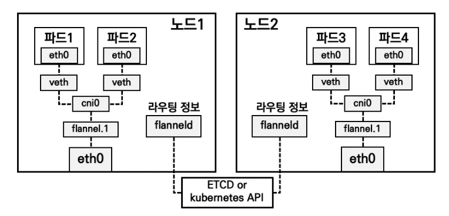
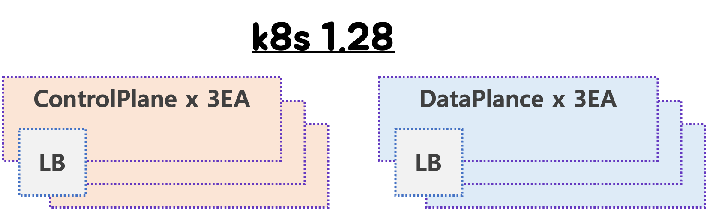
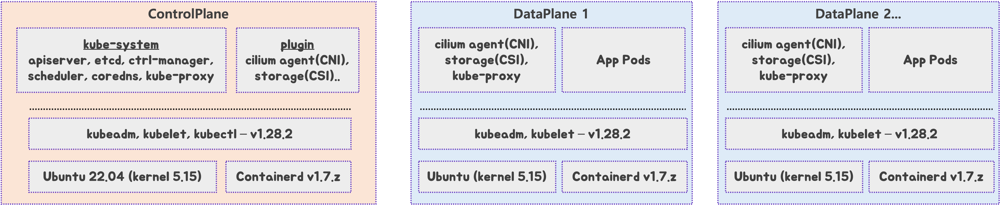
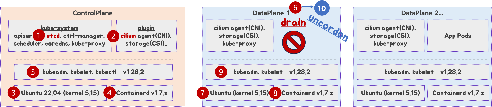

Kubeadm & K8S Upgrade
Kubeadm deep dive
kubeadm (Cluster Lifecycle project) 소개 https://github.com/kubernetes/kubeadm
- kubeadm : Kubeadm is a node bootstrapper
- kubeadm init to bootstrap the initial Kubernetes control-plane node.
- kubeadm join to bootstrap a Kubernetes worker node or an additional control plane node, and join it to the cluster.
- kubeadm upgrade to upgrade a Kubernetes cluster to a newer version.
- kubeadm reset to revert any changes made to this host by kubeadm init or kubeadm join.
- Kubeadm Deep Dive - Rohit Anand, NEC & Paco Xu, Dao Cloud (2023)
- Kubeadm workflow

- What kubeadm deploy?
- Controlplane Component 를 Static Pod 로 구성.
- ‘cri(containerd) 및 kubelet’ 설치는 사전에 되어 있어야하며, 설정 구성.

- kubeadm upgrade workflow

- Who uses kubeadm? : minikube, kind, clusterapi, kubespary 등.

- Part of the composable solution

- 참고로 etcdadm repo archived https://github.com/kubernetes-retired/etcdadm

- 참고로 etcdadm repo archived https://github.com/kubernetes-retired/etcdadm
- kubeadm : Kubeadm is a node bootstrapper
Vagrantfile
# Base Image https://portal.cloud.hashicorp.com/vagrant/discover/bento/rockylinux-10.0 BOX_IMAGE = "bento/rockylinux-10.0" # "bento/rockylinux-9" BOX_VERSION = "202510.26.0" N = 2 # max number of Worker Nodes Vagrant.configure("2") do |config| # ControlPlane Nodes config.vm.define "k8s-ctr" do |subconfig| subconfig.vm.box = BOX_IMAGE subconfig.vm.box_version = BOX_VERSION subconfig.vm.provider "virtualbox" do |vb| vb.customize ["modifyvm", :id, "--groups", "/K8S-Upgrade-Lab"] vb.customize ["modifyvm", :id, "--nicpromisc2", "allow-all"] vb.name = "k8s-ctr" vb.cpus = 4 vb.memory = 3072 # 2048 2560 3072 4096 vb.linked_clone = true end subconfig.vm.host_name = "k8s-ctr" subconfig.vm.network "private_network", ip: "192.168.10.100" subconfig.vm.network "forwarded_port", guest: 22, host: "60000", auto_correct: true, id: "ssh" subconfig.vm.synced_folder "./", "/vagrant", disabled: true end # Worker Nodes (1..N).each do |i| config.vm.define "k8s-w#{i}" do |subconfig| subconfig.vm.box = BOX_IMAGE subconfig.vm.box_version = BOX_VERSION subconfig.vm.provider "virtualbox" do |vb| vb.customize ["modifyvm", :id, "--groups", "/K8S-Upgrade-Lab"] vb.customize ["modifyvm", :id, "--nicpromisc2", "allow-all"] vb.name = "k8s-w#{i}" vb.cpus = 2 vb.memory = 2048 vb.linked_clone = true end subconfig.vm.host_name = "k8s-w#{i}" subconfig.vm.network "private_network", ip: "192.168.10.10#{i}" subconfig.vm.network "forwarded_port", guest: 22, host: "6000#{i}", auto_correct: true, id: "ssh" subconfig.vm.synced_folder "./", "/vagrant", disabled: true end end endcurl -O https://raw.githubusercontent.com/gasida/vagrant-lab/refs/heads/main/k8s-kubeadm/Vagrantfile
vagrant up→ vagrant status- macOS / Windows 에서
bento/rockylinux-10.0가상머신 구동 실패 시, Virtualbox 7.2.4 과 Vagrant 2.4.9 (현재 최신 버전) 설치해서 사용.- Rockylinux 10.0 Vagrant box version 202510.26.0 created with Bento by Progress Chef. Built with: parallels: 26.1.1, utm: 4.7.4, virtualbox: 7.2.4, vmware-fusion: 25.0.0.24995814, packer: v1.14.2 and tested with vagrant: 2.4.9 - Link
- macOS / Windows 에서
도전과제vagrant 대신, 가상머신에 OS 설치부터 처음 과정 부터 직접 수동으로 해보기
kubeadm 으로 k8s 구성 절차- [공통] 사전 설정
- [공통] CRI 설치 : containerd
- [공통] kubeadm, kubelet 및 kubectl 설치
- [Controlplane node] kubeadm 으로 k8s 클러스터 구성 → Flannel CNI 설치 → 편의성 설치 및 확인
- [Worker nodes] kubeadm 으로 k8s 클러스터 join → 확인
- 모니터링 툴 설치 : 프로메테우스-스택 설치 → 인증서 익스포터 설치 → 그라파나 대시보드 확인
- 샘플 애플리케이션 배포
- kubeadm 인증서 갱신
주요 설치 버전 정보: v1.32.11항목 버전 k8s 버전 호환성 Rocky Linux 10.0-1.6 RHEL 10 소스 기반 배포판으로 RHEL 정보 참고 containerd v2.1.5 CRI Version(v1), k8s 1.32~1.35 지원 - Link runc v1.3.3 정보 조사 필요 https://github.com/opencontainers/runc kubelet v1.32.11 k8s 버전 정책 문서 참고 - Docs kubeadm v1.32.11 상동 kubectl v1.32.11 상동 helm v3.18.6 k8s 1.30.x ~ 1.33.x 지원 - Docs flannel cni v0.27.3 k8s 1.28~ 이후 - Release
- [공통] 사전 설정 - K8S_1.32_Docs , CRI_Docs
기본 정보 확인 :
vagrant ssh k8s-ctr# User 정보 whoami id # uid=1000(vagrant) gid=1000(vagrant) groups=1000(vagrant) pwd # /home/vagrant # cpu, mem lscpu free -h # Disk lsblk # sda 8:0 0 64G 0 disk df -hT # Network ip -br -c -4 addr # enp0s9 UP 192.168.10.100/24 ip -c route ip addr # Host Info, Kernel hostnamectl # Kernel: Linux 6.12.0-55.39.1.el10_0.aarch64 uname -r rpm -aq | grep release rocky-release-10.0-1.6.el10.noarch # cgroup 버전 확인 stat -fc %T /sys/fs/cgroup cgroup2fs findmnt mount | grep cgroup cgroup2 on /sys/fs/cgroup type cgroup2 (rw,nosuid,nodev,noexec,relatime,seclabel,nsdelegate,memory_recursiveprot) ## systemd cgroup 계층 구조 확인 systemd-cgls --no-pager # Process pstree lsns
- root 권한(로그인 환경) 전환 :
sudo su -
Time, NTP 설정 : 인증서 만료 시간, 로그 타임스탬프 등 모든 노드에 동기화된 시간 필요
# timedatectl 정보 확인 timedatectl status # RTC in local TZ: yes -> Warning:... timedatectl set-local-rtc 0 timedatectl status # 시스템 타임존(Timezone)을 한국(KST, UTC+9) 으로 설정 : 시스템 시간은 UTC 기준 유지, 표시만 KST로 변환 date timedatectl set-timezone Asia/Seoul date # systemd가 시간 동기화 서비스(chronyd) 를 관리하도록 설정되어 있음 : ntpd 대신 chrony 사용 (Rocky 9/10 기본) timedatectl status timedatectl set-ntp true # System clock synchronized: yes -> NTP service: active # chronyc 확인 # chrony가 어떤 NTP 서버들을 알고 있고, 그중 어떤 서버를 기준으로 시간을 맞추는지를 보여줍니다. ## Stratum 2: 매우 신뢰도 높은 서버 ## Reach 377: 최근 8회 연속 응답 성공 (최대값) .-- Source mode '^' = server, '=' = peer, '#' = local clock. / .- Source state '*' = current best, '+' = combined, '-' = not combined, | / 'x' = may be in error, '~' = too variable, '?' = unusable. || .- xxxx [ yyyy ] +/- zzzz || Reachability register (octal) -. | xxxx = adjusted offset, || Log2(Polling interval) --. | | yyyy = measured offset, || \ | | zzzz = estimated error. || | | \ MS Name/IP address Stratum Poll Reach LastRx Last sample =============================================================================== ^- mail.innotab.com 3 6 77 3 -5445us[-5445us] +/- 32ms ^? 240b:400d:3:3300:aeda:71> 0 7 0 - +0ns[ +0ns] +/- 0ns ^* 175.210.18.47 2 6 77 4 -30us[ +32ms] +/- 13ms ^? 2401:c080:1c00:24a1:5400> 0 7 0 - +0ns[ +0ns] +/- 0ns ^? any.time.nl 0 7 0 - +0ns[ +0ns] +/- 0ns ^- any.time.nl 2 6 77 3 -3611us[-3611us] +/- 77ms ^? 2605:e440:44::de 0 7 0 - +0ns[ +0ns] +/- 0ns ^? 240b:400d:3:3300:aeda:71> 0 7 0 - +0ns[ +0ns] +/- 0ns # 현재 시스템 시간이 얼마나 정확한지 종합 성적표 chronyc tracking Reference ID : AFD2122F (175.210.18.47) ...
SELinux 설정, firewalld(방화벽) 끄기
# SELinux 설정 : Kubernetes는 Permissive 권장 getenforce sestatus # Current mode: enforcing setenforce 0 getenforce sestatus # Current mode: permissive # 재부팅 시에도 Permissive 적용 cat /etc/selinux/config | grep ^SELINUX SELINUX=enforcing SELINUXTYPE=targeted sed -i 's/^SELINUX=enforcing/SELINUX=permissive/' /etc/selinux/config cat /etc/selinux/config | grep ^SELINUX SELINUX=permissive SELINUXTYPE=targeted # firewalld(방화벽) 끄기 systemctl status firewalld systemctl disable --now firewalld systemctl status firewalld Jan 23 18:41:24 localhost systemd[1]: Starting firewalld.service - firewalld - dynamic firewall daemon... Jan 23 18:41:25 localhost systemd[1]: Started firewalld.service - firewalld - dynamic firewall daemon. Removed '/etc/systemd/system/multi-user.target.wants/firewalld.service'. Removed '/etc/systemd/system/dbus-org.fedoraproject.FirewallD1.service'. ○ firewalld.service - firewalld - dynamic firewall daemon Loaded: loaded (/usr/lib/systemd/system/firewalld.service; disabled; preset: enabled) Active: inactive (dead) Docs: man:firewalld(1) Jan 23 18:41:24 localhost systemd[1]: Starting firewalld.service - firewalld - dynamic firewall daemon... Jan 23 18:41:25 localhost systemd[1]: Started firewalld.service - firewalld - dynamic firewall daemon. Jan 23 18:46:21 k8s-ctr systemd[1]: Stopping firewalld.service - firewalld - dynamic firewall daemon... Jan 23 18:46:21 k8s-ctr systemd[1]: firewalld.service: Deactivated successfully. Jan 23 18:46:21 k8s-ctr systemd[1]: Stopped firewalld.service - firewalld - dynamic firewall daemon. Jan 23 18:46:21 k8s-ctr systemd[1]: firewalld.service: Consumed 239ms CPU time, 70.7M memory peak.
Swap 비활성화 ⇒ 아래 ‘(TS) Rocky Linux 10 vagrant image 에 SWAP off 해결’ 실습 내용 참고
# Swap 비활성화 lsblk NAME MAJ:MIN RM SIZE RO TYPE MOUNTPOINTS sda 8:0 0 64G 0 disk ├─sda1 8:1 0 600M 0 part /boot/efi ├─sda2 8:2 0 3.8G 0 part [SWAP] └─sda3 8:3 0 59.6G 0 part / free -h free -h | grep Swap swapoff -a lsblk NAME MAJ:MIN RM SIZE RO TYPE MOUNTPOINTS sda 8:0 0 64G 0 disk ├─sda1 8:1 0 600M 0 part /boot/efi ├─sda2 8:2 0 3.8G 0 part └─sda3 8:3 0 59.6G 0 part / free -h | grep Swap Swap: 0B 0B 0B # 재부팅 시에도 'Swap 비활성화' 적용되도록 /etc/fstab에서 swap 라인 삭제 cat /etc/fstab | grep swap UUID=2270fed4-fef4-43c1-909f-b08a96bb14e9 none swap defaults 0 0 sed -i '/swap/d' /etc/fstab cat /etc/fstab | grep swap
커널 모듈 및 커널 파라미터 설정(네트워크 설정)
# 커널 모듈 확인 lsmod lsmod | grep -iE 'overlay|br_netfilter' # 커널 모듈 로드 modprobe overlay modprobe br_netfilter lsmod | grep -iE 'overlay|br_netfilter' # cat <<EOF | tee /etc/modules-load.d/k8s.conf overlay br_netfilter EOF tree /etc/modules-load.d/ /etc/modules-load.d/ └── k8s.conf # 커널 파라미터 설정 : 네트워크 설정 - 브릿지 트래픽이 iptables를 거치도록 함 cat <<EOF | tee /etc/sysctl.d/k8s.conf net.bridge.bridge-nf-call-iptables = 1 net.bridge.bridge-nf-call-ip6tables = 1 net.ipv4.ip_forward = 1 EOF tree /etc/sysctl.d/ # 설정 적용 sysctl --system # 적용 확인 sysctl net.bridge.bridge-nf-call-iptables net.bridge.bridge-nf-call-iptables = 1 sysctl net.ipv4.ip_forward net.ipv4.ip_forward = 1
hosts 설정
# hosts 설정 cat /etc/hosts sed -i '/^127\.0\.\(1\|2\)\.1/d' /etc/hosts cat << EOF >> /etc/hosts 192.168.10.100 k8s-ctr 192.168.10.101 k8s-w1 192.168.10.102 k8s-w2 EOF cat /etc/hosts ... 192.168.10.100 k8s-ctr 192.168.10.101 k8s-w1 192.168.10.102 k8s-w2 # 확인 ping -c 1 k8s-ctr ping -c 1 k8s-w1 ping -c 1 k8s-w2 ... --- k8s-ctr ping statistics --- 1 packets transmitted, 1 received, 0% packet loss, time 0ms rtt min/avg/max/mdev = 0.042/0.042/0.042/0.000 ms PING k8s-w1 (192.168.10.101) 56(84) bytes of data. 64 bytes from k8s-w1 (192.168.10.101): icmp_seq=1 ttl=64 time=1.45 ms --- k8s-w1 ping statistics --- 1 packets transmitted, 1 received, 0% packet loss, time 0ms rtt min/avg/max/mdev = 1.447/1.447/1.447/0.000 ms PING k8s-w2 (192.168.10.102) 56(84) bytes of data. 64 bytes from k8s-w2 (192.168.10.102): icmp_seq=1 ttl=64 time=0.807 ms --- k8s-w2 ping statistics --- 1 packets transmitted, 1 received, 0% packet loss, time 0ms rtt min/avg/max/mdev = 0.807/0.807/0.807/0.000 ms
- [공통] CRI 설치 : containerd(runc) v2.1.5 - Docs , K8S_1.32_CRI_Docs
containerd is a member of CNCF with 'graduated' status. : An open and reliable container runtime
- containerd is an industry-standard container runtime with an emphasis on simplicity, robustness, and portability. It is available as a daemon for Linux and Windows, which can manage the complete container lifecycle of its host system: image transfer and storage, container execution and supervision, low-level storage and network attachments, etc.
- containerd is designed to be embedded into a larger system, rather than being used directly by developers or end-users.

- Containerd 와 K8S(1.32~1.34) 호환 버전 확인(2.1.0+, 2.0.1+, 1.7.24+, 1.6.36+…) - Docs
Kubernetes Version containerd Version CRI Version 1.32* 2.1.0+, 2.0.1+, 1.7.24+, 1.6.36+ v1 1.33 2.1.0+, 2.0.4+, 1.7.24+, 1.6.36+ v1 1.34 2.1.3+, 2.0.6+, 1.7.28+, 1.6.39+ v1 1.35 2.2.0+, 2.1.5+, 1.7.28+ v1
- Daemon Configuration : /etc/containerd/config.toml
Configuration Version Minimum containerd version 1 v1.0.0 2 v1.3.0 3 v2.0.0
containerd(runc) 설치 v2.1.5 - Getting-started
# dnf == yum, 버전 정보 확인 dnf yum dnf --version yum --version # Docker 저장소 추가 : dockerd 설치 X, containerd 설치 OK dnf repolist repo id repo name appstream Rocky Linux 10 - AppStream baseos Rocky Linux 10 - BaseOS extras Rocky Linux 10 - Extras tree /etc/yum.repos.d/ /etc/yum.repos.d/ ├── rocky-addons.repo ├── rocky-devel.repo ├── rocky-extras.repo └── rocky.repo dnf config-manager --add-repo https://download.docker.com/linux/centos/docker-ce.repo dnf repolist repo id repo name appstream Rocky Linux 10 - AppStream baseos Rocky Linux 10 - BaseOS docker-ce-stable Docker CE Stable - aarch64 extras Rocky Linux 10 - Extras tree /etc/yum.repos.d/ /etc/yum.repos.d/ ├── docker-ce.repo ├── rocky-addons.repo ├── rocky-devel.repo ├── rocky-extras.repo └── rocky.repo cat /etc/yum.repos.d/docker-ce.repo dnf makecache # 설치 가능한 모든 containerd.io 버전 확인 dnf list --showduplicates containerd.io Available Packages containerd.io.aarch64 1.7.23-3.1.el10 docker-ce-stable containerd.io.aarch64 1.7.24-3.1.el10 docker-ce-stable containerd.io.aarch64 1.7.25-3.1.el10 docker-ce-stable containerd.io.aarch64 1.7.26-3.1.el10 docker-ce-stable containerd.io.aarch64 1.7.27-3.1.el10 docker-ce-stable containerd.io.aarch64 1.7.28-1.el10 docker-ce-stable containerd.io.aarch64 1.7.28-2.el10 docker-ce-stable containerd.io.aarch64 1.7.29-1.el10 docker-ce-stable containerd.io.aarch64 2.1.5-1.el10 docker-ce-stable containerd.io.aarch64 2.2.0-2.el10 docker-ce-stable containerd.io.aarch64 2.2.1-1.el10 docker-ce-stable # containerd 설치 dnf install -y containerd.io-2.1.5-1.el10 Downloading Packages: containerd.io-2.1.5-1.el10.aarch64.rpm # 설치된 파일 확인 which runc && runc --version /usr/bin/runc runc version 1.3.3 commit: v1.3.3-0-gd842d771 spec: 1.2.1 go: go1.24.9 libseccomp: 2.5.3 which containerd && containerd --version /usr/bin/containerd containerd containerd.io v2.1.5 fcd43222d6b07379a4be9786bda52438f0dd16a1 which containerd-shim-runc-v2 && containerd-shim-runc-v2 -v /usr/bin/containerd-shim-runc-v2 containerd-shim-runc-v2: Version: v2.1.5 Revision: fcd43222d6b07379a4be9786bda52438f0dd16a1 Go version: go1.24.9 which ctr && ctr --version /usr/bin/ctr ctr containerd.io v2.1.5 cat /etc/containerd/config.toml tree /usr/lib/systemd/system | grep containerd cat /usr/lib/systemd/system/containerd.service # 기본 설정 생성 및 SystemdCgroup 활성화 (매우 중요) containerd config default | tee /etc/containerd/config.toml version = 3 # containerd version 2.0 이상 시 root = '/var/lib/containerd' state = '/run/containerd' ... # https://v1-32.docs.kubernetes.io/ko/docs/setup/production-environment/container-runtimes/#cgroupfs-cgroup-driver # cgroupfs 드라이버는 kubelet의 기본 cgroup 드라이버이다. # cgroupfs 드라이버가 사용될 때, kubelet과 컨테이너 런타임은 직접적으로 cgroup 파일시스템과 상호작용하여 cgroup들을 설정한다. # cgroupfs 드라이버가 권장되지 않는 때가 있는데, systemd가 init 시스템인 경우이다. # 이것은 systemd가 시스템에 단 하나의 cgroup 관리자만 있을 것으로 기대하기 때문이다. # 또한, cgroup v2를 사용할 경우에도 cgroupfs 대신 systemd cgroup 드라이버를 사용한다. # ----------------------------------------------------------- # https://github.com/containerd/containerd/blob/main/docs/cri/config.md ## In containerd 2.x version = 3 [plugins.'io.containerd.cri.v1.images'] snapshotter = "overlayfs" ## In containerd 1.x version = 2 [plugins."io.containerd.grpc.v1.cri".containerd] snapshotter = "overlayfs" # ----------------------------------------------------------- cat /etc/containerd/config.toml | grep -i systemdcgroup sed -i 's/SystemdCgroup = false/SystemdCgroup = true/g' /etc/containerd/config.toml cat /etc/containerd/config.toml | grep -i systemdcgroup # systemd unit 파일 최신 상태 읽기 systemctl daemon-reload # containerd start 와 enabled systemctl enable --now containerd # systemctl status containerd --no-pager journalctl -u containerd.service --no-pager pstree -alnp systemd-cgls --no-pager # containerd의 유닉스 도메인 소켓 확인 : kubelet에서 사용 , containerd client 3종(ctr, nerdctr, crictl)도 사용 containerd config dump | grep -n containerd.sock 11: address = '/run/containerd/containerd.sock' ls -l /run/containerd/containerd.sock # linux socket Open 정보 확인 ss -xl | grep containerd ss -xnp | grep containerd # 플러그인 확인 ctr --address /run/containerd/containerd.sock version ctr plugins ls TYPE ID PLATFORMS STATUS io.containerd.content.v1 content - ok # 이미지 레이어 저장 ... io.containerd.snapshotter.v1 native linux/arm64/v8 ok io.containerd.snapshotter.v1 overlayfs linux/arm64/v8 ok # Kubernetes 기본 snapshotter io.containerd.snapshotter.v1 zfs linux/arm64/v8 skip ... io.containerd.metadata.v1 bolt - ok # 메타데이터 DB (bolt)
도전과제containerd 플러그인 중 ‘stargz-snapshotter’ - Github 나 ‘SOCI Snapshotter’ - Github , Blog ,
https://aws.amazon.com/ko/blogs/tech/under-the-hood-lazy-loading-container-images-with-seekable-oci-and-aws-fargate/


도전과제containerd v2.x.y 대신 → v1.x.y 설치 및 설정(config.toml) 로 구성해보기 ⇒ 이후 k8s upgrade 시 v2.x.y 마이그레이션도 해보기
- [공통] kubeadm, kubelet 및 kubectl 설치 v1.32.11 - Docs
kubeadm, kubelet 및 kubectl 설치 v1.32.11
# repo 추가 ## exclude=... : 실수로 dnf update 시 kubelet 자동 업그레이드 방지 ## dnf update로 kubelet이 자동 업그레이드 되버리면 서비스 순단이 발생 할 수 있음 dnf repolist tree /etc/yum.repos.d/ cat <<EOF | tee /etc/yum.repos.d/kubernetes.repo [kubernetes] name=Kubernetes baseurl=https://pkgs.k8s.io/core:/stable:/v1.32/rpm/ enabled=1 gpgcheck=1 gpgkey=https://pkgs.k8s.io/core:/stable:/v1.32/rpm/repodata/repomd.xml.key exclude=kubelet kubeadm kubectl cri-tools kubernetes-cni # 자동 업그레이드 방지를 위함 EOF dnf makecache # 설치 ## --disableexcludes=... kubernetes repo에 설정된 exclude 규칙을 이번 설치에서만 무시(1회성 옵션 처럼 사용) ## 설치 가능 버전 확인 dnf list --showduplicates kubelet # '--disableexcludes=kubernetes' 아래 처럼 있는 경우와 없는 경우 비교해보기 dnf list --showduplicates kubelet --disableexcludes=kubernetes dnf list --showduplicates kubeadm --disableexcludes=kubernetes dnf list --showduplicates kubectl --disableexcludes=kubernetes ... kubectl.x86_64 1.32.10-150500.1.1 kubernetes kubectl.aarch64 1.32.11-150500.1.1 kubernetes ... ## 버전 정보 미지정 시, 제공 가능 최신 버전 설치됨. dnf install -y kubelet kubeadm kubectl --disableexcludes=kubernetes Installing: kubeadm aarch64 1.32.11-150500.1.1 kubernetes 10 M kubectl aarch64 1.32.11-150500.1.1 kubernetes 9.4 M kubelet aarch64 1.32.11-150500.1.1 kubernetes 13 M Installing dependencies: cri-tools aarch64 1.32.0-150500.1.1 kubernetes 6.2 M kubernetes-cni aarch64 1.6.0-150500.1.1 kubernetes 7.2 M # kubelet 활성화 (실제 기동은 kubeadm init 후에 시작됨) systemctl enable --now kubelet ps -ef |grep kubelet root 5421 4554 0 19:04 pts/1 00:00:00 grep --color=auto kubelet # 설치 파일들 확인 which kubeadm && kubeadm version -o yaml which kubectl && kubectl version --client=true Client Version: v1.32.11 Kustomize Version: v5.5.0 which kubelet && kubelet --version Kubernetes v1.32.11 # cri-tools which crictl && crictl version WARN[0000] Config "/etc/crictl.yaml" does not exist, trying next: "/usr/bin/crictl.yaml" # /etc/crictl.yaml 파일 작성 cat << EOF > /etc/crictl.yaml runtime-endpoint: unix:///run/containerd/containerd.sock image-endpoint: unix:///run/containerd/containerd.sock EOF crictl info | jq { "cniconfig": { "Networks": [ { "Config": { "CNIVersion": "0.3.1", "Name": "cni-loopback", "Plugins": [ { "Network": { "ipam": {}, "type": "loopback" }, "Source": "{\"type\":\"loopback\"}" } ], "Source": "{\n\"cniVersion\": \"0.3.1\",\n\"name\": \"cni-loopback\",\n\"plugins\": [{\n \"type\": \"loopback\"\n}]\n}" }, "IFName": "lo" } ], "PluginConfDir": "/etc/cni/net.d", "PluginDirs": [ "/opt/cni/bin" ], "PluginMaxConfNum": 1, "Prefix": "eth" }, ... "containerdEndpoint": "/run/containerd/containerd.sock", "containerdRootDir": "/var/lib/containerd", ... "status": { ... { "message": "Network plugin returns error: cni plugin not initialized", "reason": "NetworkPluginNotReady", "status": false, "type": "NetworkReady" }, # kubernetes-cni : 파드 네트워크 구성을 위한 CNI 바이너리 파일 확인 ls -al /opt/cni/bin tree /opt/cni /opt/cni └── bin ├── bandwidth ├── bridge ├── portmap ... tree /etc/cni/ /etc/cni/ └── net.d # systemctl is-active kubelet systemctl status kubelet --no-pager journalctl -u kubelet --no-pager tree /usr/lib/systemd/system | grep kubelet -A1 ├── kubelet.service ├── kubelet.service.d │ └── 10-kubeadm.conf cat /usr/lib/systemd/system/kubelet.service cat /usr/lib/systemd/system/kubelet.service.d/10-kubeadm.conf ... tree /etc/kubernetes tree /var/lib/kubelet cat /etc/sysconfig/kubelet KUBELET_EXTRA_ARGS= # cgroup , namespace 정보 확인 systemd-cgls --no-pager lsns # containerd의 유닉스 도메인 소켓 확인 : kubelet에서 사용 , containerd client 3종(ctr, nerdctr, crictl)도 사용 ls -l /run/containerd/containerd.sock srw-rw----. 1 root root 0 Jan 23 18:59 /run/containerd/containerd.sock ss -xl | grep containerd u_str LISTEN 0 4096 /run/containerd/containerd.sock.ttrpc 19800 * 0 u_str LISTEN 0 4096 /run/containerd/containerd.sock 19801 * 0 ss -xnp | grep containerd u_str ESTAB 0 0 * 19793 * 18135 users:(("containerd",pid=5100,fd=2),("containerd",pid=5100,fd=1))

- [k8s-ctr] kubeadm 으로 k8s 클러스터 구성 & Flannel CNI 설치 v0.27.3 & 편의성 설정 등
Customizing components with the kubeadm API - Docs
- kubeadm Configuration (v1beta4) - Docs
apiVersion: kubeadm.k8s.io/v1beta4 kind: InitConfiguration bootstrapTokens: - token: "9a08jv.c0izixklcxtmnze7" description: "kubeadm bootstrap token" ttl: "24h" - token: "783bde.3f89s0fje9f38fhf" description: "another bootstrap token" usages: - authentication - signing groups: - system:bootstrappers:kubeadm:default-node-token nodeRegistration: name: "ec2-10-100-0-1" criSocket: "unix:///var/run/containerd/containerd.sock" taints: - key: "kubeadmNode" value: "someValue" effect: "NoSchedule" kubeletExtraArgs: - name: v value: "5" ignorePreflightErrors: - IsPrivilegedUser imagePullPolicy: "IfNotPresent" imagePullSerial: true localAPIEndpoint: advertiseAddress: "10.100.0.1" bindPort: 6443 certificateKey: "e6a2eb8581237ab72a4f494f30285ec12a9694d750b9785706a83bfcbbbd2204" skipPhases: - preflight timeouts: controlPlaneComponentHealthCheck: "60s" kubenetesAPICall: "40s" --- apiVersion: kubeadm.k8s.io/v1beta4 kind: ClusterConfiguration etcd: # one of local or external local: imageRepository: "registry.k8s.io" imageTag: "3.2.24" dataDir: "/var/lib/etcd" extraArgs: - name: listen-client-urls value: http://10.100.0.1:2379 extraEnvs: - name: SOME_VAR value: SOME_VALUE serverCertSANs: - ec2-10-100-0-1.compute-1.amazonaws.com peerCertSANs: - 10.100.0.1 # external: # endpoints: # - 10.100.0.1:2379 # - 10.100.0.2:2379 # caFile: "/etcd/kubernetes/pki/etcd/etcd-ca.crt" # certFile: "/etcd/kubernetes/pki/etcd/etcd.crt" # keyFile: "/etcd/kubernetes/pki/etcd/etcd.key" networking: serviceSubnet: "10.96.0.0/16" podSubnet: "10.244.0.0/24" dnsDomain: "cluster.local" kubernetesVersion: "v1.21.0" controlPlaneEndpoint: "10.100.0.1:6443" apiServer: extraArgs: - name: authorization-mode value: Node,RBAC extraEnvs: - name: SOME_VAR value: SOME_VALUE extraVolumes: - name: "some-volume" hostPath: "/etc/some-path" mountPath: "/etc/some-pod-path" readOnly: false pathType: File certSANs: - "10.100.1.1" - "ec2-10-100-0-1.compute-1.amazonaws.com" controllerManager: extraArgs: - name: node-cidr-mask-size value: "20" extraVolumes: - name: "some-volume" hostPath: "/etc/some-path" mountPath: "/etc/some-pod-path" readOnly: false pathType: File scheduler: extraArgs: - name: address value: 10.100.0.1 extraVolumes: - name: "some-volume" hostPath: "/etc/some-path" mountPath: "/etc/some-pod-path" readOnly: false pathType: File certificatesDir: "/etc/kubernetes/pki" imageRepository: "registry.k8s.io" clusterName: "example-cluster" encryptionAlgorithm: ECDSA-P256 dns: disabled: true # disable CoreDNS proxy: disabled: true # disable kube-proxy --- apiVersion: kubelet.config.k8s.io/v1beta1 kind: KubeletConfiguration # kubelet specific options here --- apiVersion: kubeproxy.config.k8s.io/v1alpha1 kind: KubeProxyConfiguration # kube-proxy specific options here
- kubeadm Configuration (v1beta4) - Docs
[k8s-ctr] kubeadm init 수행
- 사전 검사 (Preflight Checks)
- [Error] if the CRI endpoint does not answer ← CRI(Container Runtime Interface) 엔드포인트 연결 확인
- [Error] if user is not root ← 루트 권한 확인
- [Error] if kubelet version is lower that the minimum kubelet version supported by kubeadm (current minor -1) ← 버전 확인
- 인증서 및 키 생성 (Certificates) : Control Plane이 안전하게 통신할 수 있도록 인증서를
/etc/kubernetes/pki생성- CA 인증서 (클러스터 전체 기본 신뢰체계)
- API Server용 서버 인증서
- API Server ↔ kubelet 통신용 인증서
- Front-Proxy CA / Front-Proxy 클라이언트 인증서
- etcd 관련 인증서 및 키 (local etcd 사용 시)
- control plane components 를 위한 kubeconfig 파일을
/etc/kubernetes생성- A kubeconfig file for the kubelet to use during TLS bootstrap -
/etc/kubernetes/bootstrap-kubelet.conf
- A kubeconfig file for controller-manager,
/etc/kubernetes/controller-manager.conf
- A kubeconfig file for scheduler,
/etc/kubernetes/scheduler.conf
/etc/kubernetes/admin.conf,/etc/kubernetes/super-admin.conf
- A kubeconfig file for the kubelet to use during TLS bootstrap -
- Control Plane 구성 요소 생성 (Static Pods)
- 공통 사항
- All static Pods are deployed on
kube-systemnamespace
- All static Pods get
tier:control-planeandcomponent:{component-name}labels
- All static Pods use the
system-node-criticalpriority class
hostNetwork: trueis set on all static Pods to allow control plane startup
- All static Pods are deployed on
- kube-apiserver
- kube-controller-manager
- kube-scheduler
- etcd (local etcd 사용하는 경우)
- 공통 사항
- kubelet 시작 및 대기
- kubeadm은 manifest 적용 후 kubelet을 재시작하거나 설정을 적용하고 , Control Plane이 성공적으로 시작될 때까지 기다립니다.
- API Server가 정상적으로 건강 상태(healthz)를 반환할 때까지 대기합니다 :
/healthzor/livezendpoints.
- Save the kubeadm ClusterConfiguration in a ConfigMap for later reference
kubectl get cm -n kube-systemkubeadm-config
- control-plane 노드 라벨링 및 태인트 Mark the node as control-plane
- Labels the node as control-plane with
node-role.kubernetes.io/control-plane=""
- Taints the node with
node-role.kubernetes.io/control-plane:NoSchedule← 일반 워크로드가 Control Plane에 스케줄 X
- Labels the node as control-plane with
- Bootstrap 토큰 생성 및 클러스터 부트스트랩 설정 Configure TLS-Bootstrapping for node joining
- Control Plane에 부트스트랩 토큰을 생성합니다. Create a bootstrap token
- 각 노드가 클러스터에 합류할 수 있도록 ConfigMap, RBAC 규칙, CSR 접근 권한 등을 설정합니다.
- Create the public cluster-info ConfigMap : '신원 확인 전, 최소한의 신뢰 부트스트랩 데이터'
- This phase creates the
cluster-infoConfigMap in thekube-publicnamespace.
- Additionally, it creates a Role and a RoleBinding granting access to the ConfigMap for unauthenticated users (i.e. users in RBAC group
system:unauthenticated).
- This phase creates the
- Allow joining nodes to call CSR API …(생략)…
- Create the public cluster-info ConfigMap : '신원 확인 전, 최소한의 신뢰 부트스트랩 데이터'
- 부트스트랩 토큰은 기본적으로 24시간 유효하며,
kubeadm join시 사용할 수 있습니다.
- 필수 애드온 설치 (CoreDNS, kube-proxy)
- kube-proxy
- A ServiceAccount for
kube-proxyis created in thekube-systemnamespace
- then kube-proxy is deployed as a DaemonSet
- A ServiceAccount for
- CoreDNS
- The CoreDNS service is named
kube-dnsfor compatibility reasons with the legacykube-dnsaddon.
- A ServiceAccount for CoreDNS is created in the
kube-systemnamespace.
- The
corednsServiceAccount is bound to the privileges in thesystem:corednsClusterRole.
- In Kubernetes version 1.21, support for using
kube-dnswith kubeadm was removed.
- The CoreDNS service is named
- kube-proxy
# 기본 환경 정보 출력 저장 crictl images crictl ps cat /etc/sysconfig/kubelet tree /etc/kubernetes | tee -a etc_kubernetes-1.txt tree /var/lib/kubelet | tee -a var_lib_kubelet-1.txt tree /run/containerd/ -L 3 | tee -a run_containerd-1.txt pstree -alnp | tee -a pstree-1.txt systemd-cgls --no-pager | tee -a systemd-cgls-1.txt lsns | tee -a lsns-1.txt ip addr | tee -a ip_addr-1.txt ss -tnlp | tee -a ss-1.txt df -hT | tee -a df-1.txt findmnt | tee -a findmnt-1.txt sysctl -a | tee -a sysctl-1.txt # kubeadm Configuration 파일 작성 cat << EOF > kubeadm-init.yaml apiVersion: kubeadm.k8s.io/v1beta4 kind: InitConfiguration bootstrapTokens: - token: "123456.1234567890123456" ttl: "0s" usages: - signing - authentication nodeRegistration: kubeletExtraArgs: - name: node-ip value: "192.168.10.100" # 미설정 시 10.0.2.15 맵핑 criSocket: "unix:///run/containerd/containerd.sock" localAPIEndpoint: advertiseAddress: "192.168.10.100" --- apiVersion: kubeadm.k8s.io/v1beta4 kind: ClusterConfiguration kubernetesVersion: "1.32.11" networking: podSubnet: "10.244.0.0/16" serviceSubnet: "10.96.0.0/16" EOF cat kubeadm-init.yaml # (옵션) 컨테이너 이미지 미리 다운로드 : 특히 업그레이드 작업 시, 작업 시간 단축을 위해서 수행할 것 kubeadm config images pull # k8s controlplane 초기화 설정 수행 kubeadm init --config="kubeadm-init.yaml" --dry-run tree /etc/kubernetes kubeadm init --config="kubeadm-init.yaml" [init] Using Kubernetes version: v1.32.11 ... [certs] Using certificateDir folder "/etc/kubernetes/pki" [certs] Generating "ca" certificate and key [certs] Generating "apiserver" certificate and key [certs] apiserver serving cert is signed for DNS names [k8s-ctr kubernetes kubernetes.default kubernetes.default.svc kubernetes.default.svc.cluster.local] and IPs [10.96.0.1 192.168.10.100] [certs] Generating "apiserver-kubelet-client" certificate and key [certs] Generating "front-proxy-ca" certificate and key [certs] Generating "front-proxy-client" certificate and key [certs] Generating "etcd/ca" certificate and key [certs] Generating "etcd/server" certificate and key [certs] etcd/server serving cert is signed for DNS names [k8s-ctr localhost] and IPs [192.168.10.100 127.0.0.1 ::1] [certs] Generating "etcd/peer" certificate and key [certs] etcd/peer serving cert is signed for DNS names [k8s-ctr localhost] and IPs [192.168.10.100 127.0.0.1 ::1] [certs] Generating "etcd/healthcheck-client" certificate and key [certs] Generating "apiserver-etcd-client" certificate and key [certs] Generating "sa" key and public key [kubeconfig] Using kubeconfig folder "/etc/kubernetes" [kubeconfig] Writing "admin.conf" kubeconfig file [kubeconfig] Writing "super-admin.conf" kubeconfig file [kubeconfig] Writing "kubelet.conf" kubeconfig file [kubeconfig] Writing "controller-manager.conf" kubeconfig file [kubeconfig] Writing "scheduler.conf" kubeconfig file [etcd] Creating static Pod manifest for local etcd in "/etc/kubernetes/manifests" [control-plane] Using manifest folder "/etc/kubernetes/manifests" [control-plane] Creating static Pod manifest for "kube-apiserver" [control-plane] Creating static Pod manifest for "kube-controller-manager" [control-plane] Creating static Pod manifest for "kube-scheduler" [kubelet-start] Writing kubelet environment file with flags to file "/var/lib/kubelet/kubeadm-flags.env" [kubelet-start] Writing kubelet configuration to file "/var/lib/kubelet/config.yaml" [kubelet-start] Starting the kubelet [wait-control-plane] Waiting for the kubelet to boot up the control plane as static Pods from directory "/etc/kubernetes/manifests" [kubelet-check] Waiting for a healthy kubelet at http://127.0.0.1:10248/healthz. This can take up to 4m0s [kubelet-check] The kubelet is healthy after 1.003793571s [api-check] Waiting for a healthy API server. This can take up to 4m0s [api-check] The API server is healthy after 3.004974627s [upload-config] Storing the configuration used in ConfigMap "kubeadm-config" in the "kube-system" Namespace [kubelet] Creating a ConfigMap "kubelet-config" in namespace kube-system with the configuration for the kubelets in the cluster [upload-certs] Skipping phase. Please see --upload-certs [mark-control-plane] Marking the node k8s-ctr as control-plane by adding the labels: [node-role.kubernetes.io/control-plane node.kubernetes.io/exclude-from-external-load-balancers] [mark-control-plane] Marking the node k8s-ctr as control-plane by adding the taints [node-role.kubernetes.io/control-plane:NoSchedule] [bootstrap-token] Using token: 123456.1234567890123456 [bootstrap-token] Configuring bootstrap tokens, cluster-info ConfigMap, RBAC Roles [bootstrap-token] Configured RBAC rules to allow Node Bootstrap tokens to get nodes [bootstrap-token] Configured RBAC rules to allow Node Bootstrap tokens to post CSRs in order for nodes to get long term certificate credentials [bootstrap-token] Configured RBAC rules to allow the csrapprover controller automatically approve CSRs from a Node Bootstrap Token [bootstrap-token] Configured RBAC rules to allow certificate rotation for all node client certificates in the cluster [bootstrap-token] Creating the "cluster-info" ConfigMap in the "kube-public" namespace [kubelet-finalize] Updating "/etc/kubernetes/kubelet.conf" to point to a rotatable kubelet client certificate and key [addons] Applied essential addon: CoreDNS [addons] Applied essential addon: kube-proxy Your Kubernetes control-plane has initialized successfully! To start using your cluster, you need to run the following as a regular user: mkdir -p $HOME/.kube sudo cp -i /etc/kubernetes/admin.conf $HOME/.kube/config sudo chown $(id -u):$(id -g) $HOME/.kube/config Alternatively, if you are the root user, you can run: export KUBECONFIG=/etc/kubernetes/admin.conf You should now deploy a pod network to the cluster. Run "kubectl apply -f [podnetwork].yaml" with one of the options listed at: https://kubernetes.io/docs/concepts/cluster-administration/addons/ Then you can join any number of worker nodes by running the following on each as root: kubeadm join 192.168.10.100:6443 --token 123456.1234567890123456 \ --discovery-token-ca-cert-hash sha256:a09d74b0e1ee82954df756fd8bd871770723494d68d7a31e463598c6a243ce38# crictl 확인 crictl images IMAGE TAG IMAGE ID SIZE registry.k8s.io/coredns/coredns v1.11.3 2f6c962e7b831 16.9MB registry.k8s.io/etcd 3.5.24-0 1211402d28f58 21.9MB registry.k8s.io/kube-apiserver v1.32.11 58951ea1a0b5d 26.4MB registry.k8s.io/kube-controller-manager v1.32.11 82766e5f2d560 24.2MB registry.k8s.io/kube-proxy v1.32.11 dcdb790dc2bfe 27.6MB registry.k8s.io/kube-scheduler v1.32.11 cfa17ff3d6634 19.2MB registry.k8s.io/pause 3.10 afb61768ce381 268kB crictl ps CONTAINER IMAGE CREATED STATE NAME ATTEMPT POD ID POD NAMESPACE 3c9fd33c30d5f dcdb790dc2bfe About a minute ago Running kube-proxy 0 a10bc8c01000b kube-proxy-7b8hn kube-system d2db3a30dbf46 cfa17ff3d6634 About a minute ago Running kube-scheduler 0 90a02faa72eaf kube-scheduler-k8s-ctr kube-system 3be641bf3426e 82766e5f2d560 About a minute ago Running kube-controller-manager 0 e40a26ab2c4a1 kube-controller-manager-k8s-ctr kube-system c97d94cb384fb 58951ea1a0b5d About a minute ago Running kube-apiserver 0 1ea0e66b2cd45 kube-apiserver-k8s-ctr kube-system 47622274bbce5 1211402d28f58 About a minute ago Running etcd 0 5b6ad7f4b6db1 etcd-k8s-ctr kube-system # kubeconfig 작성 mkdir -p /root/.kube cp -i /etc/kubernetes/admin.conf /root/.kube/config chown $(id -u):$(id -g) /root/.kube/config # 확인 kubectl cluster-info Kubernetes control plane is running at https://192.168.10.100:6443 CoreDNS is running at https://192.168.10.100:6443/api/v1/namespaces/kube-system/services/kube-dns:dns/proxy kubectl get node -owide NAME STATUS ROLES AGE VERSION INTERNAL-IP EXTERNAL-IP OS-IMAGE KERNEL-VERSION CONTAINER-RUNTIME k8s-ctr NotReady control-plane 2m10s v1.32.11 192.168.10.100 <none> Rocky Linux 10.0 (Red Quartz) 6.12.0-55.39.1.el10_0.aarch64 containerd://2.1.5 kubectl get nodes -o json | jq ".items[] | {name:.metadata.name} + .status.capacity" ... kubectl get pod -n kube-system -owide NAME READY STATUS RESTARTS AGE IP NODE NOMINATED NODE READINESS GATES coredns-668d6bf9bc-26zpg 0/1 Pending 0 2m24s <none> <none> <none> <none> coredns-668d6bf9bc-tsxf8 0/1 Pending 0 2m24s <none> <none> <none> <none> etcd-k8s-ctr 1/1 Running 0 2m32s 192.168.10.100 k8s-ctr <none> <none> kube-apiserver-k8s-ctr 1/1 Running 0 2m32s 192.168.10.100 k8s-ctr <none> <none> kube-controller-manager-k8s-ctr 1/1 Running 0 2m31s 192.168.10.100 k8s-ctr <none> <none> kube-proxy-7b8hn 1/1 Running 0 2m26s 192.168.10.100 k8s-ctr <none> <none> kube-scheduler-k8s-ctr 1/1 Running 0 2m31s 192.168.10.100 k8s-ctr <none> <none> # coredns 의 service name 확인 : kube-dns kubectl get svc -n kube-system NAME TYPE CLUSTER-IP EXTERNAL-IP PORT(S) AGE kube-dns ClusterIP 10.96.0.10 <none> 53/UDP,53/TCP,9153/TCP 2m45s # cluster-info ConfigMap 공개 : cluster-info는 '신원 확인 전, 최소한의 신뢰 부트스트랩 데이터' kubectl -n kube-public get configmap cluster-info NAME DATA AGE cluster-info 2 4m13s kubectl -n kube-public get configmap cluster-info -o yaml kubectl -n kube-public get configmap cluster-info -o jsonpath='{.data.kubeconfig}' | grep certificate-authority-data | cut -d ':' -f2 | tr -d ' ' | base64 -d | openssl x509 -text -noout curl -s -k https://192.168.10.100:6443/api/v1/namespaces/kube-public/configmaps/cluster-info | jq curl -s -k https://192.168.10.100:6443/api/v1/namespaces/default/pods # X { "kind": "Status", "apiVersion": "v1", "metadata": {}, "status": "Failure", "message": "pods is forbidden: User \"system:anonymous\" cannot list resource \"pods\" in API group \"\" in the namespace \"default\"", "reason": "Forbidden", "details": { "kind": "pods" }, "code": 403 } kubectl -n kube-public get role NAME CREATED AT kubeadm:bootstrap-signer-clusterinfo 2026-01-23T10:12:07Z system:controller:bootstrap-signer 2026-01-23T10:12:07Z kubectl -n kube-public get rolebinding NAME ROLE AGE kubeadm:bootstrap-signer-clusterinfo Role/kubeadm:bootstrap-signer-clusterinfo 7m9s system:controller:bootstrap-signer Role/system:controller:bootstrap-signer 7m9s # kubeadm init 시 생성되는 객체 - Namespace: kube-public - ConfigMap: cluster-info - Role + RoleBinding >> 대상: system:unauthenticated (인증 안 된 사용자) >> 권한: get on configmaps/cluster-info 👉 아직 클러스터 인증서가 없는 노드(worker) 가 (kubeadm join 전) API Server에 처음 접속해서 최소 정보(엔드포인트 + CA)를 얻기 위해 필요- 사전 검사 (Preflight Checks)
도전과제kubeadm 과정(init, join, reset) 등 공식 문서 ‘Implementation details’ 상세히 정리 및 실습 동작 확인 해보기 - Docs
[k8s-ctr] k8s 관련 작업 편의성 설정 : 자동 완성, kubecolor, kubectx, kubens, kube-ps, helm, k9s 설치
# echo "sudo su -" >> /home/vagrant/.bashrc # Source the completion source <(kubectl completion bash) source <(kubeadm completion bash) echo 'source <(kubectl completion bash)' >> /etc/profile echo 'source <(kubeadm completion bash)' >> /etc/profile kubectl get <tab 2번> # Alias kubectl to k alias k=kubectl complete -o default -F __start_kubectl k echo 'alias k=kubectl' >> /etc/profile echo 'complete -o default -F __start_kubectl k' >> /etc/profile k get node # kubecolor 설치 : https://kubecolor.github.io/setup/install/ dnf install -y 'dnf-command(config-manager)' dnf config-manager --add-repo https://kubecolor.github.io/packages/rpm/kubecolor.repo dnf repolist dnf install -y kubecolor kubecolor get node alias kc=kubecolor echo 'alias kc=kubecolor' >> /etc/profile kc get node kc describe node # Install Kubectx & Kubens" dnf install -y git git clone https://github.com/ahmetb/kubectx /opt/kubectx ln -s /opt/kubectx/kubens /usr/local/bin/kubens ln -s /opt/kubectx/kubectx /usr/local/bin/kubectx # Install Kubeps & Setting PS1 git clone https://github.com/jonmosco/kube-ps1.git /root/kube-ps1 cat << "EOT" >> /root/.bash_profile source /root/kube-ps1/kube-ps1.sh KUBE_PS1_SYMBOL_ENABLE=true function get_cluster_short() { echo "$1" | cut -d . -f1 } KUBE_PS1_CLUSTER_FUNCTION=get_cluster_short KUBE_PS1_SUFFIX=') ' PS1='$(kube_ps1)'$PS1 EOT # 빠져나오기 exit exit # 다시 접속 vagrant ssh k8s-ctr whoami pwd kubectl config rename-context "kubernetes-admin@kubernetes" "HomeLab" kubens default # helm 3 설치 : https://helm.sh/docs/intro/install curl -fsSL https://raw.githubusercontent.com/helm/helm/main/scripts/get-helm-3 | DESIRED_VERSION=v3.18.6 bash helm version # k9s 설치 : https://github.com/derailed/k9s CLI_ARCH=amd64 if [ "$(uname -m)" = "aarch64" ]; then CLI_ARCH=arm64; fi wget https://github.com/derailed/k9s/releases/latest/download/k9s_linux_${CLI_ARCH}.tar.gz tar -xzf k9s_linux_*.tar.gz ls -al k9s chown root:root k9s mv k9s /usr/local/bin/ chmod +x /usr/local/bin/k9s k9s
[k8s-ctr] Flannel CNI 설치 v0.27.3 https://github.com/flannel-io/flannel

cni0 브리지에 veth 와 flannel.1 연동 # 현재 k8s 클러스터에 파드 전체 CIDR 확인 kc describe pod -n kube-system kube-controller-manager-k8s-ctr ... Command: kube-controller-manager --allocate-node-cidrs=true --cluster-cidr=10.244.0.0/16 --service-cluster-ip-range=10.96.0.0/16 ... # 노드별 파드 CIDR 확인 kubectl get nodes -o jsonpath='{range .items[*]}{.metadata.name}{"\t"}{.spec.podCIDR}{"\n"}{end}' k8s-ctr 10.244.0.0/24 # Deploying Flannel with Helm # https://github.com/flannel-io/flannel/blob/master/Documentation/configuration.md helm repo add flannel https://flannel-io.github.io/flannel helm repo update kubectl create namespace kube-flannel cat << EOF > flannel.yaml podCidr: "10.244.0.0/16" flannel: cniBinDir: "/opt/cni/bin" cniConfDir: "/etc/cni/net.d" args: - "--ip-masq" - "--kube-subnet-mgr" - "--iface=enp0s9" backend: "vxlan" EOF helm install flannel flannel/flannel --namespace kube-flannel --version 0.27.3 -f flannel.yaml # 확인 helm list -A NAME NAMESPACE REVISION UPDATED STATUS CHART APP VERSION flannel kube-flannel 1 2026-01-23 20:26:36.783636674 +0900 KST deployed flannel-v0.27.3 v0.27.3 helm get values -n kube-flannel flannel kubectl get ds,pod,cm -n kube-flannel -owide NAME DESIRED CURRENT READY UP-TO-DATE AVAILABLE NODE SELECTOR AGE CONTAINERS IMAGES SELECTOR daemonset.apps/kube-flannel-ds 1 1 1 1 1 <none> 22s kube-flannel ghcr.io/flannel-io/flannel:v0.27.3 app=flannel NAME READY STATUS RESTARTS AGE IP NODE NOMINATED NODE READINESS GATES pod/kube-flannel-ds-clcm2 1/1 Running 0 22s 192.168.10.100 k8s-ctr <none> <none> NAME DATA AGE configmap/kube-flannel-cfg 2 22s configmap/kube-root-ca.crt 1 35s kc describe cm -n kube-flannel kube-flannel-cfg kc describe ds -n kube-flannel ... Command: /opt/bin/flanneld --ip-masq --kube-subnet-mgr --iface=enp0s9 # flannel cni 바이너리 설치 확인 ls -l /opt/cni/bin/ | grep flannel -rwxr-xr-x. 1 root root 2903098 Jan 23 20:26 flannel ... # cni 설정 정보 확인 tree /etc/cni/net.d/ cat /etc/cni/net.d/10-flannel.conflist | jq { "name": "cbr0", "cniVersion": "0.3.1", "plugins": [ { "type": "flannel", "delegate": { "hairpinMode": true, "isDefaultGateway": true } }, { "type": "portmap", "capabilities": { "portMappings": true } } ] } # cni 설치 후 아래 상태(conditions) 정상 확인 crictl info | jq "status": { "conditions": [ { "message": "", "reason": "", "status": true, "type": "RuntimeReady" }, { "message": "", "reason": "", "status": true, "type": "NetworkReady" }, { "message": "", "reason": "", "status": true, "type": "ContainerdHasNoDeprecationWarnings" } ] } } # coredns 파드 정상 기동 확인 kubectl get pod -n kube-system -owide NAME READY STATUS RESTARTS AGE IP NODE NOMINATED NODE READINESS GATES coredns-668d6bf9bc-26zpg 1/1 Running 0 76m 10.244.0.2 k8s-ctr <none> <none> coredns-668d6bf9bc-tsxf8 1/1 Running 0 76m 10.244.0.3 k8s-ctr <none> <none> ... # network 정보 확인 ip -c route | grep 10.244. 10.244.0.0/24 dev cni0 proto kernel scope link src 10.244.0.1 ip addr # cni0, flannel.1, vethY.. 확인 ... 4: flannel.1: <BROADCAST,MULTICAST,UP,LOWER_UP> mtu 1450 qdisc noqueue state UNKNOWN group default link/ether 52:3c:1b:31:81:b7 brd ff:ff:ff:ff:ff:ff inet 10.244.0.0/32 scope global flannel.1 valid_lft forever preferred_lft forever inet6 fe80::503c:1bff:fe31:81b7/64 scope link proto kernel_ll valid_lft forever preferred_lft forever 5: cni0: <BROADCAST,MULTICAST,UP,LOWER_UP> mtu 1450 qdisc noqueue state UP group default qlen 1000 link/ether ee:a0:2b:26:63:cd brd ff:ff:ff:ff:ff:ff inet 10.244.0.1/24 brd 10.244.0.255 scope global cni0 valid_lft forever preferred_lft forever inet6 fe80::eca0:2bff:fe26:63cd/64 scope link proto kernel_ll valid_lft forever preferred_lft forever 6: veth54395214@if2: <BROADCAST,MULTICAST,UP,LOWER_UP> mtu 1450 qdisc noqueue master cni0 state UP group default qlen 1000 link/ether d2:5e:c5:dd:69:a1 brd ff:ff:ff:ff:ff:ff link-netns cni-2486b421-1b03-47d4-5f59-8a6f925245c2 inet6 fe80::d05e:c5ff:fedd:69a1/64 scope link proto kernel_ll valid_lft forever preferred_lft forever 7: vethceb952b1@if2: <BROADCAST,MULTICAST,UP,LOWER_UP> mtu 1450 qdisc noqueue master cni0 state UP group default qlen 1000 link/ether 0a:de:e0:dd:ca:c2 brd ff:ff:ff:ff:ff:ff link-netns cni-6b135c0c-e39b-dc98-445a-d78055eb470c inet6 fe80::8de:e0ff:fedd:cac2/64 scope link proto kernel_ll valid_lft forever preferred_lft forever bridge link lsns -t net # iptables 규칙 확인 iptables -t nat -S iptables -t filter -S iptables-save
[k8s-ctr] 노드 정보 확인, 기본 환경 정보 출력 비교, sysctl 변경 확인
# # kubelet 활성화 확인 : 실제 기동은 kubeadm init 후에 시작됨 systemctl is-active kubelet systemctl status kubelet --no-pager kubelet.service - kubelet: The Kubernetes Node Agent Loaded: loaded (/usr/lib/systemd/system/kubelet.service; enabled; preset: disabled) Drop-In: /usr/lib/systemd/system/kubelet.service.d └─10-kubeadm.conf Active: active (running) since Fri 2026-01-23 19:12:07 KST; 1h 19min ago Invocation: 7755aafc611f4e639255a4c9b7eb1249 Docs: https://kubernetes.io/docs/ Main PID: 6637 (kubelet) Tasks: 13 (limit: 18742) Memory: 39.7M (peak: 41.3M) CPU: 57.912s CGroup: /system.slice/kubelet.service └─6637 /usr/bin/kubelet --bootstrap-kubeconfig=/etc/kubernetes/bootstrap-kubelet.conf --kubeconfig=/etc/kubernetes/kubelet.conf --config=/var/lib/kubelet/config.yaml --container-run… # 노드 정보 확인 : 일반 워크로드가 Control Plane에 스케줄 X kc describe node Labels: ... node-role.kubernetes.io/control-plane= Taints: node-role.kubernetes.io/control-plane:NoSchedule # 기본 환경 정보 출력 저장 cat /etc/sysconfig/kubelet tree /etc/kubernetes | tee -a etc_kubernetes-2.txt tree /var/lib/kubelet | tee -a var_lib_kubelet-2.txt tree /run/containerd/ -L 3 | tee -a run_containerd-2.txt pstree -alnp | tee -a pstree-2.txt systemd-cgls --no-pager | tee -a systemd-cgls-2.txt lsns | tee -a lsns-2.txt ip addr | tee -a ip_addr-2.txt ss -tnlp | tee -a ss-2.txt df -hT | tee -a df-2.txt findmnt | tee -a findmnt-2.txt sysctl -a | tee -a sysctl-2.txt # 파일 출력 비교 : 빠져나오기 ':q' -> ':q' => 변경된 부분이 어떤 동작과 역할인지 조사해보기! vi -d etc_kubernetes-1.txt etc_kubernetes-2.txt vi -d var_lib_kubelet-1.txt var_lib_kubelet-2.txt vi -d run_containerd-1.txt run_containerd-2.txt vi -d pstree-1.txt pstree-2.txt vi -d systemd-cgls-1.txt systemd-cgls-2.txt vi -d lsns-1.txt lsns-2.txt vi -d ip_addr-1.txt ip_addr-2.txt vi -d ss-1.txt ss-2.txt vi -d df-1.txt df-2.txt vi -d findmnt-1.txt findmnt-2.txt # kubelet 에 --protect-kernel-defaults=false 적용되어 관련 코드에 sysctl 커널 파라미터 적용 : 아래 링크 확왼 ## 위 설정 시, 커널 튜닝 가능 항목 중 하나라도 kubelet의 기본값과 다르면 오류가 발생합니다 vi -d sysctl-1.txt sysctl-2.txt kernel.panic = 0 -> 10 변경 kernel.panic_on_oops = 1 기존값 그대로 vm.overcommit_memory = 0 -> 1 변경 vm.panic_on_oom = 0 기존값 그대로 sysctl kernel.keys.root_maxkeys # 1000000 기존값 그대로 sysctl kernel.keys.root_maxbytes # 25000000 # root_maxkeys * 25 기존값 그대로 # kube-proxy 에서도 관련 코드에 sysctl 커널 파라미터 적용 : 아래 링크 확왼 net.nf_conntrack_max = 65536 -> 131072 net.netfilter.nf_conntrack_max = 65536 -> 131072 net.netfilter.nf_conntrack_count = 1 -> 282 net.netfilter.nf_conntrack_tcp_timeout_close_wait = 60 -> 3600 net.netfilter.nf_conntrack_tcp_timeout_established = 432000 -> 86400https://github.com/kubernetes/kubernetes/blob/master/staging/src/k8s.io/component-helpers/node/util/sysctl/sysctl.go
/* Copyright 2015 The Kubernetes Authors. Licensed under the Apache License, Version 2.0 (the "License"); you may not use this file except in compliance with the License. You may obtain a copy of the License at http://www.apache.org/licenses/LICENSE-2.0 Unless required by applicable law or agreed to in writing, software distributed under the License is distributed on an "AS IS" BASIS, WITHOUT WARRANTIES OR CONDITIONS OF ANY KIND, either express or implied. See the License for the specific language governing permissions and limitations under the License. */ package sysctl import ( "os" "path" "strconv" "strings" ) const ( sysctlBase = "/proc/sys" // VMOvercommitMemory refers to the sysctl variable responsible for defining // the memory over-commit policy used by kernel. VMOvercommitMemory = "vm/overcommit_memory" // VMPanicOnOOM refers to the sysctl variable responsible for defining // the OOM behavior used by kernel. VMPanicOnOOM = "vm/panic_on_oom" // KernelPanic refers to the sysctl variable responsible for defining // the timeout after a panic for the kernel to reboot. KernelPanic = "kernel/panic" // KernelPanicOnOops refers to the sysctl variable responsible for defining // the kernel behavior when an oops or BUG is encountered. KernelPanicOnOops = "kernel/panic_on_oops" // RootMaxKeys refers to the sysctl variable responsible for defining // the maximum number of keys that the root user (UID 0 in the root user namespace) may own. RootMaxKeys = "kernel/keys/root_maxkeys" // RootMaxBytes refers to the sysctl variable responsible for defining // the maximum number of bytes of data that the root user (UID 0 in the root user namespace) // can hold in the payloads of the keys owned by root. RootMaxBytes = "kernel/keys/root_maxbytes" // VMOvercommitMemoryAlways represents that kernel performs no memory over-commit handling. VMOvercommitMemoryAlways = 1 // VMPanicOnOOMInvokeOOMKiller represents that kernel calls the oom_killer function when OOM occurs. VMPanicOnOOMInvokeOOMKiller = 0 // KernelPanicOnOopsAlways represents that kernel panics on kernel oops. KernelPanicOnOopsAlways = 1 // KernelPanicRebootTimeout is the timeout seconds after a panic for the kernel to reboot. KernelPanicRebootTimeout = 10 // RootMaxKeysSetting is the maximum number of keys that the root user (UID 0 in the root user namespace) may own. // Needed since docker creates a new key per container. RootMaxKeysSetting = 1000000 // RootMaxBytesSetting is the maximum number of bytes of data that the root user (UID 0 in the root user namespace) // can hold in the payloads of the keys owned by root. // Allocate 25 bytes per key * number of MaxKeys. RootMaxBytesSetting = RootMaxKeysSetting * 25 ) // Interface is an injectable interface for running sysctl commands. type Interface interface { // GetSysctl returns the value for the specified sysctl setting GetSysctl(sysctl string) (int, error) // SetSysctl modifies the specified sysctl flag to the new value SetSysctl(sysctl string, newVal int) error } // New returns a new Interface for accessing sysctl func New() Interface { return &procSysctl{} } // procSysctl implements Interface by reading and writing files under /proc/sys type procSysctl struct { } // GetSysctl returns the value for the specified sysctl setting func (*procSysctl) GetSysctl(sysctl string) (int, error) { data, err := os.ReadFile(path.Join(sysctlBase, sysctl)) if err != nil { return -1, err } val, err := strconv.Atoi(strings.Trim(string(data), " \n")) if err != nil { return -1, err } return val, nil } // SetSysctl modifies the specified sysctl flag to the new value func (*procSysctl) SetSysctl(sysctl string, newVal int) error { return os.WriteFile(path.Join(sysctlBase, sysctl), []byte(strconv.Itoa(newVal)), 0640) } // NormalizeName can return sysctl variables in dots separator format. // The '/' separator is also accepted in place of a '.'. // Convert the sysctl variables to dots separator format for validation. // More info: // // https://man7.org/linux/man-pages/man8/sysctl.8.html // https://man7.org/linux/man-pages/man5/sysctl.d.5.html func NormalizeName(val string) string { if val == "" { return val } firstSepIndex := strings.IndexAny(val, "./") // if the first found is `.` like `net.ipv4.conf.eno2/100.rp_filter` if firstSepIndex == -1 || val[firstSepIndex] == '.' { return val } // for `net/ipv4/conf/eno2.100/rp_filter`, swap the use of `.` and `/` // to `net.ipv4.conf.eno2/100.rp_filter` f := func(r rune) rune { switch r { case '.': return '/' case '/': return '.' } return r } return strings.Map(f, val) }
https://github.com/kubernetes/kubernetes/blob/master/pkg/proxy/conntrack/sysctls.go
//go:build linux // +build linux /* Copyright 2015 The Kubernetes Authors. Licensed under the Apache License, Version 2.0 (the "License"); you may not use this file except in compliance with the License. You may obtain a copy of the License at http://www.apache.org/licenses/LICENSE-2.0 Unless required by applicable law or agreed to in writing, software distributed under the License is distributed on an "AS IS" BASIS, WITHOUT WARRANTIES OR CONDITIONS OF ANY KIND, either express or implied. See the License for the specific language governing permissions and limitations under the License. */ package conntrack import ( "context" "os" "runtime" "strconv" "strings" "time" "github.com/google/cadvisor/machine" "github.com/google/cadvisor/utils/sysfs" "k8s.io/component-helpers/node/util/sysctl" "k8s.io/klog/v2" proxyconfigapi "k8s.io/kubernetes/pkg/proxy/apis/config" ) func SetSysctls(ctx context.Context, config *proxyconfigapi.KubeProxyConntrackConfiguration) error { return setSysctls(ctx, realConntrackConfigurer{}, config) } // conntrackConfigurer is a mockable interface for setting conntrack sysctls. // // Descriptions of the various sysctl fields can be found here: // https://www.kernel.org/doc/Documentation/networking/nf_conntrack-sysctl.txt type conntrackConfigurer interface { // SetMax adjusts nf_conntrack_max. SetMax(ctx context.Context, max int) error // SetTCPEstablishedTimeout adjusts nf_conntrack_tcp_timeout_established. SetTCPEstablishedTimeout(ctx context.Context, seconds int) error // SetTCPCloseWaitTimeout adjusts nf_conntrack_tcp_timeout_close_wait. SetTCPCloseWaitTimeout(ctx context.Context, seconds int) error // SetTCPBeLiberal adjusts nf_conntrack_tcp_be_liberal. SetTCPBeLiberal(ctx context.Context, value int) error // SetUDPTimeout adjusts nf_conntrack_udp_timeout. SetUDPTimeout(ctx context.Context, seconds int) error // SetUDPStreamTimeout adjusts nf_conntrack_udp_timeout_stream. SetUDPStreamTimeout(ctx context.Context, seconds int) error } func setSysctls(ctx context.Context, ct conntrackConfigurer, config *proxyconfigapi.KubeProxyConntrackConfiguration) error { max, err := getConntrackMax(ctx, config) if err != nil { return err } if max > 0 { err := ct.SetMax(ctx, max) if err != nil { return err } } if config.TCPEstablishedTimeout != nil && config.TCPEstablishedTimeout.Duration > 0 { timeout := int(config.TCPEstablishedTimeout.Duration / time.Second) if err := ct.SetTCPEstablishedTimeout(ctx, timeout); err != nil { return err } } if config.TCPCloseWaitTimeout != nil && config.TCPCloseWaitTimeout.Duration > 0 { timeout := int(config.TCPCloseWaitTimeout.Duration / time.Second) if err := ct.SetTCPCloseWaitTimeout(ctx, timeout); err != nil { return err } } if config.TCPBeLiberal { if err := ct.SetTCPBeLiberal(ctx, 1); err != nil { return err } } if config.UDPTimeout.Duration > 0 { timeout := int(config.UDPTimeout.Duration / time.Second) if err := ct.SetUDPTimeout(ctx, timeout); err != nil { return err } } if config.UDPStreamTimeout.Duration > 0 { timeout := int(config.UDPStreamTimeout.Duration / time.Second) if err := ct.SetUDPStreamTimeout(ctx, timeout); err != nil { return err } } return nil } func getConntrackMax(ctx context.Context, config *proxyconfigapi.KubeProxyConntrackConfiguration) (int, error) { logger := klog.FromContext(ctx) if config.MaxPerCore != nil && *config.MaxPerCore > 0 { floor := 0 if config.Min != nil { floor = int(*config.Min) } scaled := int(*config.MaxPerCore) * detectNumCPU() if scaled > floor { logger.V(3).Info("GetConntrackMax: using scaled conntrack-max-per-core") return scaled, nil } logger.V(3).Info("GetConntrackMax: using conntrack-min") return floor, nil } return 0, nil } func detectNumCPU() int { // try get numCPU from /sys firstly due to a known issue (https://github.com/kubernetes/kubernetes/issues/99225) _, numCPU, err := machine.GetTopology(sysfs.NewRealSysFs()) if err != nil || numCPU < 1 { return runtime.NumCPU() } return numCPU } type realConntrackConfigurer struct { } func (rct realConntrackConfigurer) SetMax(ctx context.Context, max int) error { logger := klog.FromContext(ctx) logger.Info("Setting nf_conntrack_max", "nfConntrackMax", max) if err := rct.setIntSysCtl(ctx, "nf_conntrack_max", max); err != nil { return err } // Check if hashsize is large enough for the nf_conntrack_max value. hashsize, err := readIntStringFile("/sys/module/nf_conntrack/parameters/hashsize") if err != nil { return err } if hashsize >= (max / 4) { return nil } logger.Info("Setting conntrack hashsize", "conntrackHashsize", max/4) return writeIntStringFile("/sys/module/nf_conntrack/parameters/hashsize", max/4) } func (rct realConntrackConfigurer) SetTCPEstablishedTimeout(ctx context.Context, seconds int) error { return rct.setIntSysCtl(ctx, "nf_conntrack_tcp_timeout_established", seconds) } func (rct realConntrackConfigurer) SetTCPCloseWaitTimeout(ctx context.Context, seconds int) error { return rct.setIntSysCtl(ctx, "nf_conntrack_tcp_timeout_close_wait", seconds) } func (rct realConntrackConfigurer) SetTCPBeLiberal(ctx context.Context, value int) error { return rct.setIntSysCtl(ctx, "nf_conntrack_tcp_be_liberal", value) } func (rct realConntrackConfigurer) SetUDPTimeout(ctx context.Context, seconds int) error { return rct.setIntSysCtl(ctx, "nf_conntrack_udp_timeout", seconds) } func (rct realConntrackConfigurer) SetUDPStreamTimeout(ctx context.Context, seconds int) error { return rct.setIntSysCtl(ctx, "nf_conntrack_udp_timeout_stream", seconds) } func (rct realConntrackConfigurer) setIntSysCtl(ctx context.Context, name string, value int) error { logger := klog.FromContext(ctx) entry := "net/netfilter/" + name sys := sysctl.New() if val, _ := sys.GetSysctl(entry); val != value { logger.Info("Set sysctl", "entry", entry, "value", value) if err := sys.SetSysctl(entry, value); err != nil { return err } } return nil } func readIntStringFile(filename string) (int, error) { b, err := os.ReadFile(filename) if err != nil { return -1, err } return strconv.Atoi(strings.TrimSpace(string(b))) } func writeIntStringFile(filename string, value int) error { return os.WriteFile(filename, []byte(strconv.Itoa(value)), 0640) }
- (참고) kubespary 수행 시, sysctl 변경 관련 task - Code
# 반복문 형식은 (구) 방식인 with_items 사용 - name: Ensure kube-bench parameters are set ansible.posix.sysctl: sysctl_file: "{{ sysctl_file_path }}" name: "{{ item.name }}" value: "{{ item.value }}" state: present reload: yes with_items: - { name: kernel.keys.root_maxbytes, value: 25000000 } - { name: kernel.keys.root_maxkeys, value: 1000000 } - { name: kernel.panic, value: 10 } - { name: kernel.panic_on_oops, value: 1 } - { name: vm.overcommit_memory, value: 1 } - { name: vm.panic_on_oom, value: 0 } when: kubelet_protect_kernel_defaults | bool
[k8s-ctr] 인증서 확인
[certs] Using certificateDir folder "/etc/kubernetes/pki" [certs] Generating "ca" certificate and key [certs] Generating "apiserver" certificate and key [certs] apiserver serving cert is signed for DNS names [k8s-ctr kubernetes kubernetes.default kubernetes.default.svc kubernetes.default.svc.cluster.local] and IPs [10.96.0.1 192.168.10.100] [certs] Generating "apiserver-kubelet-client" certificate and key [certs] Generating "front-proxy-ca" certificate and key [certs] Generating "front-proxy-client" certificate and key [certs] Generating "etcd/ca" certificate and key [certs] Generating "etcd/server" certificate and key [certs] etcd/server serving cert is signed for DNS names [k8s-ctr localhost] and IPs [192.168.10.100 127.0.0.1 ::1] [certs] Generating "etcd/peer" certificate and key [certs] etcd/peer serving cert is signed for DNS names [k8s-ctr localhost] and IPs [192.168.10.100 127.0.0.1 ::1] [certs] Generating "etcd/healthcheck-client" certificate and key [certs] Generating "apiserver-etcd-client" certificate and key [certs] Generating "sa" key and public key # kubeadm-config 확인 kc describe cm -n kube-system kubeadm-config ... apiVersion: kubeadm.k8s.io/v1beta4 caCertificateValidityPeriod: 87600h0m0s # CA인증서: 10년 certificateValidityPeriod: 8760h0m0s # 인증서 : 1년 certificatesDir: /etc/kubernetes/pki # 인증서 위치 etcd: local: dataDir: /var/lib/etcd imageRepository: registry.k8s.io ... # Checks expiration for the certificates in the local PKI managed by kubeadm. kubeadm certs check-expiration [check-expiration] Reading configuration from the "kubeadm-config" ConfigMap in namespace "kube-system"... [check-expiration] Use 'kubeadm init phase upload-config --config your-config.yaml' to re-upload it. CERTIFICATE EXPIRES RESIDUAL TIME CERTIFICATE AUTHORITY EXTERNALLY MANAGED admin.conf Jan 23, 2027 10:12 UTC 364d ca no apiserver Jan 23, 2027 10:12 UTC 364d ca no apiserver-etcd-client Jan 23, 2027 10:12 UTC 364d etcd-ca no apiserver-kubelet-client Jan 23, 2027 10:12 UTC 364d ca no controller-manager.conf Jan 23, 2027 10:12 UTC 364d ca no etcd-healthcheck-client Jan 23, 2027 10:12 UTC 364d etcd-ca no etcd-peer Jan 23, 2027 10:12 UTC 364d etcd-ca no etcd-server Jan 23, 2027 10:12 UTC 364d etcd-ca no front-proxy-client Jan 23, 2027 10:12 UTC 364d front-proxy-ca no scheduler.conf Jan 23, 2027 10:12 UTC 364d ca no super-admin.conf Jan 23, 2027 10:12 UTC 364d ca no CERTIFICATE AUTHORITY EXPIRES RESIDUAL TIME EXTERNALLY MANAGED ca Jan 21, 2036 10:12 UTC 9y no etcd-ca Jan 21, 2036 10:12 UTC 9y no front-proxy-ca Jan 21, 2036 10:12 UTC 9y no # tree /etc/kubernetes/ tree /etc/kubernetes/pki # CA 인증서 cat /etc/kubernetes/pki/ca.crt | openssl x509 -text -noout ... Issuer: CN=kubernetes Validity Not Before: Jan 23 10:07:01 2026 GMT Not After : Jan 21 10:12:01 2036 GMT Subject: CN=kubernetes ... X509v3 extensions: X509v3 Key Usage: critical Digital Signature, Key Encipherment, Certificate Sign X509v3 Basic Constraints: critical CA:TRUE # apiserver 인증서 : 'TLS Web Server' 키 용도 확인 cat /etc/kubernetes/pki/apiserver.crt | openssl x509 -text -noout ... Issuer: CN=kubernetes Validity Not Before: Jan 23 10:07:01 2026 GMT Not After : Jan 23 10:12:01 2027 GMT Subject: CN=kube-apiserver ... X509v3 extensions: X509v3 Key Usage: critical Digital Signature, Key Encipherment X509v3 Extended Key Usage: TLS Web Server Authentication X509v3 Basic Constraints: critical CA:FALSE X509v3 Authority Key Identifier: 0D:87:7C:DF:1E:04:6A:09:F2:CD:B4:B8:D6:52:51:2F:50:8D:FB:BB X509v3 Subject Alternative Name: DNS:k8s-ctr, DNS:kubernetes, DNS:kubernetes.default, DNS:kubernetes.default.svc, DNS:kubernetes.default.svc.cluster.local, IP Address:10.96.0.1, IP Address:192.168.10.100 # apiserver-kubelet-client 인증서 : 'TLS Web Client' 키 용도 확인 cat /etc/kubernetes/pki/apiserver-kubelet-client.crt | openssl x509 -text -noout Subject: O=kubeadm:cluster-admins, CN=kube-apiserver-kubelet-client ... X509v3 Extended Key Usage: TLS Web Client Authentication # 나머지 인증서도 확인해보자!
[k8s-ctr] kubeconfig 확인
# 관리자 용도 cat /etc/kubernetes/admin.conf cat /etc/kubernetes/super-admin.conf # kcm cat /etc/kubernetes/controller-manager.conf # scheduler cat /etc/kubernetes/scheduler.conf # kubelet cat /etc/kubernetes/kubelet.conf ... users: - name: system:node:k8s-ctr user: client-certificate: /var/lib/kubelet/pki/kubelet-client-current.pem client-key: /var/lib/kubelet/pki/kubelet-client-current.pem # ls -l /var/lib/kubelet/pki -rw-------. 1 root root 2822 Jan 23 19:12 kubelet-client-2026-01-23-19-12-04.pem lrwxrwxrwx. 1 root root 59 Jan 23 19:12 kubelet-client-current.pem -> /var/lib/kubelet/pki/kubelet-client-2026-01-23-19-12-04.pem -rw-r--r--. 1 root root 2262 Jan 23 19:12 kubelet.crt -rw-------. 1 root root 1675 Jan 23 19:12 kubelet.key # kubelet 서버 역할 : Subject, Key Usage, SAN 확인 cat /var/lib/kubelet/pki/kubelet.crt | openssl x509 -text -noout Issuer: CN=k8s-ctr-ca@1768610081 Validity Not Before: Jan 23 09:12:03 2026 GMT Not After : Jan 23 09:12:03 2027 GMT Subject: CN=k8s-ctr@1768610081 ... X509v3 Extended Key Usage: TLS Web Server Authentication X509v3 Basic Constraints: critical CA:FALSE X509v3 Authority Key Identifier: D5:FE:B1:E9:89:9F:46:A8:56:D4:4E:4B:01:7B:2B:49:44:FA:61:85 X509v3 Subject Alternative Name: DNS:k8s-ctr # kubelet 클라이언트 역할 : Subjec, Key Usage 확인 cat /var/lib/kubelet/pki/kubelet-client-current.pem | openssl x509 -text -noout Issuer: CN=kubernetes Validity Not Before: Jan 23 10:07:01 2026 GMT Not After : Jan 23 10:12:01 2027 GMT Subject: O=system:nodes, CN=system:node:k8s-ctr ... X509v3 Extended Key Usage: TLS Web Client Authentication/var/lib/kubelet/pki/디렉토리에 있는 두 인증서는 통신 방향(누구가 누구에게 접속하는지)에 따라 역할이 완전히 다릅니다.1.
/var/lib/kubelet/pki/kubelet-client-current.pem- 의미: kubelet이 클라이언트로서
kube-apiserver에 접속할 때 사용하는 클라이언트 인증서입니다.
- 특징:
- 심볼릭 링크: 실제로는
kubelet-client-2026-01-23-09-12-03.pem과 같이 생성 날짜가 포함된 파일을 가리키는 링크입니다.
- 자동 갱신 (Rotation):
kubelet의RotateKubeletClientCertificate기능에 의해 만료 전 자동으로 갱신되며, 갱신될 때마다 이 심볼릭 링크가 새 파일을 가리키게 됩니다.
- 용도: 노드의 상태 보고(Node Status), 파드 정보 업데이트 등을 위해 API 서버와 통신할 때 신원을 증명합니다.
- 심볼릭 링크: 실제로는
2.
/var/lib/kubelet/pki/kubelet.crt- 의미: kubelet이 서버로서 동작할 때 사용하는 서버 인증서 (Serving Certificate)입니다.
- 특징:
- 용도:
kube-apiserver가 로그 확인(kubectl logs), 명령 실행(kubectl exec), 메트릭 수집 등을 위해 각 노드의 kubelet API(10250 포트 등)로 접속할 때 사용됩니다.
- 생성 방식: 기본적으로
kubeadm실행 시 자가 서명(Self-signed) 방식으로 생성되거나, 설정에 따라 클러스터 CA로부터 서명받아 생성됩니다.
- 주의사항: 자가 서명된 경우
metrics-server등 일부 컴포넌트에서 신뢰할 수 없는 인증서로 간주하여 연결 오류가 발생할 수 있습니다.
- 용도:
- kube-apiserver가 각 노드의 kubelet API에 접속할 때 신뢰를 확인하는 핵심 수단으로 사용됩니다.
2.1. Subject:
CN=k8s-ctr@1768610081- 의미: 인증서의 소유자(주체)를 식별하는 이름입니다.
- 상세:
CN은 Common Name의 약자로, 여기서는k8s-ctr이라는 노드 또는 호스트 식별자와 뒤의 식별 번호가 결합된 형태입니다.
- 역할: 통신 상대방(주로 kube-apiserver)이 "내가 연결하려는 서버가 정말
k8s-ctr이 맞는가?"를 확인할 때 참조하는 가장 기본적인 식별자입니다.
2.2. Extended Key Usage (EKU):
TLS Web Server Authentication- 의미: 이 인증서가 어떠한 용도로 사용될 수 있는지 정의하는 확장 필드입니다.
- 상세:
TLS Web Server Authentication은 이 인증서가 HTTPS 서버(TLS 서버)의 신원을 증명하는 용도로만 사용되어야 함을 뜻합니다.
- 역할: kubelet은 10250번 포트 등으로 HTTPS 서버를 띄우고 명령을 받습니다. 이 필드는 해당 포트로 들어오는 요청에 대해 kubelet이 "나는 정당한 TLS 서버다"라고 주장할 수 있는 권한을 부여합니다.
2.3. Subject Alternative Name (SAN):
DNS:k8s-ctr- 의미: Subject(CN) 외에 추가로 유효한 서버 이름(도메인이나 IP)을 나열하는 필드입니다.
- 상세: 여기서는
k8s-ctr이라는 DNS 이름을 추가로 지정하고 있습니다.
- 역할: 현대의 보안 표준에서는 CN보다 SAN을 우선적으로 검증합니다. 만약 kube-apiserver가
https://k8s-ctr:10250주소로 접속을 시도한다면, 인증서의 SAN 필드에DNS:k8s-ctr이 명시되어 있어야만 보안 경고 없이 안전한 연결이 성립됩니다.
요약: 이 인증서는
k8s-ctr이라는 이름을 가진 서버가 TLS 웹 서버로서 동작할 때 본인임을 입증하기 위한 용도로 발급되었으며,k8s-ctr이라는 주소로의 접속을 보장합니다.
- 핵심 차이점 요약
구분 kubelet-client-current.pem kubelet.crt 역할 클라이언트 인증서 서버 (Serving) 인증서 주체 (Identity) system:node:<노드이름>보통 호스트 이름 또는 IP 접속 방향 kubelet → API 서버 API 서버 → kubelet 주요 용도 노드 상태 보고, 파드 업데이트 kubectl logs,exec, 메트릭 수집갱신 방식 클라이언트 인증서 로테이션 (자동) 기본은 정적 (설정에 따라 CSR 갱신 가능)
- 의미: kubelet이 클라이언트로서
[k8s-ctr] static pod 확인 : etcd, kube-apiserver, kube-scheduler,kube-controller-manager
# kubeket에 의해 기동되는 static pod 대상 매니페스트 디렉터리 확인 tree /etc/kubernetes/manifests/ /etc/kubernetes/manifests/ ├── etcd.yaml ├── kube-apiserver.yaml ├── kube-controller-manager.yaml └── kube-scheduler.yaml # kubelt 설정 확인 cat /var/lib/kubelet/config.yaml authentication: anonymous: enabled: false webhook: cacheTTL: 0s enabled: true x509: clientCAFile: /etc/kubernetes/pki/ca.crt cgroupDriver: systemd staticPodPath: /etc/kubernetes/manifests ... cat /var/lib/kubelet/kubeadm-flags.env KUBELET_KUBEADM_ARGS="--container-runtime-endpoint=unix:///run/containerd/containerd.sock --node-ip=192.168.10.100 --pod-infra-container-image=registry.k8s.io/pause:3.10" # static 파드 확인 kubectl get pod -n kube-system -owide NAME READY STATUS RESTARTS AGE IP NODE NOMINATED NODE READINESS GATES etcd-k8s-ctr 1/1 Running 0 97m 192.168.10.100 k8s-ctr <none> <none> kube-apiserver-k8s-ctr 1/1 Running 0 97m 192.168.10.100 k8s-ctr <none> <none> kube-controller-manager-k8s-ctr 1/1 Running 0 97m 192.168.10.100 k8s-ctr <none> <none> kube-proxy-7b8hn 1/1 Running 0 97m 192.168.10.100 k8s-ctr <none> <none> kube-scheduler-k8s-ctr 1/1 Running 0 97m 192.168.10.100 k8s-ctr <none> <none> ... # etcd : etcd client 는 https://192.168.10.100:2379 호출, metrics 은 http://127.0.0.1:2381 확인 tree /var/lib/etcd/ cat /etc/kubernetes/manifests/etcd.yaml - --advertise-client-urls=https://192.168.10.100:2379 - --listen-client-urls=https://127.0.0.1:2379,https://192.168.10.100:2379 - --listen-metrics-urls=http://127.0.0.1:2381 volumeMounts: - mountPath: /var/lib/etcd name: etcd-data - mountPath: /etc/kubernetes/pki/etcd name: etcd-certs hostNetwork: true priority: 2000001000 priorityClassName: system-node-critical ... # kube-apiserver cat /etc/kubernetes/manifests/kube-apiserver.yaml - command: - kube-apiserver # Listen https://<IP>:6443 - --advertise-address=192.168.10.100 - --secure-port=6443 # etcd client -> etcd server(https://127.0.0.1:2379) - --etcd-cafile=/etc/kubernetes/pki/etcd/ca.crt - --etcd-certfile=/etc/kubernetes/pki/apiserver-etcd-client.crt - --etcd-keyfile=/etc/kubernetes/pki/apiserver-etcd-client.key - --etcd-servers=https://127.0.0.1:2379 # kubelet-client -> kubelet - --kubelet-client-certificate=/etc/kubernetes/pki/apiserver-kubelet-client.crt - --kubelet-client-key=/etc/kubernetes/pki/apiserver-kubelet-client.key - --kubelet-preferred-address-types=InternalIP,ExternalIP,Hostname # k8s servicd cid - --service-cluster-ip-range=10.96.0.0/16 ss -tnlp | grep apiserver LISTEN 0 4096 *:6443 *:* users:(("kube-apiserver",pid=6400,fd=3)) ## k8s 내부에서 api 호출 시 : https://10.96.0.1 혹은 https://kubernetes.default.svc.cluster.local kubectl get svc,ep NAME TYPE CLUSTER-IP EXTERNAL-IP PORT(S) AGE service/kubernetes ClusterIP 10.96.0.1 <none> 443/TCP 4h26m NAME ENDPOINTS AGE endpoints/kubernetes 192.168.10.100:6443 4h26m # scheduler cat /etc/kubernetes/manifests/kube-scheduler.yaml - command: - kube-scheduler - --authentication-kubeconfig=/etc/kubernetes/scheduler.conf - --authorization-kubeconfig=/etc/kubernetes/scheduler.conf - --bind-address=127.0.0.1 - --kubeconfig=/etc/kubernetes/scheduler.conf - --leader-elect=true ## tcp 10259 Listen 포트 확인 ss -tnlp | grep scheduler LISTEN 0 4096 127.0.0.1:10259 0.0.0.0:* users:(("kube-scheduler",pid=6529,fd=3)) ## scheduler 파드가 1개 이상일 경우 리더 역할 파드 확인 ## Lease는 k8s의 경량 coordination 리소스 : 리더 선출 (Leader Election), 노드/컴포넌트 상태 heartbeat, 저부하(high-scale) 상태 갱신 kubectl get leases.coordination.k8s.io -n kube-system kube-scheduler -o yaml kubectl get leases.coordination.k8s.io -n kube-system kube-scheduler NAME HOLDER AGE kube-scheduler k8s-ctr_d9423aab-d489-480a-ba18-892f88ec42a4 122m ## Node Heartbeat (Node 상태) : node heartbeat 전용 네임스페이스 kubectl get lease -n kube-node-lease kubectl get lease -n kube-node-lease -o yaml # kube-controller-manager cat /etc/kubernetes/manifests/kube-controller-manager.yaml - command: - kube-controller-manager # kcm bind address - --bind-address=127.0.0.1 # 노드별 파드 cidr 할당 - --allocate-node-cidrs=true - --cluster-cidr=10.244.0.0/16 # k8s svc cidr - --service-cluster-ip-range=10.96.0.0/16 # kcm controller - --controllers=*,bootstrapsigner,tokencleaner # lease 사용 : 리더 - --leader-elect=true # 모든 컨트롤러가 kcm의 단일 권한(identity) 사용하지 않고, 컨트롤러별 개별 ServiceAccount + RBAC 사용 - --use-service-account-credentials=true ## tcp 10257 Listen 포트 확인 ss -tnlp | grep controller LISTEN 0 4096 127.0.0.1:10257 0.0.0.0:* users:(("kube-controller",pid=6526,fd=3)) ## 노드별 파드 CIDR 확인 kubectl get nodes -o jsonpath='{range .items[*]}{.metadata.name}{"\t"}{.spec.podCIDR}{"\n"}{end}' k8s-ctr 10.244.0.0/24 ## kcm 파드가 1개 이상일 경우 리더 역할 파드 확인 kubectl get lease -n kube-system kube-controller-manager -o yaml kubectl get lease -n kube-system kube-controller-manager ## 컨트롤러별 개별 ServiceAccount + RBAC 사용 kubectl get sa -n kube-system | grep controller attachdetach-controller 0 123m certificate-controller 0 123m clusterrole-aggregation-controller 0 123m ...(생략)...
필수 애드온 설치 (coredns, kube-proxy) 확인
# coredns 확인 kc describe deploy -n kube-system coredns kubectl get deploy -n kube-system coredns -owide NAME READY UP-TO-DATE AVAILABLE AGE CONTAINERS IMAGES SELECTOR coredns 2/2 2 2 170m coredns registry.k8s.io/coredns/coredns:v1.11.3 k8s-app=kube-dns ## label 도 아직 예전 kube-dns 사용 kubectl get pod -n kube-system -l k8s-app=kube-dns -owide NAME READY STATUS RESTARTS AGE IP NODE NOMINATED NODE READINESS GATES coredns-668d6bf9bc-26zpg 1/1 Running 0 170m 10.244.0.2 k8s-ctr <none> <none> coredns-668d6bf9bc-tsxf8 1/1 Running 0 170m 10.244.0.3 k8s-ctr <none> <none> ## kubectl get svc,ep -n kube-system NAME TYPE CLUSTER-IP EXTERNAL-IP PORT(S) AGE service/kube-dns ClusterIP 10.96.0.10 <none> 53/UDP,53/TCP,9153/TCP 170m NAME ENDPOINTS AGE endpoints/kube-dns 10.244.0.2:53,10.244.0.3:53,10.244.0.2:53 + 3 more... 170m ## 프로메테우스 메트릭 엔드포인트 확인 curl -s http://10.96.0.10:9153/metrics | head ## configmap 확인 kc describe cm -n kube-system coredns .:53 { errors health { lameduck 5s } ready kubernetes cluster.local in-addr.arpa ip6.arpa { pods insecure fallthrough in-addr.arpa ip6.arpa ttl 30 } prometheus :9153 forward . /etc/resolv.conf { max_concurrent 1000 } cache 30 { disable success cluster.local disable denial cluster.local } loop reload loadbalance } ## forward 정보 확인 cat /etc/resolv.conf # Generated by NetworkManager nameserver 168.126.63.1 nameserver 168.126.63.2 # kube-proxy 확인 kubectl get ds -n kube-system -owide NAME DESIRED CURRENT READY UP-TO-DATE AVAILABLE NODE SELECTOR AGE CONTAINERS IMAGES SELECTOR kube-proxy 1 1 1 1 1 kubernetes.io/os=linux 124m kube-proxy registry.k8s.io/kube-proxy:v1.32.11 k8s-app=kube-proxy kc describe pod -n kube-system -l k8s-app=kube-proxy kubectl get pod -n kube-system -l k8s-app=kube-proxy -owide NAME READY STATUS RESTARTS AGE IP NODE NOMINATED NODE READINESS GATES kube-proxy-7b8hn 1/1 Running 0 124m 192.168.10.100 k8s-ctr <none> <none> kc describe cm -n kube-system kube-proxy bindAddress: 0.0.0.0 metricsBindAddress: "" clusterCIDR: 10.244.0.0/16 conntrack: maxPerCore: null min: null mode: "" # 기본 모드 : iptables nodePortAddresses: null # NodePort 서비스가 '모든 노드 인터페이스(IP)'에 바인딩됨 portRange: "" # kube-proxy 자체가 '포트 범위를 제한하지 않음' ## ss -tnlp | grep kube-proxy LISTEN 0 4096 127.0.0.1:10249 0.0.0.0:* users:(("kube-proxy",pid=6731,fd=11)) # 헬스 체크 전용 LISTEN 0 4096 *:10256 *:* users:(("kube-proxy",pid=6731,fd=10)) # 메트릭 노출용 LISTEN 0 4096 127.0.0.1:10249 0.0.0.0:* users:(("kube-proxy",pid=6631,fd=10)) # 헬스 체크 전용 LISTEN 0 4096 *:10256 *:* users:(("kube-proxy",pid=6631,fd=9)) # 메트릭 노출용 curl 127.0.0.1:10249/healthz ; echo ok # 엔드포인트 정보 확인해보자 curl http://127.0.0.1:10256/metrics curl http://192.168.10.100:10256/metrics 404 page not found ## iptables rule 확인 iptables -t nat -S iptables -t filter -S iptables-save ## conntrack 전용 툴 설치 dnf install -y conntrack-tools conntrack -V ## conntrack 툴 사용 conntrack -L # 전체 conntrack 엔트리 조회 conntrack -L -p tcp # TCP 연결만 보기 conntrack -L -p tcp --state ESTABLISHED # 특정 상태 필터링 conntrack -L | grep dport=443 # 특정 포트 관련 연결 conntrack -E # 실시간 이벤트 추적 ## conntrack sysctl 주요 파라미터 ## nf_conntrack_max : 최대 엔트리 수 ## nf_conntrack_count : 현재 사용 중 ## nf_conntrack_tcp_timeout_established : TCP 유지 시간 sysctl -a | grep conntrack
도전과제kubeadm 설치 실습 환경 ‘6대 = Admin(LB) 1 + CT 3 + WK 2’ 로 구성해서 설치 부터 직접해보기- [Admin] 5대 접속 SSH 설정
- [Admin] CT 3대 기본 설정
- [Admin] LB 설정 vs. (여유 시간 되면) LB 설정 없이 진행 시 문제 확인과 이후 LB 설정 절차
- [CT1] kubeadm init 실행(LB IP 사용) → 동작 및 변경점 확인
- [CT2/3] kubeadm join(controlplane) 실행 → 동작 및 변경점 확인 : etcd 멤버 확인, LB 확인
- [Admin] WK 2대 기본 설정
- [WK1/2] kubeadm join 실행(LB IP 사용) → 동작 및 변경점 확인
- 노드 상태 확인 → CNI 설치 → 파드 배포 확인
- 프로메테우스-스택 설치 → 인증서 익스포터 설치 → 그라파나 대시보드 확인
- 인증서 확인 → kubeadm 인증서 갱신 실행 → 동작 및 변경점 확인
- 단일 파드 기동 → 워커 노드 작업 시 삭제 시나리오를 위함
- Argo CD 설치 → app 배포(이왕이면 k8s 버전 업글 시 영향되는 api 리소스 사용) 후 동작 확인
⇒ 업그레이드 시나리오로 이어서 진행


- [k8s-w1/w2] 설정
사전 설정
## vagrant ssh k8s-w1 / vagrant ssh k8s-w2 각각 접속 # root 권한(로그인 환경) 전환 echo "sudo su -" >> /home/vagrant/.bashrc sudo su - # Time, NTP 설정 timedatectl set-local-rtc 0 # 시스템 타임존(Timezone)을 한국(KST, UTC+9) 으로 설정 : 시스템 시간은 UTC 기준 유지, 표시만 KST로 변환 timedatectl set-timezone Asia/Seoul # SELinux 설정 : Kubernetes는 Permissive 권장 setenforce 0 # 재부팅 시에도 Permissive 적용 sed -i 's/^SELINUX=enforcing/SELINUX=permissive/' /etc/selinux/config # firewalld(방화벽) 끄기 systemctl disable --now firewalld # Swap 비활성화 swapoff -a # 재부팅 시에도 'Swap 비활성화' 적용되도록 /etc/fstab에서 swap 라인 주석 처리 sed -i '/swap/d' /etc/fstab # 커널 모듈 로드 modprobe overlay modprobe br_netfilter cat <<EOF | tee /etc/modules-load.d/k8s.conf overlay br_netfilter EOF # 커널 파라미터 설정 : 네트워크 설정 - 브릿지 트래픽이 iptables를 거치도록 함 cat <<EOF | tee /etc/sysctl.d/k8s.conf net.bridge.bridge-nf-call-iptables = 1 net.bridge.bridge-nf-call-ip6tables = 1 net.ipv4.ip_forward = 1 EOF # 설정 적용 sysctl --system >/dev/null 2>&1 # hosts 설정 sed -i '/^127\.0\.\(1\|2\)\.1/d' /etc/hosts cat << EOF >> /etc/hosts 192.168.10.100 k8s-ctr 192.168.10.101 k8s-w1 192.168.10.102 k8s-w2 EOF cat /etc/hosts
CRI 설치 : containerd(runc) v2.1.5
# Docker 저장소 추가 dnf config-manager --add-repo https://download.docker.com/linux/centos/docker-ce.repo # containerd 설치 dnf install -y containerd.io-2.1.5-1.el10 # 기본 설정 생성 및 SystemdCgroup 활성화 (매우 중요) containerd config default | tee /etc/containerd/config.toml sed -i 's/SystemdCgroup = false/SystemdCgroup = true/g' /etc/containerd/config.toml # systemd unit 파일 최신 상태 읽기 systemctl daemon-reload # containerd start 와 enabled systemctl enable --now containerd
kubeadm, kubelet 및 kubectl 설치 v1.32.11
# repo 추가 cat <<EOF | tee /etc/yum.repos.d/kubernetes.repo [kubernetes] name=Kubernetes baseurl=https://pkgs.k8s.io/core:/stable:/v1.32/rpm/ enabled=1 gpgcheck=1 gpgkey=https://pkgs.k8s.io/core:/stable:/v1.32/rpm/repodata/repomd.xml.key exclude=kubelet kubeadm kubectl cri-tools kubernetes-cni EOF # 설치 dnf install -y kubelet kubeadm kubectl --disableexcludes=kubernetes # kubelet 활성화 (실제 기동은 kubeadm init 후에 시작됨) systemctl enable --now kubelet # /etc/crictl.yaml 파일 작성 cat << EOF > /etc/crictl.yaml runtime-endpoint: unix:///run/containerd/containerd.sock image-endpoint: unix:///run/containerd/containerd.sock EOF
kubeadm 으로 k8s join*
- Kubernetes API 서버를 신뢰하도록 하는 디스커버리 단계 → Kubernetes API 서버가 노드를 신뢰하도록 하는 TLS 부트스트랩 단계
- Preflight checks : init 과 동일
- Discovery cluster-info 클러스터 정보 발견
- 공개 정보 조회: 사용자가 입력한 토큰과
-discovery-token-ca-cert-hash를 사용하여 API 서버의kube-public/cluster-infoConfigMap을 익명으로 요청합니다.
- 공개 정보 조회: 사용자가 입력한 토큰과
- Shared token discovery (--discovery-token) or File/https discovery (--discovery-file)
- 신뢰 검증: 가져온 ConfigMap 내의 CA 인증서가 사용자가 입력한 해시값(
--discovery-token-ca-cert-hash sha256:xxxx)과 일치하는지 확인하여, 접속하려는 마스터 노드가 진짜인지 검증합니다.
- 신뢰 검증: 가져온 ConfigMap 내의 CA 인증서가 사용자가 입력한 해시값(
- TLS Bootstrap (인증서 발급 요청)
- 부트스트랩 인증: 이제 마스터를 신뢰할 수 있으므로, 토큰을 사용해 API 서버에 정식으로 인증을 시도합니다.
- CSR 생성: 워커 노드는 자신만의 개인키를 만들고, API 서버에 "나를 위한 인증서를 서명해달라"는 CSR(Certificate Signing Request)을 보냅니다.
- 자동 승인: 마스터의
Certificate 발급자는 이 요청이 유효한 토큰을 통한 것임을 확인하고 자동으로 승인합니다.
- Kubelet 설정 및 기동
- Kubeconfig 생성: 발급받은 정식 인증서를 사용하여
/etc/kubernetes/kubelet.conf파일을 생성합니다.
- 노드 등록:
kubelet이 이 설정을 가지고 실행되면서 API 서버에 자신을 "Node" 리소스로 등록합니다.
- 최종 합류: 마스터는 이 노드에
kube-proxy등을 배포하며, 노드 상태가Ready가 될 준비를 마칩니다.
- Kubeconfig 생성: 발급받은 정식 인증서를 사용하여
# 기본 환경 정보 출력 저장 crictl images crictl ps cat /etc/sysconfig/kubelet tree /etc/kubernetes | tee -a etc_kubernetes-1.txt tree /var/lib/kubelet | tee -a var_lib_kubelet-1.txt tree /run/containerd/ -L 3 | tee -a run_containerd-1.txt pstree -alnp | tee -a pstree-1.txt systemd-cgls --no-pager | tee -a systemd-cgls-1.txt lsns | tee -a lsns-1.txt ip addr | tee -a ip_addr-1.txt ss -tnlp | tee -a ss-1.txt df -hT | tee -a df-1.txt findmnt | tee -a findmnt-1.txt sysctl -a | tee -a sysctl-1.txt # kubeadm Configuration 파일 작성 NODEIP=$(ip -4 addr show enp0s9 | grep -oP '(?<=inet\s)\d+(\.\d+){3}') echo $NODEIP cat << EOF > kubeadm-join.yaml apiVersion: kubeadm.k8s.io/v1beta4 kind: JoinConfiguration discovery: bootstrapToken: token: "123456.1234567890123456" apiServerEndpoint: "192.168.10.100:6443" unsafeSkipCAVerification: true nodeRegistration: criSocket: "unix:///run/containerd/containerd.sock" kubeletExtraArgs: - name: node-ip value: "$NODEIP" EOF cat kubeadm-join.yaml # join kubeadm join --config="kubeadm-join.yaml" [preflight] Running pre-flight checks [preflight] Reading configuration from the "kubeadm-config" ConfigMap in namespace "kube-system"... [preflight] Use 'kubeadm init phase upload-config --config your-config.yaml' to re-upload it. [kubelet-start] Writing kubelet configuration to file "/var/lib/kubelet/config.yaml" [kubelet-start] Writing kubelet environment file with flags to file "/var/lib/kubelet/kubeadm-flags.env" [kubelet-start] Starting the kubelet [kubelet-check] Waiting for a healthy kubelet at http://127.0.0.1:10248/healthz. This can take up to 4m0s [kubelet-check] The kubelet is healthy after 501.164948ms [kubelet-start] Waiting for the kubelet to perform the TLS Bootstrap # crictl 확인(k8s-w1) crictl images IMAGE TAG IMAGE ID SIZE ghcr.io/flannel-io/flannel-cni-plugin v1.7.1-flannel1 127562bd9047f 5.14MB registry.k8s.io/kube-proxy v1.32.11 dcdb790dc2bfe 27.6MB registry.k8s.io/pause 3.10 afb61768ce381 268kB # pod 확인 (k8s-w1) crictl ps IMAGE TAG IMAGE ID SIZE ghcr.io/flannel-io/flannel-cni-plugin v1.7.1-flannel1 127562bd9047f 5.14MB registry.k8s.io/kube-proxy v1.32.11 dcdb790dc2bfe 27.6MB registry.k8s.io/pause 3.10 afb61768ce381 268kB # cluster-info cm 호출 가능 확인 curl -s -k https://192.168.10.100:6443/api/v1/namespaces/kube-public/configmaps/cluster-info | jq
[k8s-ctr] k8s-w1/w2 관련 정보 확인
# join 된 워커 노드 확인 kubectl get node -owide NAME STATUS ROLES AGE VERSION INTERNAL-IP EXTERNAL-IP OS-IMAGE KERNEL-VERSION CONTAINER-RUNTIME k8s-ctr Ready control-plane 3h4m v1.32.11 192.168.10.100 <none> Rocky Linux 10.0 (Red Quartz) 6.12.0-55.39.1.el10_0.aarch64 containerd://2.1.5 k8s-w1 Ready <none> 3m52s v1.32.11 192.168.10.101 <none> Rocky Linux 10.0 (Red Quartz) 6.12.0-55.39.1.el10_0.aarch64 containerd://2.1.5 k8s-w2 Ready <none> 51s v1.32.11 192.168.10.102 <none> Rocky Linux 10.0 (Red Quartz) 6.12.0-55.39.1.el10_0.aarch64 containerd://2.1.5 # 노드별 파드 CIDR 확인 kubectl get nodes -o jsonpath='{range .items[*]}{.metadata.name}{"\t"}{.spec.podCIDR}{"\n"}{end}' k8s-ctr 10.244.0.0/24 k8s-w1 10.244.1.0/24 k8s-w2 10.244.2.0/24 # 다른 노드의 파드 CIDR(Per Node Pod CIDR)에 대한 라우팅이 자동으로 커널 라우팅에 추가됨을 확인 : flannel.1 을 통해 VXLAN 통한 라우팅 ip -c route | grep flannel 10.244.1.0/24 via 10.244.1.0 dev flannel.1 onlink 10.244.2.0/24 via 10.244.2.0 dev flannel.1 onlink # k8s-ctr 에서 10.244.1.0 IP로 통신 가능(vxlan overlay 사용) 확인 ping -c 1 10.244.1.0 PING 10.244.1.0 (10.244.1.0) 56(84) bytes of data. 64 bytes from 10.244.1.0: icmp_seq=1 ttl=64 time=0.795 ms --- 10.244.1.0 ping statistics --- 1 packets transmitted, 1 received, 0% packet loss, time 0ms rtt min/avg/max/mdev = 0.795/0.795/0.795/0.000 ms # 워커 노드에 Taints 정보 확인 kc describe node k8s-w1 Taints: <none> # k8s-w1 노드에 배치된 파드 확인 kubectl get pod -A -owide | grep k8s-w2 kubectl get pod -A -owide | grep k8s-w1 kube-flannel kube-flannel-ds-wrg8j 1/1 Running 0 91s 192.168.10.102 k8s-w2 <none> <none> kube-system kube-proxy-jvscs 1/1 Running 0 91s 192.168.10.102 k8s-w2 <none> <none> kube-flannel kube-flannel-ds-7tlwd 1/1 Running 0 4m32s 192.168.10.101 k8s-w1 <none> <none> kube-system kube-proxy-7xcn6 1/1 Running 0 4m32s 192.168.10.101 k8s-w1 <none> <none>
[k8s-w1/w2 노드 정보 확인, 기본 환경 정보 출력 비교, sysctl 변경 확인
# # kubelet 활성화 확인 systemctl status kubelet --no-pager # 기본 환경 정보 출력 저장 cat /etc/sysconfig/kubelet tree /etc/kubernetes | tee -a etc_kubernetes-2.txt /etc/kubernetes ├── kubelet.conf ├── manifests └── pki └── ca.crt cat /etc/kubernetes/kubelet.conf tree /var/lib/kubelet | tee -a var_lib_kubelet-2.txt tree /run/containerd/ -L 3 | tee -a run_containerd-2.txt pstree -alnp | tee -a pstree-2.txt systemd-cgls --no-pager | tee -a systemd-cgls-2.txt lsns | tee -a lsns-2.txt ip addr | tee -a ip_addr-2.txt ss -tnlp | tee -a ss-2.txt df -hT | tee -a df-2.txt findmnt | tee -a findmnt-2.txt sysctl -a | tee -a sysctl-2.txt # kubelet 에 --protect-kernel-defaults=false 적용되어 관련 코드에 sysctl 커널 파라미터 적용 vi -d sysctl-1.txt sysctl-2.txt kernel.panic = 0 -> 10 변경 vm.overcommit_memory = 0 -> 1 변경 # 파일 출력 비교 : 빠져나오기 ':q' -> ':q' => 변경된 부분이 어떤 동작과 역할인지 조사해보기! vi -d etc_kubernetes-1.txt etc_kubernetes-2.txt vi -d var_lib_kubelet-1.txt var_lib_kubelet-2.txt vi -d run_containerd-1.txt run_containerd-2.txt vi -d pstree-1.txt pstree-2.txt vi -d systemd-cgls-1.txt systemd-cgls-2.txt vi -d lsns-1.txt lsns-2.txt vi -d ip_addr-1.txt ip_addr-2.txt vi -d ss-1.txt ss-2.txt vi -d df-1.txt df-2.txt vi -d findmnt-1.txt findmnt-2.txt
- 모니터링 툴 설치 : 프로메테우스-스택 설치 → 인증서 익스포터 설치 → 그라파나 대시보드 확인
metrics-server 설치
# metrics-server helm repo add metrics-server https://kubernetes-sigs.github.io/metrics-server/ helm upgrade --install metrics-server metrics-server/metrics-server --set 'args[0]=--kubelet-insecure-tls' -n kube-system # 확인 kubectl top node NAME CPU(cores) CPU(%) MEMORY(bytes) MEMORY(%) k8s-ctr 211m 5% 813Mi 29% k8s-w1 26m 1% 365Mi 21% k8s-w2 27m 1% 340Mi 19% kubectl top pod -A --sort-by='cpu' NAMESPACE NAME CPU(cores) MEMORY(bytes) kube-system kube-apiserver-k8s-ctr 63m 203Mi kube-system etcd-k8s-ctr 29m 41Mi kube-system kube-controller-manager-k8s-ctr 22m 50Mi kube-system kube-scheduler-k8s-ctr 14m 23Mi ... kubectl top pod -A --sort-by='memory'
kube-prometheus-stack 설치 - Link
# repo 추가 helm repo add prometheus-community https://prometheus-community.github.io/helm-charts # 파라미터 파일 생성 cat <<EOT > monitor-values.yaml prometheus: prometheusSpec: scrapeInterval: "20s" evaluationInterval: "20s" externalLabels: cluster: "myk8s-cluster" service: type: NodePort nodePort: 30001 grafana: defaultDashboardsTimezone: Asia/Seoul adminPassword: prom-operator service: type: NodePort nodePort: 30002 alertmanager: enabled: true defaultRules: create: true kubeProxy: enabled: false prometheus-windows-exporter: prometheus: monitor: enabled: false EOT cat monitor-values.yaml # 배포 helm install kube-prometheus-stack prometheus-community/kube-prometheus-stack --version 80.13.3 \ -f monitor-values.yaml --create-namespace --namespace monitoring # 확인 helm list -n monitoring kubectl get pod,svc,ingress,pvc -n monitoring kubectl get prometheus,servicemonitors,alertmanagers -n monitoring kubectl get crd | grep monitoring kubectl get secret --namespace monitoring -l app.kubernetes.io/component=admin-secret -o jsonpath="{.items[0].data.admin-password}" | base64 --decode ; echo prom-operator # 각각 웹 접속 실행 : NodePort 접속 open http://192.168.10.100:30001 # prometheus open http://192.168.10.100:30002 # grafana : 접속 계정 admin / prom-operator # 프로메테우스 버전 확인 kubectl exec -it sts/prometheus-kube-prometheus-stack-prometheus -n monitoring -c prometheus -- prometheus --version prometheus, version 3.9.1 # 그라파나 버전 확인 kubectl exec -it -n monitoring deploy/kube-prometheus-stack-grafana -- grafana --version grafana version 12.3.1- [K8S Dashboard 추가] Dashboard → New → Import → 15661, 15757 입력 후 Load ⇒ 데이터소스(Prometheus 선택) 후 Import 클릭
kube-controller-manager, etcd, kube-scheduler 메트릭 수집 설정 → kubeadm init 시 적용해보자!

# kube-controller-manager bind-address 127.0.0.1 => 0.0.0.0 변경 sed -i 's|--bind-address=127.0.0.1|--bind-address=0.0.0.0|g' /etc/kubernetes/manifests/kube-controller-manager.yaml cat /etc/kubernetes/manifests/kube-controller-manager.yaml | grep bind-address - --bind-address=0.0.0.0 # kube-scheduler bind-address 127.0.0.1 => 0.0.0.0 변경 sed -i 's|--bind-address=127.0.0.1|--bind-address=0.0.0.0|g' /etc/kubernetes/manifests/kube-scheduler.yaml cat /etc/kubernetes/manifests/kube-scheduler.yaml | grep bind-address - --bind-address=0.0.0.0 # etcd metrics-url(http) 127.0.0.1 에 192.168.10.100 추가 sed -i 's|--listen-metrics-urls=http://127.0.0.1:2381|--listen-metrics-urls=http://127.0.0.1:2381,http://192.168.10.100:2381|g' /etc/kubernetes/manifests/etcd.yaml cat /etc/kubernetes/manifests/etcd.yaml | grep listen-metrics-urls - --listen-metrics-urls=http://127.0.0.1:2381,http://192.168.10.100:2381

etcd 대시보드 확인
k8s 인증서 위치 확인
# Check certificates expiration for a Kubernetes cluster kubeadm certs check-expiration CERTIFICATE EXPIRES RESIDUAL TIME CERTIFICATE AUTHORITY EXTERNALLY MANAGED admin.conf Jan 23, 2027 10:12 UTC 364d ca no apiserver Jan 23, 2027 10:12 UTC 364d ca no apiserver-etcd-client Jan 23, 2027 10:12 UTC 364d etcd-ca no apiserver-kubelet-client Jan 23, 2027 10:12 UTC 364d ca no controller-manager.conf Jan 23, 2027 10:12 UTC 364d ca no etcd-healthcheck-client Jan 23, 2027 10:12 UTC 364d etcd-ca no etcd-peer Jan 23, 2027 10:12 UTC 364d etcd-ca no etcd-server Jan 23, 2027 10:12 UTC 364d etcd-ca no front-proxy-client Jan 23, 2027 10:12 UTC 364d front-proxy-ca no scheduler.conf Jan 23, 2027 10:12 UTC 364d ca no super-admin.conf Jan 23, 2027 10:12 UTC 364d ca no CERTIFICATE AUTHORITY EXPIRES RESIDUAL TIME EXTERNALLY MANAGED ca Jan 21, 2036 10:12 UTC 9y no etcd-ca Jan 21, 2036 10:12 UTC 9y no front-proxy-ca Jan 21, 2036 10:12 UTC 9y no # tree /etc/kubernetes /etc/kubernetes |-- admin.conf # kubeconfig file |-- controller-manager.conf # kubeconfig file |-- kubelet.conf # kubeconfig file -> 인증서/키 파일은 /var/lib/kubelet/pki/ 에 위치 |-- manifests | |-- etcd.yaml | |-- kube-apiserver.yaml | |-- kube-controller-manager.yaml | `-- kube-scheduler.yaml |-- pki # 해당 디렉터리 아래에는 인증서와 키파일 위치 : /etc/kubernetes/pki | |-- apiserver-etcd-client.crt | |-- apiserver-etcd-client.key | |-- apiserver-kubelet-client.crt | |-- apiserver-kubelet-client.key | |-- apiserver.crt | |-- apiserver.key | |-- ca.crt | |-- ca.key | |-- etcd # 해당 디렉터리 아래에는 ETCD 관련 인증서와 키파일 위치 : /etc/kubernetes/pki/etcd | | |-- ca.crt | | |-- ca.key | | |-- healthcheck-client.crt | | |-- healthcheck-client.key | | |-- peer.crt | | |-- peer.key | | |-- server.crt | | `-- server.key | |-- front-proxy-ca.crt | |-- front-proxy-ca.key | |-- front-proxy-client.crt | |-- front-proxy-client.key | |-- sa.key | `-- sa.pub |-- scheduler.conf # kubeconfig file `-- super-admin.conf # kubeconfig file # 위 kubelet.conf 에 대한 인증서/키 파일 위치 : worker 노드 동일 tree /var/lib/kubelet/pki/ /var/lib/kubelet/pki/ ├── kubelet-client-2026-01-23-19-12-04.pem ├── kubelet-client-current.pem -> /var/lib/kubelet/pki/kubelet-client-2026-01-23-19-12-04.pem ├── kubelet.crt └── kubelet.key
x509 certificate exporter 소개 - Github , 다른 툴도 있음 cert-exporter - Github

Grafana Dashboard ID 13922- 인증서 만료 기간 메트릭 노출 A Prometheus exporter for certificates focusing on expiration monitoring
- 만료 전 알람 지원 종류 Get notified before they expire:
- 시크릿(TLS) : TLS Secrets from a Kubernetes cluster
- PEM 인코딩된 파일 : PEM encoded files, by path or scanning directories
- 인증서 및 파일 참조 포함된 kubeconfig : Kubeconfigs with embedded certificates or file references
- 지원 메트릭 종류 The following metrics are available:
x509_cert_not_before
x509_cert_not_after
x509_cert_expired
x509_cert_expires_in_seconds(optional)
x509_cert_valid_since_seconds(optional)
x509_cert_error(optional)
x509_read_errors
x509_exporter_build_info
x509 certificate exporter 설치 - Link
- values 파일 주요 내용
- 데몬셋 2종류 배포 : 컨트롤 플레인 노드들 수집(cp), 워커 노드들 수집(nodes)
- 수집 종류 : 인증서(crt) 파일, kubeconfig 파일 → 직접 파일 위치 설정
- 프로메테우스 알람 설정 활성화 : warning Days Left(28 일), critical Days Left(14일)
- 그라파나 대시보드 추가 활성화
# w1/w2 에 node label 설정 kubectl label node k8s-w1 worker="true" --overwrite kubectl label node k8s-w2 worker="true" --overwrite kubectl get nodes -l worker=true # values 파일 작성 cat << EOF > cert-export-values.yaml # -- hostPaths Exporter hostPathsExporter: hostPathVolumeType: Directory daemonSets: cp: nodeSelector: node-role.kubernetes.io/control-plane: "" tolerations: - effect: NoSchedule key: node-role.kubernetes.io/control-plane operator: Exists watchFiles: - /var/lib/kubelet/pki/kubelet-client-current.pem - /var/lib/kubelet/pki/kubelet.crt - /etc/kubernetes/pki/apiserver.crt - /etc/kubernetes/pki/apiserver-etcd-client.crt - /etc/kubernetes/pki/apiserver-kubelet-client.crt - /etc/kubernetes/pki/ca.crt - /etc/kubernetes/pki/front-proxy-ca.crt - /etc/kubernetes/pki/front-proxy-client.crt - /etc/kubernetes/pki/etcd/ca.crt - /etc/kubernetes/pki/etcd/healthcheck-client.crt - /etc/kubernetes/pki/etcd/peer.crt - /etc/kubernetes/pki/etcd/server.crt watchKubeconfFiles: - /etc/kubernetes/admin.conf - /etc/kubernetes/controller-manager.conf - /etc/kubernetes/scheduler.conf nodes: nodeSelector: worker: "true" watchFiles: - /var/lib/kubelet/pki/kubelet-client-current.pem - /etc/kubernetes/pki/ca.crt prometheusServiceMonitor: create: true scrapeInterval: 15s scrapeTimeout: 10s extraLabels: release: kube-prometheus-stack prometheusRules: create: true warningDaysLeft: 28 criticalDaysLeft: 14 extraLabels: release: kube-prometheus-stack grafana: createDashboard: true secretsExporter: enabled: false EOF # helm chart 설치 helm repo add enix https://charts.enix.io helm install x509-certificate-exporter enix/x509-certificate-exporter -n monitoring --values cert-export-values.yaml # 설치 확인 helm list -n monitoring ## x509 대시보드 추가 : grafana sidecar 컨테이너가 configmap 확인 후 추가 kubectl get cm -n monitoring x509-certificate-exporter-dashboard kubectl get cm -n monitoring x509-certificate-exporter-dashboard -o yaml # 데몬셋 확인 : cp, nodes 각각 kubectl get ds -n monitoring -l app.kubernetes.io/instance=x509-certificate-exporter NAME DESIRED CURRENT READY UP-TO-DATE AVAILABLE NODE SELECTOR AGE x509-certificate-exporter-cp 1 1 1 1 1 node-role.kubernetes.io/control-plane= 54s x509-certificate-exporter-nodes 2 2 2 2 2 worker=true 54s # 파드 정보 확인 : IP 확인 kubectl get pod -n monitoring -l app.kubernetes.io/instance=x509-certificate-exporter -owide NAME READY STATUS RESTARTS AGE IP NODE NOMINATED NODE READINESS GATES x509-certificate-exporter-cp-79lvt 1/1 Running 0 78s 10.244.0.4 k8s-ctr <none> <none> x509-certificate-exporter-nodes-lvvbc 1/1 Running 0 78s 10.244.2.6 k8s-w2 <none> <none> x509-certificate-exporter-nodes-whms5 1/1 Running 0 78s 10.244.1.6 k8s-w1 <none> <none> # 프로메테우스 서비스모니터 수집을 위한 Service(ClusterIP) 정보 확인 kubectl get svc,ep -n monitoring x509-certificate-exporter NAME TYPE CLUSTER-IP EXTERNAL-IP PORT(S) AGE service/x509-certificate-exporter ClusterIP 10.96.96.198 <none> 9793/TCP 90s NAME ENDPOINTS AGE endpoints/x509-certificate-exporter 10.244.0.4:9793,10.244.1.6:9793,10.244.2.6:9793 90s # 컨트롤플레인 노드에 배포된 'x509 익스포터' 파드에 메트릭 호출 확인 curl -s 10.244.0.4:9793/metrics | grep '^x509' | head -n 3 x509_cert_expired{filename="apiserver-etcd-client.crt",filepath="/etc/kubernetes/pki/apiserver-etcd-client.crt",issuer_CN="etcd-ca",serial_number="3639503804793909323",subject_CN="kube-apiserver-etcd-client"} 0 x509_cert_expired{filename="apiserver.crt",filepath="/etc/kubernetes/pki/apiserver.crt",issuer_CN="kubernetes",serial_number="2465930159994320660",subject_CN="kube-apiserver"} 0 x509_cert_expired{filename="ca.crt",filepath="/etc/kubernetes/pki/ca.crt",issuer_CN="kubernetes",serial_number="7083266840940024496",subject_CN="kubernetes"} 0 # 워커 노드에 배포된 'x509 익스포터' 파드에 메트릭 호출 확인 curl -s 10.244.1.6:9793/metrics | grep '^x509' | head -n 3 x509_cert_expired{filename="ca.crt",filepath="/etc/kubernetes/pki/ca.crt",issuer_CN="kubernetes",serial_number="6693413712180136254",subject_CN="kubernetes"} 0 x509_cert_expired{filename="kubelet-client-current.pem",filepath="/var/lib/kubelet/pki/kubelet-client-current.pem",issuer_CN="kubernetes",serial_number="305980195706629094883835111851345076884",subject_CN="system:node:k8s-w1",subject_O="system:nodes"} 0 x509_cert_not_after{filename="ca.crt",filepath="/etc/kubernetes/pki/ca.crt",issuer_CN="kubernetes",serial_number="6693413712180136254",subject_CN="kubernetes"} 2.084523121e+09 # 프로메테우스 CR 정보 확인 : 서비스모니터와 룰 셀렉터 정보 확인 kubectl get prometheuses.monitoring.coreos.com -n monitoring -o yaml ... serviceMonitorSelector: matchLabels: release: kube-prometheus-stack ruleSelector: matchLabels: release: kube-prometheus-stack ... # helm 배포 시, label 추가 해둠 kubectl edit servicemonitors -n monitoring x509-certificate-exporter ... labels: app.kubernetes.io/instance: x509-certificate-exporter app.kubernetes.io/managed-by: Helm app.kubernetes.io/name: x509-certificate-exporter app.kubernetes.io/version: 3.19.1 helm.sh/chart: x509-certificate-exporter-3.19.1 release: kube-prometheus-stack ... # helm 배포 시, label 추가 해둠 kubectl get prometheusrules.monitoring.coreos.com -n monitoring x509-certificate-exporter -o yaml | head -n 20 apiVersion: monitoring.coreos.com/v1 kind: PrometheusRule metadata: ... labels: app.kubernetes.io/instance: x509-certificate-exporter app.kubernetes.io/managed-by: Helm app.kubernetes.io/name: x509-certificate-exporter app.kubernetes.io/version: 3.19.1 helm.sh/chart: x509-certificate-exporter-3.19.1 release: kube-prometheus-stack name: x509-certificate-exporter ...- values 파일 주요 내용
프로메테우스 확인
- 서비스모니터에 의해 수집된 타겟 정보 확인

- Query 창에서 Explore 에서 x509 관련 메트릭 확인

- 알람 설정 정보 확인 : 14일, 28일 잔여 시 각각 알람

- 서비스모니터에 의해 수집된 타겟 정보 확인
그라파나 확인
- Overview 정보(전체 요약 정보), Expiration(남은 시간 확인)

- Charts : Top Issuers, Top Instances, Host Paths 에 유효 기간 확인

- Exporters : 인증서 정보 수집 동작 관련 메트릭

- 샘플 애플리케이션 배포
샘플 애플리케이션 배포
# 샘플 애플리케이션 배포 cat << EOF | kubectl apply -f - apiVersion: apps/v1 kind: Deployment metadata: name: webpod spec: replicas: 2 selector: matchLabels: app: webpod template: metadata: labels: app: webpod spec: affinity: podAntiAffinity: requiredDuringSchedulingIgnoredDuringExecution: - labelSelector: matchExpressions: - key: app operator: In values: - sample-app topologyKey: "kubernetes.io/hostname" containers: - name: webpod image: traefik/whoami ports: - containerPort: 80 --- apiVersion: v1 kind: Service metadata: name: webpod labels: app: webpod spec: selector: app: webpod ports: - protocol: TCP port: 80 targetPort: 80 type: ClusterIP EOF
애플리케이션 확인 & 반복 호출
# 배포 확인 kubectl get deploy,svc,ep webpod -owide # webpod service clusterip 변수 지정 SVCIP=$(kubectl get svc webpod -o jsonpath='{.spec.clusterIP}') echo $SVCIP # 통신 확인 curl -s $SVCIP curl -s $SVCIP | grep Hostname # 반복 호출(신규 터미널) while true; do curl -s $SVCIP | grep Hostname; sleep 1; done
- kubeadm 인증서 갱신
현재 인증서 정보 확인 : 인증서 파일 생성일 → 만료일 확인
- kubeadm 인증서 관리 : kubeadm 으로 생성된 클라이언트 인증서는 1년 후 만료됨.
# Check certificates expiration for a Kubernetes cluster kc describe cm -n kube-system kubeadm-config | grep -i cert caCertificateValidityPeriod: 87600h0m0s certificateValidityPeriod: 8760h0m0s certificatesDir: /etc/kubernetes/pki # 현재 인증서가 UTC 기준 1월 17일 00:34 분 생성되어서, 유효기간 365일(1년) 이후 만료일은 '27년 1월 17일 00:33분. kubeadm certs check-expiration -v 6 [check-expiration] Reading configuration from the "kubeadm-config" ConfigMap in namespace "kube-system"... ... CERTIFICATE EXPIRES RESIDUAL TIME CERTIFICATE AUTHORITY EXTERNALLY MANAGED admin.conf Jan 23, 2027 10:12 UTC 364d ca no apiserver Jan 23, 2027 10:12 UTC 364d ca no apiserver-etcd-client Jan 23, 2027 10:12 UTC 364d etcd-ca no apiserver-kubelet-client Jan 23, 2027 10:12 UTC 364d ca no controller-manager.conf Jan 23, 2027 10:12 UTC 364d ca no etcd-healthcheck-client Jan 23, 2027 10:12 UTC 364d etcd-ca no etcd-peer Jan 23, 2027 10:12 UTC 364d etcd-ca no etcd-server Jan 23, 2027 10:12 UTC 364d etcd-ca no front-proxy-client Jan 23, 2027 10:12 UTC 364d front-proxy-ca no scheduler.conf Jan 23, 2027 10:12 UTC 364d ca no super-admin.conf Jan 23, 2027 10:12 UTC 364d ca no CERTIFICATE AUTHORITY EXPIRES RESIDUAL TIME EXTERNALLY MANAGED ca Jan 21, 2036 10:12 UTC 9y no etcd-ca Jan 21, 2036 10:12 UTC 9y no front-proxy-ca Jan 21, 2036 10:12 UTC 9y no tree /etc/kubernetes/pki/ ls -l /etc/kubernetes/pki/etcd/ ls -l /etc/kubernetes/pki -rw-r--r--. 1 root root 1281 Jan 23 19:12 apiserver.crt -rw-r--r--. 1 root root 1123 Jan 23 19:12 apiserver-etcd-client.crt -rw-------. 1 root root 1675 Jan 23 19:12 apiserver-etcd-client.key -rw-------. 1 root root 1675 Jan 23 19:12 apiserver.key ... # apiserver 인증서(예시) : cat /etc/kubernetes/pki/apiserver.crt | openssl x509 -text -noout Certificate: Data: Version: 3 (0x2) Serial Number: 9019049356910942135 (0x7d2a199aea6457b7) Signature Algorithm: sha256WithRSAEncryption Issuer: CN=kubernetes Validity Not Before: Jan 23 10:07:01 2026 GMT Not After : Jan 23 10:12:01 2027 GMT Subject: CN=kube-apiserver ...
수동 인증서 갱신 소개
kubeadm certs renew: CA는 유지한 채 control-plane 인증서를 재서명하며, kubeconfig 재생성됨. → static pod 재기동이 반드시 필요!
- 갱신 시 영향도
- k8s API 요청 : 수초~수십 초 중단
- kubectl : 일시적 실패
- 워크로드 : 영향 없음
- etcd 영향
- single-node etcd : etcd 재기동 → api server 잠시 불가
- multi-node etcd : 순차 갱신 필요(동시 수행 시, 쿼럼 붕괴 위험)
- worker node 영향
- kubelet 인증서는 자동 갱신 : kubelet client cert
- 수동 인증서 갱신 수행 시 갱신 되는 인증서 목록에는
kubelet.conf파일이 포함되어 있지 않습니다.
- kubeadm은 순환 가능한 인증서를 사용하여 kubelet의 자동 인증서 갱신을 구성하기 때문입니다.
- 수동 인증서 갱신 수행 시 갱신 되는 인증서 목록에는
- kubeadm rejoin 필요 없음
- 워크로드 영향 없음
- kubelet 인증서는 자동 갱신 : kubelet client cert
- HA 컨트롤 플레인을 사용하는 클러스터를 실행하는 경우, 이 명령어는 모든 컨트롤 플레인 노드에서 실행해야 합니다.
- 이 명령은 에 저장된 CA 인증서와 키를 사용하여 갱신을 수행합니다 ⇒ CA(cert/key, 기본 10년 유효 기간)는 재생성하지 않음.
/etc/kubernetes/pki/ ├── ca.crt / ca.key (❌ renew 대상 아님) ├── etcd/ │ ├── ca.crt / ca.key (❌ renew 대상 아님)
- 명령어를 실행한 후에는 컨트롤 플레인 Pod를 재시작해야 합니다.
- 현재 모든 구성 요소 및 인증서에 대해 동적 인증서 갱신이 지원되지 않으므로 이 과정이 필요합니다.
- 정적 Pod는 API 서버가 아닌 로컬 kubelet에 의해 관리되므로 kubectl 명령어를 사용하여 삭제 및 재시작할 수 없습니다.
- 정적 Pod를 재시작하려면 매니페스트 파일을 해당
/etc/kubernetes/manifests/디렉터리에서 일시적으로 제거하고 20초 동안 기다립니다( KubeletConfiguration 구조체fileCheckFrequency의 값 참조).
- Pod가 매니페스트 디렉터리에 없으면 kubelet이 Pod를 종료합니다.
- 그런 다음 파일을 원래 위치로 되돌리고 일정 시간이 지나면 kubelet이 Pod를 다시 생성하고 구성 요소의 인증서 갱신이 완료됩니다.
touch /etc/kubernetes/manifests/*.yaml watch -d crictl ps
kubeadm certs renew특정 인증서를 갱신하거나,all명령을 사용하여 모든 인증서를 한 번에 갱신할 수 있습니다.# 갱신 시 : 기존 cert 삭제 -> CA로 재서명된 새 cert 생성 kubeadm certs renew apiserver kubeadm certs renew etcd-server kubeadm certs renew all
수동 인증서 갱신 실행
# 샘플 애플리케이션 반복 호출(신규 터미널) SVCIP=$(kubectl get svc webpod -o jsonpath='{.spec.clusterIP}') while true; do curl -s $SVCIP | grep Hostname; sleep 1; done # 사전 백업 : HA Controlplane 모두 cp -r /etc/kubernetes/pki /etc/kubernetes/pki.backup.$(date +%F) ls -l /etc/kubernetes/pki.backup.$(date +%F) mkdir /etc/kubernetes/backup-conf.$(date +%F) cp /etc/kubernetes/*.conf /etc/kubernetes/backup-conf.$(date +%F) ls -l /etc/kubernetes/backup-conf.$(date +%F) # 인증서 만료 상태 확인 kubeadm certs check-expiration # 인증서 전체 갱신 : 기존 cert 삭제 -> CA로 재서명된 새 cert 생성 kubeadm certs renew all certificate embedded in the kubeconfig file for the admin to use and for kubeadm itself renewed certificate for serving the Kubernetes API renewed certificate the apiserver uses to access etcd renewed certificate for the API server to connect to kubelet renewed certificate embedded in the kubeconfig file for the controller manager to use renewed certificate for liveness probes to healthcheck etcd renewed certificate for etcd nodes to communicate with each other renewed certificate for serving etcd renewed certificate for the front proxy client renewed certificate embedded in the kubeconfig file for the scheduler manager to use renewed certificate embedded in the kubeconfig file for the super-admin renewed Done renewing certificates. You must restart the kube-apiserver, kube-controller-manager, kube-scheduler and etcd, so that they can use the new certificates. # 인증서 만료 상태 확인 kubeadm certs check-expiration CERTIFICATE EXPIRES RESIDUAL TIME CERTIFICATE AUTHORITY EXTERNALLY MANAGED admin.conf Jan 23, 2027 13:35 UTC 364d ca no apiserver Jan 23, 2027 13:35 UTC 364d ca no apiserver-etcd-client Jan 23, 2027 13:35 UTC 364d etcd-ca no apiserver-kubelet-client Jan 23, 2027 13:35 UTC 364d ca no controller-manager.conf Jan 23, 2027 13:35 UTC 364d ca no etcd-healthcheck-client Jan 23, 2027 13:35 UTC 364d etcd-ca no etcd-peer Jan 23, 2027 13:35 UTC 364d etcd-ca no etcd-server Jan 23, 2027 13:35 UTC 364d etcd-ca no front-proxy-client Jan 23, 2027 13:35 UTC 364d front-proxy-ca no scheduler.conf Jan 23, 2027 13:35 UTC 364d ca no super-admin.conf Jan 23, 2027 13:35 UTC 364d ca no CERTIFICATE AUTHORITY EXPIRES RESIDUAL TIME EXTERNALLY MANAGED ca Jan 21, 2036 10:12 UTC 9y no etcd-ca Jan 21, 2036 10:12 UTC 9y no front-proxy-ca Jan 21, 2036 10:12 UTC 9y no # ca 인증서는 그대로, 나머지 인증서는 신규 생성 ls -lt /etc/kubernetes/pki/ -rw-r--r--. 1 root root 1119 Jan 23 22:35 front-proxy-client.crt -rw-------. 1 root root 1679 Jan 23 22:35 front-proxy-client.key -rw-r--r--. 1 root root 1176 Jan 23 22:35 apiserver-kubelet-client.crt -rw-------. 1 root root 1679 Jan 23 22:35 apiserver-kubelet-client.key -rw-r--r--. 1 root root 1123 Jan 23 22:35 apiserver-etcd-client.crt -rw-------. 1 root root 1675 Jan 23 22:35 apiserver-etcd-client.key -rw-r--r--. 1 root root 1281 Jan 23 22:35 apiserver.crt -rw-------. 1 root root 1675 Jan 23 22:35 apiserver.key -rw-------. 1 root root 1675 Jan 23 19:12 sa.key -rw-------. 1 root root 451 Jan 23 19:12 sa.pub drwxr-xr-x. 2 root root 162 Jan 23 19:12 etcd -rw-r--r--. 1 root root 1123 Jan 23 19:12 front-proxy-ca.crt -rw-------. 1 root root 1675 Jan 23 19:12 front-proxy-ca.key -rw-r--r--. 1 root root 1107 Jan 23 19:12 ca.crt -rw-------. 1 root root 1675 Jan 23 19:12 ca.key ls -lt /etc/kubernetes/pki/etcd -rw-r--r--. 1 root root 1196 Jan 23 22:35 server.crt -rw-------. 1 root root 1675 Jan 23 22:35 server.key -rw-r--r--. 1 root root 1196 Jan 23 22:35 peer.crt -rw-------. 1 root root 1679 Jan 23 22:35 peer.key -rw-r--r--. 1 root root 1123 Jan 23 22:35 healthcheck-client.crt -rw-------. 1 root root 1679 Jan 23 22:35 healthcheck-client.key -rw-r--r--. 1 root root 1094 Jan 23 19:12 ca.crt -rw-------. 1 root root 1675 Jan 23 19:12 ca.key # apiserver 인증서 cat /etc/kubernetes/pki/apiserver.crt | openssl x509 -text -noout Issuer: CN=kubernetes Validity Not Before: Jan 23 13:30:42 2026 GMT Not After : Jan 23 13:35:42 2027 GMT Subject: CN=kube-apiserver # control component 의 kubeconfig 신규 생성 확인 ls -lt /etc/kubernetes/*.conf -rw-------. 1 root root 5682 Jan 23 22:35 /etc/kubernetes/super-admin.conf -rw-------. 1 root root 5630 Jan 23 22:35 /etc/kubernetes/scheduler.conf -rw-------. 1 root root 5682 Jan 23 22:35 /etc/kubernetes/controller-manager.conf -rw-------. 1 root root 5654 Jan 23 22:35 /etc/kubernetes/admin.conf -rw-------. 1 root root 1974 Jan 23 19:12 /etc/kubernetes/kubelet.conf # 특히 admin.conf 변경 확인 ls -l /etc/kubernetes/admin.conf ls -l /etc/kubernetes/backup-conf.$(date +%F)/admin.conf vi -d /etc/kubernetes/backup-conf.$(date +%F)/admin.conf /etc/kubernetes/admin.conf
control-plane static pod 재기동 & admin.conf kubeconfig 재적용
# 사전 백업 : static pod 매니페스트 cp -r /etc/kubernetes/manifests /etc/kubernetes/manifests.backup.$(date +%F) ls -l /etc/kubernetes/manifests.backup.$(date +%F) # static pod 모니터링(신규 터미널) watch -d crictl ps # static pod manifest 삭제 rm -rf /etc/kubernetes/manifests/*.yaml # static pod manifest 삭제 확인 crictl ps CONTAINER IMAGE CREATED STATE NAME ATTEMPT POD ID POD NAMESPACE ce00d36310e5e 11873b3fefc46 11 minutes ago Running x509-certificate-exporter 0 d195491adcf90 x509-certificate-exporter-cp-79lvt monitoring 1a81d65b845fe 6b5bc413b280c 20 minutes ago Running node-exporter 0 d93196b4690a3 kube-prometheus-stack-prometheus-node-exporter-6w5mx monitoring 2f4da029d082f 2f6c962e7b831 2 hours ago Running coredns 0 ba122ec89e5b9 coredns-668d6bf9bc-26zpg kube-system 8600ef4c77e0b 2f6c962e7b831 2 hours ago Running coredns 0 afd06eeacfece coredns-668d6bf9bc-tsxf8 kube-system e363b4e251703 d84558c0144bc 2 hours ago Running kube-flannel 0 910b1f5d592f8 kube-flannel-ds-clcm2 kube-flannel 3c9fd33c30d5f dcdb790dc2bfe 3 hours ago Running kube-proxy 0 a10bc8c01000b kube-proxy-7b8hn kube-system # static pod manifest 복사 -> 파드 재기동 cp /etc/kubernetes/manifests.backup.$(date +%F)/*.yaml /etc/kubernetes/manifests tree /etc/kubernetes/manifests # 파드 기동 확인 : CA가 바뀌지 않았기 때문에 예전 인증서도 신뢰됨 >> 다만, 예전(?) 인증서의 만료 기간을 놓칠 수 있으니, 같이 갱신 할 것! crictl ps CONTAINER IMAGE CREATED STATE NAME ATTEMPT POD ID POD NAMESPACE 4d0c149eb949b 1211402d28f58 10 seconds ago Running etcd 0 d8dc70ee58bec etcd-k8s-ctr kube-system adb85602e4d30 cfa17ff3d6634 10 seconds ago Running kube-scheduler 0 480214f6be9d5 kube-scheduler-k8s-ctr kube-system 96f38056eb2ec 82766e5f2d560 10 seconds ago Running kube-controller-manager 0 6335ffacff6c4 kube-controller-manager-k8s-ctr kube-system fdfc5364ce8a2 58951ea1a0b5d 10 seconds ago Running kube-apiserver 0 e3fbfadeba5a5 kube-apiserver-k8s-ctr kube-system ce00d36310e5e 11873b3fefc46 12 minutes ago Running x509-certificate-exporter 0 d195491adcf90 x509-certificate-exporter-cp-79lvt monitoring 1a81d65b845fe 6b5bc413b280c 20 minutes ago Running node-exporter 0 d93196b4690a3 kube-prometheus-stack-prometheus-node-exporter-6w5mx monitoring 2f4da029d082f 2f6c962e7b831 2 hours ago Running coredns 0 ba122ec89e5b9 coredns-668d6bf9bc-26zpg kube-system 8600ef4c77e0b 2f6c962e7b831 2 hours ago Running coredns 0 afd06eeacfece coredns-668d6bf9bc-tsxf8 kube-system e363b4e251703 d84558c0144bc 2 hours ago Running kube-flannel 0 910b1f5d592f8 kube-flannel-ds-clcm2 kube-flannel 3c9fd33c30d5f dcdb790dc2bfe 3 hours ago Running kube-proxy 0 a10bc8c01000b kube-proxy-7b8hn kube-system kubectl get pod -n kube-system -owide -v=6 # 특히 admin.conf 변경 확인 ls -l /root/.kube/config ls -l /etc/kubernetes/admin.conf ls -l /etc/kubernetes/backup-conf.$(date +%F)/admin.conf vi -d /root/.kube/config /etc/kubernetes/admin.conf vi -d /etc/kubernetes/backup-conf.$(date +%F)/admin.conf /etc/kubernetes/admin.conf # admin.conf kubeconfig 재적용 yes | cp /etc/kubernetes/admin.conf ~/.kube/config ; echo chown $(id -u):$(id -g) ~/.kube/config kubectl config rename-context "kubernetes-admin@kubernetes" "HomeLab" kubens default
- 수동 인증서 갱신 실행 작업 중 ‘메트릭 수집 X’ 확인(예시)


- 추가로, kubeadm은 컨트롤 플레인 업그레이드 수행 시에도, 모든 인증서를 갱신합니다.
- 모든 실습 완료 후 가상 머신 삭제 :
vagrant destroy -f && rm -rf .vagrant
K8S Upgrade by kubeadm
K8S Version Skew Policy - Docs
- 1년에 3개의 마이너 버전 출시 → 최근 3개 버전 release branches(패치) 지원
(그이상 힘듬..)- Link
‘26.01.18 현재 공식적으로는 1.35, 1.34, 1.33 릴리즈 관리, 1.32는 서비스? 
- kube-apiserver 가 HA 일 경우, NEW 버전(1.32) 과 마이너 OLD 1개 아래 버전(1.31) 가능
- kubelet
- kubelet 은 kube-apiserver 보다 NEW 버전을 사용할 수 없다
- kubelet 은 kube-apiserver 보다 3개의 마이너 OLD 버전 가능
- 예시1) kube-apiserver 1.32 일 때 → kubelet 1.32, 1.31, 1.30, 1.29 가능
- 예시2) kube-apiserver (HA) 1.32, 1.31 일때 → kubelet 1.31, 1.30, 1.29 가능 (1.32는 아직 api가 1.31이 있으니 안됨)
- kube-controller-manager(kcm), kube-scheduler, and cloud-controller-manager(ccm)
- 위 3개 구성요소는 kube-apiserver 보다 NEW 버전을 사용할 수 없다
- 위 3개 구성요소는 kube-apiserver 보다 1개의 마이너 OLD 버전 가능
- 예시1) kube-apiserver 1.32 일 때 → 위 3개 구성요소 1.32, 1.31 가능
- 예시2) kube-apiserver (HA) 1.32, 1.31 일때 → 위 3개 구성요소 1.31 만 가능 (1.32는 아직 api가 1.31이 있으니 안됨)
- 즉, kube-apiserver (HA) 환경에서는 kube-apiserver (HA) 먼저 1.31 → 1.32 작업 필요
- kube-proxy
- kube-proxy 는 kube-apiserver 보다 NEW 버전을 사용할 수 없다
- kube-proxy 은 kube-apiserver 보다 3개의 마이너 OLD 버전 가능
- kube-proxy 은 kubelet 보다 3개의 마이너 NEW 혹은 OLD 버전 가능
- 예시1) kube-apiserver 1.32 일 때 → kube-proxy 1.32, 1.31, 1.30, 1.29 가능
- 예시2) kube-apiserver (HA) 1.32, 1.31 일때 → kube-proxy 1.31, 1.30, 1.29 가능 (1.32는 아직 api가 1.31이 있으니 안됨)
- kubectl
- kubectl 은 kube-apiserver 보다 1개의 마이너 NEW/OLD 버전 가능
- 예시1) kube-apiserver 1.32 일 때 → kubectl 1.33, 1.32, 1.31 가능
- 예시2) kube-apiserver (HA) 1.32, 1.31 일때 → kubectl 1.32, 1.31 가능 (1.33는 아직 api가 1.31이 있으니 안됨)
- 1년에 3개의 마이너 버전 출시 → 최근 3개 버전 release branches(패치) 지원
K8S Upgrade 소개
- Upgrade 방식 → 장단점
- In-place : K8S Version Skew 를 이용한 Incremental In-place 업그레이드 전략
- 허용되는 최대 버전 스큐에 도달할 때까지 worker 노드 업그레이드를 연기하면서 control node을 점진적으로 업그레이드
- Blue-Green : old k8s cluster(100대 node) + new k8s cluster(100대 node)
- In-place : K8S Version Skew 를 이용한 Incremental In-place 업그레이드 전략
- 절차
- 사전 준비 → CP 노드 순차 Upgrade → CP 동작 점검 → DP 노드 순차 Upgrade → 전체 동작 점검
- 고려사항
- 기존 Addon(cni, csi 등) 과 App 파드가 신규 K8S 버전의 Control Component(파드 apiserver, kube-proxy 등)들과 호환이 되는지 확인
- 특히 k8s의 api 리소스 버전 사용 시, 변경 여부와 사용 가능 확인
- OS/CRI(containerd) 가 신규 K8S 버전 호환 확인 : OS - CRI - Kubelet(kubectl, kubeadm)
- CI/CD(배포툴) : 기존 배포 파이프라인이 신규 K8S 버전에서도 잘 동작하는지 확인
- 특히 k8s의 api 리소스 버전 사용 시, 변경 여부와 사용 가능 확인
- ETCD 데이터 확인 : 백업!, 업그레이드해도 ETCD 데이터 형식은 하위 호환성을 유지!
- 무중단 서비스 확인 : 주요 Component(kube-proxy, cni 등) 가 업데이트 될때 서비스 트래픽 중단은 없는지?
- 기존 Addon(cni, csi 등) 과 App 파드가 신규 K8S 버전의 Control Component(파드 apiserver, kube-proxy 등)들과 호환이 되는지 확인
- Upgrade 방식 → 장단점
가상의 온프레미스 환경 K8S 에서 업그레이드 계획 짜기* In-place Upgrade
- 환경 소개 : k8s 1.28, CPx3대, DPx3대, HW LB 사용 중

저희 팀이 작성한 그림으로 편하게 활용하시기 바랍니다.
- 각 구성요소와 버전

저희 팀이 작성한 그림으로 편하게 활용하시기 바랍니다. - Ubuntu 22.04 (kernel 5.15)
- Containerd 1.7.z
- K8S Version 1.28.2 - kubeadm, kubelet
- CNI : Cilium 1.4.z
- CSI : OpenEBS 3.y.z
- 애플리케이션 및 요구사항 확인 : 현황 조사 후 작성…
- 목표 버전 : K8S 1.28 ⇒ 1.32!
- 버전 호환성 검토
- K8S(kubelet, apiserver..) 1.32 요구 커널 버전 확인 : 예) user namespace 사용 시 커널 6.5 이상 필요 - Docs
- CSI : Skip…
- 애플리케이션 요구사항 검토…
- 업그레이드 방법 결정 : in-place vs blue-green
- Dev - Stg - Prd 별 각기 다른 방법 vs 모두 동일 방법
- 결정된 방법으로 업그레이드 계획 수립 : 예시) in-place 결정

저희 팀이 작성한 그림으로 편하게 활용하시기 바랍니다.
- 사전 준비
- (옵션) 각 작업 별 상세 명령 실행 및 스크립트 작성, 작업 중단 실패 시 롤백 명령/스크립트 작성
- 모니터링 설정
- (1) ETCD 백업
- (2) CNI(cilium) 업그레이드
- CP 노드 순차 업그레이드 : 1.28 → 1.29 → 1.30
- 노드 1대씩 작업 진행 1.28 → 1.29
- (3) Ubuntu OS(kernel) 업그레이드 → 재부팅
- (4) containerd 업그레이드 → containerd 서비스 재시작
- (5) kubeadm 업그레이드 → kubelet/kubectl 업그레이드 설치 → kubelet 재시작
- 노드 1대씩 작업 진행 1.29 → 1.30
- (5) kubeadm 업그레이드 → kubelet/kubectl 업그레이드 설치 → kubelet 재시작
- 작업 완료 후 CP 노드 상태 확인
- 노드 1대씩 작업 진행 1.28 → 1.29
- DP 노드 순차 업그레이드 : 1.28 → 1.29 → 1.30
- 노드 1대씩 작업 진행 1.28 → 1.29
- (6) 작업 노드 drain 설정 후 파드 Evicted 확인, 서비스 중단 여부 모니터링 확인
- (7) Ubuntu OS(kernel) 업그레이드 → 재부팅
- (8) containerd 업그레이드 → containerd 서비스 재시작
- (9) kubeadm 업그레이드 → kubelet 업그레이드 설치 → kubelet 재시작
- 노드 1대씩 작업 진행 1.29 → 1.30
- (9) kubeadm 업그레이드 → kubelet 업그레이드 설치 → kubelet 재시작
- 작업 완료 후 DP 노드 상태 확인 ⇒ (10) 작업 노드 uncordon 설정 후 다시 상태 확인
- 노드 1대씩 작업 진행 1.28 → 1.29
- K8S 관련 전체적인 동작 1차 점검
- 애플리케이션 파드 동작 확인 등
- CP 노드 순차 업그레이드 : 1.30 → 1.31 → 1.32
- 노드 1대씩 작업 진행 x 버전별 반복
- kubeadm 업그레이드 → kubelet/kubectl 업그레이드 설치 → kubelet 재시작
- 작업 완료 후 CP 노드 상태 확인
- 노드 1대씩 작업 진행 x 버전별 반복
- DP 노드 순차 업그레이드 : 1.30 → 1.31 → 1.32
- 노드 1대씩 작업 진행 x 버전별 반복
- 작업 노드 drain 설정 후 파드 Evicted 확인, 서비스 중단 여부 모니터링 확인
- kubeadm 업그레이드 → kubelet 업그레이드 설치 → kubelet 재시작
- 작업 완료 후 DP 노드 상태 확인 ⇒ 작업 노드 uncordon 설정 후 다시 상태 확인
- 노드 1대씩 작업 진행 x 버전별 반복
- K8S 관련 전체적인 동작 2차 점검
- 애플리케이션 파드 동작 확인 등
- 환경 소개 : k8s 1.28, CPx3대, DPx3대, HW LB 사용 중
Vagrantfile
# Base Image https://portal.cloud.hashicorp.com/vagrant/discover/bento/rockylinux-10.0 BOX_IMAGE = "bento/rockylinux-10.0" # "bento/rockylinux-9" BOX_VERSION = "202510.26.0" N = 2 # max number of Worker Nodes Vagrant.configure("2") do |config| # ControlPlane Nodes config.vm.define "k8s-ctr" do |subconfig| subconfig.vm.box = BOX_IMAGE subconfig.vm.box_version = BOX_VERSION subconfig.vm.provider "virtualbox" do |vb| vb.customize ["modifyvm", :id, "--groups", "/K8S-Upgrade-Lab"] vb.customize ["modifyvm", :id, "--nicpromisc2", "allow-all"] vb.name = "k8s-ctr" vb.cpus = 4 vb.memory = 3072 # 2048 2560 3072 4096 vb.linked_clone = true end subconfig.vm.host_name = "k8s-ctr" subconfig.vm.network "private_network", ip: "192.168.10.100" subconfig.vm.network "forwarded_port", guest: 22, host: "60000", auto_correct: true, id: "ssh" subconfig.vm.synced_folder "./", "/vagrant", disabled: true subconfig.vm.provision "shell", path: "init_cfg.sh" subconfig.vm.provision "shell", path: "k8s-ctr.sh" end # Worker Nodes (1..N).each do |i| config.vm.define "k8s-w#{i}" do |subconfig| subconfig.vm.box = BOX_IMAGE subconfig.vm.box_version = BOX_VERSION subconfig.vm.provider "virtualbox" do |vb| vb.customize ["modifyvm", :id, "--groups", "/K8S-Upgrade-Lab"] vb.customize ["modifyvm", :id, "--nicpromisc2", "allow-all"] vb.name = "k8s-w#{i}" vb.cpus = 2 vb.memory = 2048 vb.linked_clone = true end subconfig.vm.host_name = "k8s-w#{i}" subconfig.vm.network "private_network", ip: "192.168.10.10#{i}" subconfig.vm.network "forwarded_port", guest: 22, host: "6000#{i}", auto_correct: true, id: "ssh" subconfig.vm.synced_folder "./", "/vagrant", disabled: true subconfig.vm.provision "shell", path: "init_cfg.sh" subconfig.vm.provision "shell", path: "k8s-w.sh" end end end
init_cfg.sh : (Update) 가상머신에서 외부 통신(ping 8.8.8.8) 실패 시 해결 설정 추가, swap 파티션 제거 추가
#!/usr/bin/env bash echo ">>>> Initial Config Start <<<<" echo "[TASK 1] Change Timezone and Enable NTP" timedatectl set-local-rtc 0 timedatectl set-timezone Asia/Seoul echo "[TASK 2] Disable firewalld and selinux" systemctl disable --now firewalld >/dev/null 2>&1 setenforce 0 sed -i 's/^SELINUX=enforcing/SELINUX=permissive/' /etc/selinux/config echo "[TASK 3] Disable and turn off SWAP & Delete swap partitions" swapoff -a sed -i '/swap/d' /etc/fstab sfdisk --delete /dev/sda 2 partprobe /dev/sda echo "[TASK 4] Config kernel & module" cat << EOF > /etc/modules-load.d/k8s.conf overlay br_netfilter EOF modprobe overlay >/dev/null 2>&1 modprobe br_netfilter >/dev/null 2>&1 cat << EOF >/etc/sysctl.d/k8s.conf net.bridge.bridge-nf-call-iptables = 1 net.bridge.bridge-nf-call-ip6tables = 1 net.ipv4.ip_forward = 1 EOF sysctl --system >/dev/null 2>&1 echo "[TASK 5] Setting Local DNS Using Hosts file" sed -i '/^127\.0\.\(1\|2\)\.1/d' /etc/hosts cat << EOF >> /etc/hosts 192.168.10.100 k8s-ctr 192.168.10.101 k8s-w1 192.168.10.102 k8s-w2 EOF echo "[TASK 6] Delete default routing - enp0s9 NIC" # setenforce 0 설정 필요 nmcli connection modify enp0s9 ipv4.never-default yes nmcli connection up enp0s9 >/dev/null 2>&1 echo "[TASK 7] Install Containerd" dnf config-manager --add-repo https://download.docker.com/linux/centos/docker-ce.repo >/dev/null 2>&1 dnf install -y -q containerd.io-2.1.5-1.el10 containerd config default > /etc/containerd/config.toml sed -i 's/SystemdCgroup = false/SystemdCgroup = true/g' /etc/containerd/config.toml systemctl daemon-reload systemctl enable --now containerd >/dev/null 2>&1 echo "[TASK 8] Install kubeadm kubelet kubectl" cat << EOF > /etc/yum.repos.d/kubernetes.repo [kubernetes] name=Kubernetes baseurl=https://pkgs.k8s.io/core:/stable:/v1.32/rpm/ enabled=1 gpgcheck=1 gpgkey=https://pkgs.k8s.io/core:/stable:/v1.32/rpm/repodata/repomd.xml.key exclude=kubelet kubeadm kubectl cri-tools kubernetes-cni EOF dnf install -y -q kubelet kubeadm kubectl --disableexcludes=kubernetes systemctl enable --now kubelet >/dev/null 2>&1 cat << EOF > /etc/crictl.yaml runtime-endpoint: unix:///run/containerd/containerd.sock image-endpoint: unix:///run/containerd/containerd.sock EOF echo ">>>> Initial Config End <<<<"
k8s-ctr.sh
#!/usr/bin/env bash echo ">>>> K8S Controlplane config Start <<<<" echo "[TASK 1] Initial Kubernetes" cat << EOF > kubeadm-init.yaml apiVersion: kubeadm.k8s.io/v1beta4 kind: InitConfiguration bootstrapTokens: - token: "123456.1234567890123456" ttl: "0s" usages: - signing - authentication nodeRegistration: kubeletExtraArgs: - name: node-ip value: "192.168.10.100" criSocket: "unix:///run/containerd/containerd.sock" localAPIEndpoint: advertiseAddress: "192.168.10.100" --- apiVersion: kubeadm.k8s.io/v1beta4 kind: ClusterConfiguration kubernetesVersion: "1.32.11" networking: podSubnet: "10.244.0.0/16" serviceSubnet: "10.96.0.0/16" controllerManager: extraArgs: - name: "bind-address" value: "0.0.0.0" scheduler: extraArgs: - name: "bind-address" value: "0.0.0.0" etcd: local: extraArgs: - name: "listen-metrics-urls" value: "http://127.0.0.1:2381,http://192.168.10.100:2381" EOF kubeadm init --config="kubeadm-init.yaml" echo "[TASK 2] Setting kube config file" mkdir -p /root/.kube cp -i /etc/kubernetes/admin.conf /root/.kube/config chown $(id -u):$(id -g) /root/.kube/config echo "[TASK 3] Install Helm" curl -fsSL https://raw.githubusercontent.com/helm/helm/main/scripts/get-helm-3 | DESIRED_VERSION=v3.18.6 bash >/dev/null 2>&1 echo "[TASK 4] Install kubecolor" dnf install -y -q 'dnf-command(config-manager)' >/dev/null 2>&1 dnf config-manager --add-repo https://kubecolor.github.io/packages/rpm/kubecolor.repo >/dev/null 2>&1 dnf install -y -q kubecolor >/dev/null 2>&1 echo "[TASK 5] Install Kubectx & Kubens" dnf install -y -q git >/dev/null 2>&1 git clone https://github.com/ahmetb/kubectx /opt/kubectx >/dev/null 2>&1 ln -s /opt/kubectx/kubens /usr/local/bin/kubens ln -s /opt/kubectx/kubectx /usr/local/bin/kubectx echo "[TASK 6] Install Kubeps & Setting PS1" git clone https://github.com/jonmosco/kube-ps1.git /root/kube-ps1 >/dev/null 2>&1 cat << "EOT" >> /root/.bash_profile source /root/kube-ps1/kube-ps1.sh KUBE_PS1_SYMBOL_ENABLE=true function get_cluster_short() { echo "$1" | cut -d . -f1 } KUBE_PS1_CLUSTER_FUNCTION=get_cluster_short KUBE_PS1_SUFFIX=') ' PS1='$(kube_ps1)'$PS1 EOT kubectl config rename-context "kubernetes-admin@kubernetes" "HomeLab" >/dev/null 2>&1 echo "[TASK 7] Install Flannel CNI" /usr/local/bin/helm repo add flannel https://flannel-io.github.io/flannel >/dev/null 2>&1 kubectl create namespace kube-flannel >/dev/null 2>&1 cat << EOF > flannel.yaml podCidr: "10.244.0.0/16" flannel: cniBinDir: "/opt/cni/bin" cniConfDir: "/etc/cni/net.d" args: - "--ip-masq" - "--kube-subnet-mgr" - "--iface=enp0s9" backend: "vxlan" EOF /usr/local/bin/helm install flannel flannel/flannel --namespace kube-flannel --version 0.27.3 -f flannel.yaml >/dev/null 2>&1 echo "[TASK 8] Source the completion" echo 'source <(kubectl completion bash)' >> /etc/profile echo 'source <(kubeadm completion bash)' >> /etc/profile echo "[TASK 9] Alias kubectl to k" echo 'alias k=kubectl' >> /etc/profile echo 'alias kc=kubecolor' >> /etc/profile echo 'complete -o default -F __start_kubectl k' >> /etc/profile echo "[TASK 10] Install Metrics-server" /usr/local/bin/helm repo add metrics-server https://kubernetes-sigs.github.io/metrics-server/ >/dev/null 2>&1 /usr/local/bin/helm upgrade --install metrics-server metrics-server/metrics-server --set 'args[0]=--kubelet-insecure-tls' -n kube-system >/dev/null 2>&1 echo "sudo su -" >> /home/vagrant/.bashrc echo ">>>> K8S Controlplane Config End <<<<"
k8s-w.sh
#!/usr/bin/env bash echo ">>>> K8S Node config Start <<<<" echo "[TASK 1] K8S Controlplane Join" NODEIP=$(ip -4 addr show enp0s9 | grep -oP '(?<=inet\s)\d+(\.\d+){3}') cat << EOF > kubeadm-join.yaml apiVersion: kubeadm.k8s.io/v1beta4 kind: JoinConfiguration discovery: bootstrapToken: token: "123456.1234567890123456" apiServerEndpoint: "192.168.10.100:6443" unsafeSkipCAVerification: true nodeRegistration: criSocket: "unix:///run/containerd/containerd.sock" kubeletExtraArgs: - name: node-ip value: "$NODEIP" EOF kubeadm join --config="kubeadm-join.yaml" echo "sudo su -" >> /home/vagrant/.bashrc echo ">>>> K8S Node config End <<<<"
실습 환경 배포 : 주요 패키지 설치와 kubeadm init/join 작업 실행 출력을 노출되게 설정되어 있음.
# 실습용 디렉터리 생성 mkdir k8s-upgrade cd k8s-upgrade # 파일 다운로드 curl -O https://raw.githubusercontent.com/gasida/vagrant-lab/refs/heads/main/k8s-upgrade/Vagrantfile curl -O https://raw.githubusercontent.com/gasida/vagrant-lab/refs/heads/main/k8s-upgrade/init_cfg.sh curl -O https://raw.githubusercontent.com/gasida/vagrant-lab/refs/heads/main/k8s-upgrade/k8s-ctr.sh curl -O https://raw.githubusercontent.com/gasida/vagrant-lab/refs/heads/main/k8s-upgrade/k8s-w.sh # 실습 환경 배포 vagrant up vagrant status
업그레이드 절차
- 실습 초기 버전 정보 : k8s 1.32.11
항목 버전 버전 호환성 Rocky Linux 10.0-1.6 version (kernel 6.12 - k8s_kernel) - kubespary containerd v2.1.5 CRI Version(v1), k8s 1.32~1.35 지원 - Link runc v1.3.3 정보 조사 필요 https://github.com/opencontainers/runc kubelet, kubeadm, kubectl v1.32.11 k8s 버전 정책 문서 참고 - Docs helm v3.18.6 k8s 1.30.x ~ 1.33.x 지원 - Docs flannel cni v0.27.3 k8s 1.28~ 이후 - Release
- 목표 버전 정보 : k8s 1.34.11 ⇒ 1.35(도전 과제)
항목 버전 버전 호환성 Rocky Linux 10.1-1.4 version (kernel 6.12 - k8s_kernel) - kubespary containerd v.2.1.5 CRI Version(v1), k8s 1.32~1.35 지원 - Link runc v1.x.y 정보 조사 필요 https://github.com/opencontainers/runc kubelet, kubeadm, kubectl v1.34.x k8s 버전 정책 문서 참고 - Docs helm v3.19.x k8s 1.31.x ~ 1.34.x 지원 - Docs
- 사전 준비 & etcd 백업
- CNI Upgrade
- OS Upgrade
- Containerd Upgrade
- Kubeadm , Kubelet, Kubectl Upgrade → 목표 버전까지 단계별 반복 작업
- admin 용 kubeconfig 업데이트
- worker node Upgrdade → 목표 버전까지 단계별 반복 작업
도전과제k8s upgrade 실습 목표를 1.32 → 1.33 → 1.34 → 1.35 로 직접 해보기 (고려사항 정리)
- 사전 준비
(TS) Rocky Linux 10 vagrant image 에 SWAP off 해결 : init_cfg.sh 에 반영되어 있음
echo "[TASK 3] Disable and turn off SWAP & Delete swap partitions" swapoff -a sed -i '/swap/d' /etc/fstab sfdisk --delete /dev/sda 2 # swap 파티션 완전 삭제: sfdisk 사용 partprobe /dev/sda >/dev/null 2>&1kubens default # swap 사용 확인 free -h lsblk ├─sda2 8:2 0 3.8G 0 part # swap 사용이었으내, 스크립트 명령으로 swapoff 상태 # 이미 swap 삭제되어 있음 cat /etc/fstab # 기동 중 컨테이너 확인 crictl ps # 재기동 reboot # 다시 접속 vagrant ssh k8s-w2 # 파드 기동 실패 반복 crictl ps crictl ps -a # 원인 확인 systemctl status kubelet.service --no-pager journalctl -u kubelet.service -f free -h swapon --show NAME TYPE SIZE USED PRIO /dev/sda2 partition 3.8G 0B -2 # swap 파티션 즉시 비활성화 swapoff /dev/sda2 swapon --show # swap 파티션 완전 삭제 : (방식1) fdisk 사용 fdisk /dev/sda -------------------- p # 파티션 확인 d # delete 2 # sda2 선택 p # 다시 확인 (sda2 없어야 함) w # 저장 후 종료 -------------------- # swap 파티션 완전 삭제 : (방식2) sfdisk 사용 sfdisk -l sfdisk --delete /dev/sda 2 lsblk # 커널에 파티션 테이블 반영 lsblk # 아직도 sda2 남아 있음 partprobe /dev/sda # 확인 lsblk # sda2 삭제 처리 확인 # reboot 해서 한번 더 확인 reboot # 다시 접속 vagrant ssh k8s-w2 # 확인 crictl ps free -h swapon --show lsblk # (옵션) sda2를 xfs type / 파티션에서 확장 사용 설정 해보기k8s-ctr,k8s-w1도 swap 파티션 완전 삭제 해두기
# swap 파티션 완전 삭제 : fdisk 사용 fdisk /dev/sda -------------------- p # 파티션 확인 d # delete 2 # sda2 선택 p # 다시 확인 (sda2 없어야 함) w # 저장 후 종료 -------------------- # 커널에 파티션 테이블 반영 partprobe /dev/sda- 잔여 작업 : 삭제한 파티션을 활용 - 현재 sda3은 합치는게 불가능(넘버링 순서)하니, 캐시 등 작은 용량 사용 파티션 생성하여 활용.
(TS) 가상머신에서 외부 통신(ping 8.8.8.8) 실패 시 해결 완료 : init_cfg.sh 에 반영되어 있음
echo "[TASK 6] Delete default routing - enp0s9 NIC" nmcli connection modify enp0s9 ipv4.never-default yes nmcli connection up enp0s9 # 확인 cat /etc/NetworkManager/system-connections/enp0s9.nmconnection # gateway=192.168.10.1 줄 제거 never-default=true # 추가
kube-prometheus-stack 설치 - Link
# repo 추가 helm repo add prometheus-community https://prometheus-community.github.io/helm-charts # 파라미터 파일 생성 cat <<EOT > monitor-values.yaml prometheus: prometheusSpec: scrapeInterval: "20s" evaluationInterval: "20s" externalLabels: cluster: "myk8s-cluster" service: type: NodePort nodePort: 30001 grafana: defaultDashboardsTimezone: Asia/Seoul adminPassword: prom-operator service: type: NodePort nodePort: 30002 alertmanager: enabled: true defaultRules: create: true kubeProxy: enabled: false prometheus-windows-exporter: prometheus: monitor: enabled: false EOT cat monitor-values.yaml # 배포 helm install kube-prometheus-stack prometheus-community/kube-prometheus-stack --version 80.13.3 \ -f monitor-values.yaml --create-namespace --namespace monitoring # 확인 helm list -n monitoring kubectl get pod,svc,ingress,pvc -n monitoring kubectl get prometheus,servicemonitors,alertmanagers -n monitoring kubectl get crd | grep monitoring # 각각 웹 접속 실행 : NodePort 접속 open http://192.168.10.100:30001 # prometheus open http://192.168.10.100:30002 # grafana : 접속 계정 admin / prom-operator # 프로메테우스 버전 확인 kubectl exec -it sts/prometheus-kube-prometheus-stack-prometheus -n monitoring -c prometheus -- prometheus --version prometheus, version 3.9.1 # 그라파나 버전 확인 kubectl exec -it -n monitoring deploy/kube-prometheus-stack-grafana -- grafana --version grafana version 12.3.1- [K8S Dashboard 추가] Dashboard → New → Import → 15661, 15757 입력 후 Load ⇒ 데이터소스(Prometheus 선택) 후 Import 클릭
샘플 애플리케이션 배포
# 샘플 애플리케이션 배포 cat << EOF | kubectl apply -f - apiVersion: apps/v1 kind: Deployment metadata: name: webpod spec: replicas: 2 selector: matchLabels: app: webpod template: metadata: labels: app: webpod spec: affinity: podAntiAffinity: requiredDuringSchedulingIgnoredDuringExecution: - labelSelector: matchExpressions: - key: app operator: In values: - sample-app topologyKey: "kubernetes.io/hostname" containers: - name: webpod image: traefik/whoami ports: - containerPort: 80 --- apiVersion: v1 kind: Service metadata: name: webpod labels: app: webpod spec: selector: app: webpod ports: - protocol: TCP port: 80 targetPort: 80 type: ClusterIP EOF# k8s-ctr 노드에 curl-pod 파드 배포 cat <<EOF | kubectl apply -f - apiVersion: v1 kind: Pod metadata: name: curl-pod labels: app: curl spec: nodeName: k8s-ctr containers: - name: curl image: nicolaka/netshoot command: ["tail"] args: ["-f", "/dev/null"] terminationGracePeriodSeconds: 0 EOF
샘플 애플리케이션 확인 & 반복 호출
# 배포 확인 kubectl get deploy,svc,ep webpod -owide # 반복 호출 kubectl exec -it curl-pod -- curl webpod | grep Hostname kubectl exec -it curl-pod -- sh -c 'while true; do curl -s --connect-timeout 1 webpod | grep Hostname; echo "---" ; sleep 1; done' 혹은 SVCIP=$(kubectl get svc webpod -o jsonpath='{.spec.clusterIP}') while true; do curl -s $SVCIP | grep Hostname; sleep 1; done
동작 확인을 위한 모니터링 걸어두기
# 터미널1 SVCIP=$(kubectl get svc webpod -o jsonpath='{.spec.clusterIP}') while true; do curl -s $SVCIP | grep Hostname; sleep 1; done 혹은 kubectl exec -it curl-pod -- sh -c 'while true; do curl -s --connect-timeout 1 webpod | grep Hostname; echo "---" ; sleep 1; done' # 터미널2 watch -d kubectl get node # 터미널3 watch -d kubectl get pod -A -owide # 터미널4 watch -d kubectl top node # 터미널5 [k8s-w1] watch -d crictl ps # 터미널6 [k8s-w2] watch -d crictl ps
ETCD 백업 (snapshot 저장) - Home , Docs
- etcdctl 설치
# etcd 컨테이너 버전 확인 crictl images | grep etcd registry.k8s.io/etcd 3.5.24-0 1211402d28f58 21.9MB kubectl exec -n kube-system etcd-k8s-ctr -- etcdctl version etcdctl version: 3.5.24 API version: 3.5 # 버전 변수 지정 ETCD_VER=3.5.24 # cpu arch 변수 지정 ARCH=amd64 if [ "$(uname -m)" = "aarch64" ]; then ARCH=arm64; fi echo $ARCH # etcd 바이너리 다운로드 curl -L https://github.com/etcd-io/etcd/releases/download/v${ETCD_VER}/etcd-v${ETCD_VER}-linux-${ARCH}.tar.gz -o /tmp/etcd-v${ETCD_VER}.tar.gz ls /tmp # 압축 해제 mkdir -p /tmp/etcd-download tar xzvf /tmp/etcd-v${ETCD_VER}.tar.gz -C /tmp/etcd-download --strip-components=1 # 실행 파일 이동 (etcdctl, etcdutl) mv /tmp/etcd-download/etcdctl /usr/local/bin/ mv /tmp/etcd-download/etcdutl /usr/local/bin/ chown root:root /usr/local/bin/etcdctl chown root:root /usr/local/bin/etcdutl # 설치 확인 etcdctl version etcdctl version: 3.5.24 API version: 3.5
- etcdctl 기본 사용
# listen-client-urls 정보 확인 kubectl describe pod -n kube-system etcd-k8s-ctr | grep isten-client-urls --listen-client-urls=https://127.0.0.1:2379,https://192.168.10.100:2379 # etcdctl 환경변수 설정 export ETCDCTL_API=3 # etcd v3 API를 사용 export ETCDCTL_CACERT=/etc/kubernetes/pki/etcd/ca.crt export ETCDCTL_CERT=/etc/kubernetes/pki/etcd/server.crt export ETCDCTL_KEY=/etc/kubernetes/pki/etcd/server.key export ETCDCTL_ENDPOINTS=https://127.0.0.1:2379 # listen-client-urls # 확인 etcdctl endpoint status -w table etcdctl member list -w table +------------------+---------+---------+-----------------------------+-----------------------------+------------+ | ID | STATUS | NAME | PEER ADDRS | CLIENT ADDRS | IS LEARNER | +------------------+---------+---------+-----------------------------+-----------------------------+------------+ | f330bec74ce6cc42 | started | k8s-ctr | https://192.168.10.100:2380 | https://192.168.10.100:2379 | false | +------------------+---------+---------+-----------------------------+-----------------------------+------------+
- etcd 백업 (snapshot 저장)
# 백업 수행 mkdir /backup etcdctl snapshot save /backup/etcd-snapshot-$(date +%F).db # 백업 파일 확인 tree /backup/ /backup/ └── etcd-snapshot-2026-01-23.db # 백업 결과 확인 etcdutl snapshot status /backup/etcd-snapshot-2026-01-23.db 96ce504c, 2467, 1881, 18 MB
- etcdctl 설치

{kind=link}
{kind=link}
{kind=link}
{kind=link}
{kind=link}
- Flannel CNI 업그레이드 : v0.27.3 → v0.27.4
- 고려 사항 - Helm
- 데몬셋으로 삭제 후 재기동 되는 시간 단축을 위해 노드에 미리 이미지 다운로드 해두기
- 재기동 시 배포된 app 파드 영향도 파악
노드에 미리 이미지 다운로드 해두기
# crictl images | grep flannel ghcr.io/flannel-io/flannel-cni-plugin v1.7.1-flannel1 127562bd9047f 5.14MB ghcr.io/flannel-io/flannel v0.27.3 d84558c0144bc 33.1MB # cni-pligin 버전 정보도 확인 후 pull 해두자! crictl pull ghcr.io/flannel-io/flannel:v0.27.4 crictl pull ghcr.io/flannel-io/flannel:v1.8.0-flannel1 crictl images | grep flannel ghcr.io/flannel-io/flannel-cni-plugin v1.7.1-flannel1 127562bd9047f 5.14MB ghcr.io/flannel-io/flannel v0.27.3 d84558c0144bc 33.1MB ghcr.io/flannel-io/flannel v0.27.4 24d577aa4188d 33.2MB # [w1/w2] crictl pull ghcr.io/flannel-io/flannel:v0.27.4 crictl pull ghcr.io/flannel-io/flannel:v1.8.0-flannel1 crictl images | grep flannel
Flannel CNI 업그레이드 by helm
# 모니터링 ## 터미널1 : 아래 호출 중단 발생 확인! SVCIP=$(kubectl get svc webpod -o jsonpath='{.spec.clusterIP}') while true; do curl -s $SVCIP | grep Hostname; sleep 1; done 혹은 kubectl exec -it curl-pod -- sh -c 'while true; do curl -s --connect-timeout 1 webpod | grep Hostname; echo "---" ; sleep 1; done' ## 터미널3 : kube-flannel 파드 재기동 후 정상 기동까지 시간 확인 watch -d kubectl get pod -n kube-flannel # 작업 전 정보 확인 helm list -n kube-flannel helm get values -n kube-flannel flannel kubectl get pod -n kube-flannel -o yaml | grep -i image: | sort | uniq kubectl get ds -n kube-flannel -owide NAME DESIRED CURRENT READY UP-TO-DATE AVAILABLE NODE SELECTOR AGE CONTAINERS IMAGES SELECTOR kube-flannel-ds 3 3 3 3 3 <none> 18m kube-flannel ghcr.io/flannel-io/flannel:v0.27.3 app=flannel # 신규 버전 명시 values 파일 작성 cat << EOF > flannel.yaml podCidr: "10.244.0.0/16" flannel: cniBinDir: "/opt/cni/bin" cniConfDir: "/etc/cni/net.d" args: - "--ip-masq" - "--kube-subnet-mgr" - "--iface=enp0s9" backend: "vxlan" image: tag: v0.27.4 EOF # helm 업그레이드 수행 : Flannel은 DaemonSet 이므로 노드별 순차 업데이트 helm upgrade flannel flannel/flannel -n kube-flannel -f flannel.yaml --version 0.27.4 kubectl -n kube-flannel rollout status ds/kube-flannel-ds # 확인 helm list -n kube-flannel helm get values -n kube-flannel flannel # 확인 crictl ps kubectl get ds -n kube-flannel -owide NAME DESIRED CURRENT READY UP-TO-DATE AVAILABLE NODE SELECTOR AGE CONTAINERS IMAGES SELECTOR kube-flannel-ds 3 3 3 3 3 <none> 19m kube-flannel ghcr.io/flannel-io/flannel:v0.27.4 app=flannel kubectl get pod -n kube-flannel -o yaml | grep -i image: | sort | uniq image: ghcr.io/flannel-io/flannel-cni-plugin:v1.8.0-flannel1 image: ghcr.io/flannel-io/flannel:v0.27.4
- 고려 사항 - Helm
- [k8s-ctr] Rocky Linux OS 마이너 버전 Upgrade : v10.0 → v10.1 ⇒ 노드 재기동 - Link
- 고려 사항
- ControlPlane 노드의 경우 HA(3대 이상) 되어 있을 경우, 1대 노드가 장애 시에도 문제 없는 환경인지 한번 더 확인
- 단일 파드가 배포된 노드 reboot 시 영향도?
- 현재 pv/pvc 를 사용하고 있지 않은, 예시(프로메테우스/그라파나)가 배포된 노드 reboot 시 영향도?
[k8s-ctr] 작업 전 정보 확인 : reboot 시 영향도 파악
# Rocky Linux Upgrade 후 reboot 해야되니, reboot 시 영향도 파악 kubectl get pod -A -owide |grep k8s-ctr default curl-pod 1/1 Running 0 11m 10.244.0.4 k8s-ctr <none> <none> kube-flannel kube-flannel-ds-kg7n9 1/1 Running 0 2m16s 192.168.10.100 k8s-ctr <none> <none> kube-system coredns-668d6bf9bc-2zkbg 1/1 Running 0 21m 10.244.0.2 k8s-ctr <none> <none> kube-system coredns-668d6bf9bc-gdjsc 1/1 Running 0 21m 10.244.0.3 k8s-ctr <none> <none> kube-system etcd-k8s-ctr 1/1 Running 0 21m 192.168.10.100 k8s-ctr <none> <none> kube-system kube-apiserver-k8s-ctr 1/1 Running 0 21m 192.168.10.100 k8s-ctr <none> <none> kube-system kube-controller-manager-k8s-ctr 1/1 Running 0 21m 192.168.10.100 k8s-ctr <none> <none> kube-system kube-proxy-bjd6s 1/1 Running 0 21m 192.168.10.100 k8s-ctr <none> <none> kube-system kube-scheduler-k8s-ctr 1/1 Running 0 21m 192.168.10.100 k8s-ctr <none> <none> monitoring kube-prometheus-stack-prometheus-node-exporter-c6967 1/1 Running 0 13m 192.168.10.100 k8s-ctr <none> <none> # coredns 노드 분산 배포 : 만약 아래 조치 없이 k8s-ctr reboot 시 영향도를 생각해보자! k scale deployment -n kube-system coredns --replicas 1 kubectl get pod -A -owide |grep k8s-ctr kubectl scale deployment -n kube-system coredns --replicas 2 kubectl get pod -n kube-system -owide | grep coredns coredns-668d6bf9bc-2zkbg 1/1 Running 0 22m 10.244.0.2 k8s-ctr <none> <none> coredns-668d6bf9bc-ppdr4 1/1 Running 0 6s 10.244.1.7 k8s-w1 <none> <none>
[k8s-ctr] Rocky Linux 마이너 버전 Upgrade : v10.0 → v10.1 ⇒ 노드 재기동 - Link
# 모니터링 ## 터미널1 : 아래 호출 중단 발생 확인! SVCIP=$(kubectl get svc webpod -o jsonpath='{.spec.clusterIP}') echo $SVCIP [k8s-w1] SVCIP=<IP 직접 입력> while true; do curl -s $SVCIP | grep Hostname; sleep 1; done # 이유는 k8s-ctr reboot 시에도 app 워크로드 통신 확인을 위함 혹은 kubectl exec -it curl-pod -- sh -c 'while true; do curl -s --connect-timeout 1 webpod | grep Hostname; echo "---" ; sleep 1; done' # Rocky Linux 버전 확인 rpm -aq | grep release # rocky-release-10.0-1.6.el10.noarch uname -r # 6.12.0-55.39.1.el10_0.aarch64 ------------------------------------------------------------- # (옵션) containerd.io 버전 업그레이드 되지 않게, 현재 설치 버전 고정 설정 rpm -q containerd.io # 현재 설치 버전 정보 확인 containerd.io-2.1.5-1.el10.aarch64 ## 버전 잠금 플러그인 설치 dnf install -y 'dnf-command(versionlock)' ## containerd.io 버전 잠금 dnf versionlock add containerd.io Adding versionlock on: containerd.io-0:2.1.5-1.el10.* ## 버전 잠금 목록 확인 dnf versionlock list containerd.io-0:2.1.5-1.el10.* ------------------------------------------------------------- # update 수행 : 해당 과정에서 containerd 가 업그레이드 된것으로 보임. 정확한 버전 관리가 필요 시, containerd/runc 예외 설정 할 것 dnf -y update # 6.12.0-124.21.1.el10_1.aarch64 ## 커널 업데이트 완료 : 새로운 리눅스 커널 버전인 6.12.0-124.27.1.el10_1.aarch64이 시스템에 성공적으로 설치됨. ## 부트로더 갱신 : 다음 재부팅 시 시스템은 가장 최신 버전인 6.12.0-124 커널로 부팅됨. Running scriptlet: kernel-modules-core-6.12.0-124.27.1.el10_1.aarch64 584/584 Running scriptlet: kernel-core-6.12.0-124.27.1.el10_1.aarch64 584/584 Generating grub configuration file ... Adding boot menu entry for UEFI Firmware Settings ... done kdump: For kernel=/boot/vmlinuz-6.12.0-124.27.1.el10_1.aarch64, crashkernel=2G-4G:256M,4G-64G:320M,64G-:576M now. Please reboot the system for the change to take effect. Note if you don't want kdump-utils to manage the crashkernel kernel parameter, please set auto_reset_crashkernel=no in /etc/kdump.conf. Running scriptlet: kernel-modules-6.12.0-124.27.1.el10_1.aarch64 584/584 Running scriptlet: kdump-utils-1.0.54-7.el10.aarch64 584/584 kdump: For kernel=/boot/vmlinuz-6.12.0-55.39.1.el10_0.aarch64, crashkernel=2G-4G:256M,4G-64G:320M,64G-:576M now. Please reboot the system for the change to take effect. Note if you don't want kdump-utils to manage the crashkernel kernel parameter, please set auto_reset_crashkernel=no in /etc/kdump.conf. # 재기동 : 단일 Controlplane node 환경이므로, reboot 후 부팅 정상화 완료 기간에는 k8s api 통신 불가! reboot ping 192.168.10.100 64 bytes from 192.168.10.100: icmp_seq=173 ttl=64 time=0.607 ms 64 bytes from 192.168.10.100: icmp_seq=174 ttl=64 time=0.820 ms 64 bytes from 192.168.10.100: icmp_seq=175 ttl=64 time=0.828 ms. # 재부팅 시점에 ping 통신 불가 ... 64 bytes from 192.168.10.100: icmp_seq=191 ttl=64 time=0.175 ms. # 부팅 과정에서 nic 처리 정상 시점~ 64 bytes from 192.168.10.100: icmp_seq=192 ttl=64 time=0.338 ms 64 bytes from 192.168.10.100: icmp_seq=193 ttl=64 time=0.246 ms ... # vagrant ssh k8s-ctr rpm -aq | grep release # rocky-release-10.1-1.4.el10.noarch uname -r # 6.12.0-124.27.1.el10_1.aarch64 # 파드 기동 확인 kubectl get pod -A -owide |grep k8s-ctr default curl-pod 1/1 Running 1 (2m5s ago) 21m 10.244.0.3 k8s-ctr <none> <none> kube-flannel kube-flannel-ds-kg7n9 1/1 Running 1 (2m5s ago) 11m 192.168.10.100 k8s-ctr <none> <none> kube-system coredns-668d6bf9bc-2zkbg 1/1 Running 1 (2m5s ago) 31m 10.244.0.2 k8s-ctr <none> <none> kube-system etcd-k8s-ctr 1/1 Running 1 (2m5s ago) 31m 192.168.10.100 k8s-ctr <none> <none> kube-system kube-apiserver-k8s-ctr 1/1 Running 1 (2m5s ago) 31m 192.168.10.100 k8s-ctr <none> <none> kube-system kube-controller-manager-k8s-ctr 1/1 Running 1 (2m5s ago) 31m 192.168.10.100 k8s-ctr <none> <none> kube-system kube-proxy-bjd6s 1/1 Running 1 (2m5s ago) 31m 192.168.10.100 k8s-ctr <none> <none> kube-system kube-scheduler-k8s-ctr 1/1 Running 1 (2m5s ago) 31m 192.168.10.100 k8s-ctr <none> <none> monitoring kube-prometheus-stack-prometheus-node-exporter-c6967 1/1 Running 1 (2m5s ago) 23m 192.168.10.100 k8s-ctr <none> <none>
해당 기간 메트릭 수집 실패 확인
- 고려 사항
- Containerd(runc) Upgrade : Skip
- containerd.io-2.1.5-y ⇒ containerd.io-2.2.1-y 업그레이드 방법과 통신 모니터링 가이드 추가해두자 → 작업 도중, 서비스 중단 없는지 확인
- [k8s-ctr] Kubeadm , Kubelet, Kubectl Upgrade : v1.32.11 → v1.33.11
- 고려 사항
- kubeadm 업그레이드 → kubelet/kubectl 업그레이드 설치 → kubelet 재시작
- containerd를 재시작 X : kubeadm 업그레이드 후에도 ‘CRI API 버전 동일, 소켓 동일, 런타임 상태 유지’
- 다만, pause 컨테이너 이미지 변경 할 경우에는 containerd 재시작 필요 → 이후 부터 기동되는 파드들에 적용됨.
- containerd를 재시작 X : kubeadm 업그레이드 후에도 ‘CRI API 버전 동일, 소켓 동일, 런타임 상태 유지’
- 미리 노드에 신규 버전 이미지 다운로드 해둘것!
- kubeadm 업그레이드 → kubelet/kubectl 업그레이드 설치 → kubelet 재시작
kubeadm 신규 버전 설치 & kubeadm upgrade plan : kubelet/kubectl은 아직 업그레이드하지 않음
- kubeadm upgrade plan
- kubem 업그레이드 적용을 실행하기 전에 kubem 업그레이드 계획을 실행할 수 있습니다. 계획 하위 명령은 어떤 버전으로 업그레이드할 수 있는지 확인하고 현재 클러스터가 업그레이드 가능한지 확인합니다.
# repo 수정 : 기본 1.32 -> 1.33 cat <<EOF | tee /etc/yum.repos.d/kubernetes.repo [kubernetes] name=Kubernetes baseurl=https://pkgs.k8s.io/core:/stable:/v1.33/rpm/ enabled=1 gpgcheck=1 gpgkey=https://pkgs.k8s.io/core:/stable:/v1.33/rpm/repodata/repomd.xml.key exclude=kubelet kubeadm kubectl cri-tools kubernetes-cni EOF dnf makecache # 전체 설치 가능 버전 확인 : --disableexcludes=... kubernetes repo에 설정된 exclude 규칙을 이번 설치에서만 무시(1회성 옵션 처럼 사용) dnf list --showduplicates kubeadm --disableexcludes=kubernetes Installed Packages kubeadm.aarch64 1.32.11-150500.1.1 @kubernetes Available Packages .. kubeadm.aarch64 1.33.7-150500.1.1 kubernetes kubeadm.ppc64le 1.33.7-150500.1.1 kubernetes kubeadm.s390x 1.33.7-150500.1.1 kubernetes kubeadm.src 1.33.7-150500.1.1 kubernetes kubeadm.x86_64 1.33.7-150500.1.1 kubernetes # 설치 dnf install -y --disableexcludes=kubernetes kubeadm-1.33.7-150500.1.1 Upgrading: kubeadm aarch64 1.33.7-150500.1.1 kubernetes 11 M # 설치 파일들 확인 which kubeadm && kubeadm version -o yaml # 업그레이드 계획 확인 : 현재 버전 , 대상 버전 , 컴포넌트 변경 사항 kubeadm upgrade plan [upgrade/versions] Target version: v1.33.7 [upgrade/versions] Latest version in the v1.32 series: v1.32.11 Components that must be upgraded manually after you have upgraded the control plane with 'kubeadm upgrade apply': COMPONENT NODE CURRENT TARGET kubelet k8s-ctr v1.32.11 v1.33.7 kubelet k8s-w1 v1.32.11 v1.33.7 kubelet k8s-w2 v1.32.11 v1.33.7 Upgrade to the latest stable version: COMPONENT NODE CURRENT TARGET kube-apiserver k8s-ctr v1.32.11 v1.33.7 kube-controller-manager k8s-ctr v1.32.11 v1.33.7 kube-scheduler k8s-ctr v1.32.11 v1.33.7 kube-proxy 1.32.11 v1.33.7 # kube-proxy 데몬셋으로 모든 노드에 영향 CoreDNS v1.11.3 v1.12.0 # coredns 도메인 처리로 영향 etcd k8s-ctr 3.5.24-0 3.5.24-0 # 기본 버전 사용으로 영향 없음 You can now apply the upgrade by executing the following command: kubeadm upgrade apply v1.33.7 _____________________________________________________________________ The table below shows the current state of component configs as understood by this version of kubeadm. Configs that have a "yes" mark in the "MANUAL UPGRADE REQUIRED" column require manual config upgrade or resetting to kubeadm defaults before a successful upgrade can be performed. The version to manually upgrade to is denoted in the "PREFERRED VERSION" column. API GROUP CURRENT VERSION PREFERRED VERSION MANUAL UPGRADE REQUIRED kubeproxy.config.k8s.io v1alpha1 v1alpha1 no kubelet.config.k8s.io v1beta1 v1beta1 no _____________________________________________________________________- kubeadm upgrade plan
kubeadm upgrade apply 실행
- etcd schema 확인
- kube-apiserver / controller-manager / scheduler static pod 교체
- CoreDNS 업그레이드
- kube-proxy 업그레이드
- kubeadm init 및 kubeadm join과 유사하게 비행 전 검사를 실행하여 컨테이너 이미지를 다운로드하고 클러스터를 업그레이드하기 좋은 상태로 유지합니다.
- /etc/kubernetes/manifests에서 디스크의 컨트롤 플레인 매니페스트 파일을 업그레이드하고 파일이 변경된 경우 큐브렛이 구성 요소를 재시작할 때까지 기다립니다.
- 업데이트된 kubeadm 및 kublet 구성을 kubeadm-config와 kublet-config ConfigMaps의 클러스터에 업로드합니다(둘 다 kube-system 네임스페이스에 있습니다).
- 이 노드에 대한 업데이트된 큐브렛 구성을 /var/lib/kubelet/config.yaml에 작성하고, 노드의 /var/lib/kubelet/instance-config.yaml 파일과 containerRuntimeEndpoint와 같은 패치 필드를 이 인스턴스 구성에서 /var/lib/kubelet/config.yaml로 읽습니다.
- RBAC 규칙을 위해 부트스트랩 토큰과 클러스터-인포 ConfigMap을 구성합니다. 이는 kubeadm init 단계와 동일하며 클러스터가 부트스트랩 토큰에 참여하는 노드를 계속 지원하도록 보장합니다.
- 클러스터에 있는 모든 기존 kube-apiserver가 이미 대상 버전으로 업그레이드된 경우 조건부로 kube-proxy 및 CoreDNS 애드온을 업그레이드합니다.
- 업그레이드 후 작업을 수행합니다. 예를 들어, 릴리스별로 사용되지 않는 기능을 정리하는 등의 작업을 수행합니다.
# 모니터링 ## 터미널1 : 아래 호출 중단 발생 확인! SVCIP=$(kubectl get svc webpod -o jsonpath='{.spec.clusterIP}') [k8s-w1] SVCIP=<IP 직접 입력> while true; do curl -s $SVCIP | grep Hostname; sleep 1; done 혹은 kubectl exec -it curl-pod -- sh -c 'while true; do curl -s --connect-timeout 1 webpod | grep Hostname; echo "---" ; sleep 1; done' # 터미널2 watch -d kubectl get node ## 터미널3 watch -d kubectl get pod -n kube-system ## 터미널4 watch -d etcdctl member list -w table # 컨테이너 이미지 미리 다운로드 : 특히 업그레이드 작업 시, 작업 시간 단축을 위해서 수행할 것 kubeadm config images pull [config/images] Pulled registry.k8s.io/kube-apiserver:v1.33.7 [config/images] Pulled registry.k8s.io/kube-controller-manager:v1.33.7 [config/images] Pulled registry.k8s.io/kube-scheduler:v1.33.7 [config/images] Pulled registry.k8s.io/kube-proxy:v1.33.7 [config/images] Pulled registry.k8s.io/coredns/coredns:v1.12.0 [config/images] Pulled registry.k8s.io/pause:3.10 [config/images] Pulled registry.k8s.io/etcd:3.5.24-0 crictl images ... # [k8s-w1/w2] kube-proxy 데몬셋과 coredns 신규 버전은 all node 에 미리 다운로드 해두자! crictl pull registry.k8s.io/kube-proxy:v1.33.7 crictl pull registry.k8s.io/coredns/coredns:v1.12.0 # 실행 후 y 입력 kubeadm upgrade apply v1.33.7 [upgrade] Reading configuration from the "kubeadm-config" ConfigMap in namespace "kube-system"... [upgrade] Use 'kubeadm init phase upload-config --config your-config-file' to re-upload it. [upgrade/preflight] Running preflight checks [upgrade] Running cluster health checks [upgrade/preflight] You have chosen to upgrade the cluster version to "v1.33.7" [upgrade/versions] Cluster version: v1.32.11 [upgrade/versions] kubeadm version: v1.33.7 [upgrade] Are you sure you want to proceed? [y/N]: y [upgrade/preflight] Pulling images required for setting up a Kubernetes cluster ... [addons] Applied essential addon: CoreDNS [addons] Applied essential addon: kube-proxy [upgrade] SUCCESS! A control plane node of your cluster was upgraded to "v1.33.7". [upgrade] Now please proceed with upgrading the rest of the nodes by following the right order.
k8s 상태 확인
# control component(apiserver, kcm 등)의 컨테이너 이미지는 1.33.7 업그레이드 되었고, # kubelet 은 아직 업그레이드 되지 않은 상태. node 출력에 버전은 kubelet 버전을 기준 출력으로 보임. kubectl get node -owide NAME STATUS ROLES AGE VERSION INTERNAL-IP EXTERNAL-IP OS-IMAGE KERNEL-VERSION CONTAINER-RUNTIME k8s-ctr Ready control-plane 37m v1.32.11 192.168.10.100 <none> Rocky Linux 10.1 (Red Quartz) 6.12.0-124.27.1.el10_1.aarch64 containerd://2.1.5 k8s-w1 Ready <none> 36m v1.32.11 192.168.10.101 <none> Rocky Linux 10.0 (Red Quartz) 6.12.0-55.39.1.el10_0.aarch64 containerd://2.1.5 k8s-w2 Ready <none> 35m v1.32.11 192.168.10.102 <none> Rocky Linux 10.0 (Red Quartz) 6.12.0-55.39.1.el10_0.aarch64 containerd://2.1.5 kubectl describe node k8s-ctr | grep 'Kubelet Version:' Kubelet Version: v1.32.11 kubectl get pod -A ... # 이미지 업데이트 확인 : etcd, pause 기존 버전만 local 존재 확인. crictl images IMAGE TAG IMAGE ID SIZE docker.io/nicolaka/netshoot latest e8aef26f96135 208MB ghcr.io/flannel-io/flannel-cni-plugin v1.7.1-flannel1 127562bd9047f 5.14MB ghcr.io/flannel-io/flannel-cni-plugin v1.8.0-flannel1 c6ef1e714d02a 5.17MB ghcr.io/flannel-io/flannel v0.27.3 d84558c0144bc 33.1MB ghcr.io/flannel-io/flannel v0.27.4 24d577aa4188d 33.2MB quay.io/prometheus/node-exporter v1.10.2 6b5bc413b280c 12.1MB registry.k8s.io/coredns/coredns v1.11.3 2f6c962e7b831 16.9MB registry.k8s.io/coredns/coredns v1.12.0 f72407be9e08c 19.1MB registry.k8s.io/etcd 3.5.24-0 1211402d28f58 21.9MB registry.k8s.io/kube-apiserver v1.32.11 58951ea1a0b5d 26.4MB registry.k8s.io/kube-apiserver v1.33.7 6d7bc8e445519 27.4MB registry.k8s.io/kube-controller-manager v1.32.11 82766e5f2d560 24.2MB registry.k8s.io/kube-controller-manager v1.33.7 a94595d0240bc 25.1MB registry.k8s.io/kube-proxy v1.32.11 dcdb790dc2bfe 27.6MB registry.k8s.io/kube-proxy v1.33.7 78ccb937011a5 28.3MB registry.k8s.io/kube-scheduler v1.32.11 cfa17ff3d6634 19.2MB registry.k8s.io/kube-scheduler v1.33.7 94005b6be50f0 19.9MB registry.k8s.io/pause 3.10 afb61768ce381 268kB # static pod yaml 파일 내용 업데이트 확인 : yaml 파일 내에 images 부분 업데이트 ls -l /etc/kubernetes/manifests/ cat /etc/kubernetes/manifests/*.yaml | grep -i image: image: registry.k8s.io/etcd:3.5.24-0 image: registry.k8s.io/kube-apiserver:v1.33.7 image: registry.k8s.io/kube-controller-manager:v1.33.7 image: registry.k8s.io/kube-scheduler:v1.33.7 # kube-system 네임스페이스 내에 동작 중인 파드 내에 컨테이너 이미지 정보 출력 kubectl get pods -n kube-system -o jsonpath='{range .items[*]}{.metadata.name}{"\n"}{range .spec.containers[*]} - {.name}: {.image}{"\n"}{end}{"\n"}{end}' coredns-674b8bbfcf-8qhd9 - coredns: registry.k8s.io/coredns/coredns:v1.12.0 etcd-k8s-ctr - etcd: registry.k8s.io/etcd:3.5.24-0 # 기존 버전 동일(유지) kube-apiserver-k8s-ctr - kube-apiserver: registry.k8s.io/kube-apiserver:v1.33.7 kube-controller-manager-k8s-ctr - kube-controller-manager: registry.k8s.io/kube-controller-manager:v1.33.7 kube-proxy-2c6d6 - kube-proxy: registry.k8s.io/kube-proxy:v1.33.7 kube-scheduler-k8s-ctr - kube-scheduler: registry.k8s.io/kube-scheduler:v1.33.7
kubelet/kubectl 업그레이드
# 전체 설치 가능 버전 확인 dnf list --showduplicates kubelet --disableexcludes=kubernetes dnf list --showduplicates kubectl --disableexcludes=kubernetes # Upgrade 설치 dnf install -y --disableexcludes=kubernetes kubelet-1.33.7-150500.1.1 kubectl-1.33.7-150500.1.1 Upgrading: kubectl aarch64 1.33.7-150500.1.1 kubernetes 9.7 M kubelet aarch64 1.33.7-150500.1.1 kubernetes 13 M # 설치 파일들 확인 which kubectl && kubectl version --client=true which kubelet && kubelet --version # 재시작 systemctl daemon-reload systemctl restart kubelet # k8s api 10초 정도 단절 # 확인 kubectl get nodes -o wide NAME STATUS ROLES AGE VERSION INTERNAL-IP EXTERNAL-IP OS-IMAGE KERNEL-VERSION CONTAINER-RUNTIME k8s-ctr Ready control-plane 39m v1.33.7 192.168.10.100 <none> Rocky Linux 10.1 (Red Quartz) 6.12.0-124.27.1.el10_1.aarch64 containerd://2.1.5 k8s-w1 Ready <none> 38m v1.32.11 192.168.10.101 <none> Rocky Linux 10.0 (Red Quartz) 6.12.0-55.39.1.el10_0.aarch64 containerd://2.1.5 k8s-w2 Ready <none> 37m v1.32.11 192.168.10.102 <none> Rocky Linux 10.0 (Red Quartz) 6.12.0-55.39.1.el10_0.aarch64 containerd://2.1.5 kc describe node k8s-ctr kubectl describe node k8s-ctr | grep 'Kubelet Version:' Kubelet Version: v1.33.7
프로메테우스 알람 : 버전 관련 KubeVersionMismatch
- 알람 [kubernetes-system] KubeVersionMismatch : Control Component 중 서로 다른 Kubernetes minor 버전이 2개 이상 존재 시

# 프로메테우스 룰 확인 : kubernetes-system kc describe prometheusrules.monitoring.coreos.com -n monitoring kube-prometheus-stack-kubernetes-system ... Spec: Groups: Name: kubernetes-system Rules: Alert: KubeVersionMismatch Annotations: Description: There are {{ $value }} different semantic versions of Kubernetes components running on cluster {{ $labels.cluster }}. runbook_url: https://runbooks.prometheus-operator.dev/runbooks/kubernetes/kubeversionmismatch Summary: Different semantic versions of Kubernetes components running. Expr: count by (cluster) (count by (git_version, cluster) (label_replace(kubernetes_build_info{job!~"kube-dns|coredns"},"git_version","$1","git_version","(v[0-9]*.[0-9]*).*"))) > 1 For: 15m Labels: Severity: warning Alert: KubeClientErrors Annotations: Description: Kubernetes API server client '{{ $labels.job }}/{{ $labels.instance }}' is experiencing {{ $value | humanizePercentage }} errors on cluster {{ $labels.cluster }}. runbook_url: https://runbooks.prometheus-operator.dev/runbooks/kubernetes/kubeclienterrors Summary: Kubernetes API server client is experiencing errors. Expr: (sum(rate(rest_client_requests_total{job="apiserver",code=~"5.."}[5m])) by (cluster, instance, job, namespace) / sum(rate(rest_client_requests_total{job="apiserver"}[5m])) by (cluster, instance, job, namespace)) > 0.01 For: 15m Labels: Severity: warning Events: <none> # KubeVersionMismatch PromQL 쿼리문 count by (cluster) (count by (git_version, cluster) (label_replace(kubernetes_build_info{job!~"kube-dns|coredns"},"git_version","$1","git_version","(v[0-9]*.[0-9]*).*"))) > 1 # kubernetes_build_info : Kubernetes 컴포넌트의 빌드 정보 메트릭 ## 포함정보 : git_version (예: v1.29.3) , git_commit , go_version - apiserver / controller / scheduler / kubelet에서 노출 # kubernetes_build_info{job!~"kube-dns|coredns"} : 필터링 조건 ## CoreDNS / kube-dns 제외 : 클러스터 버전 판단에 불필요한 워크로드 제거 -> # label_replace — 버전 정규화 : patch 버전 차이는 무시하고 minor 버전만 비교 -> v1.29.3, v1.29.4 → v1.29 로 통일 ## (v[0-9]*.[0-9]*) v : major.minor ## .* : patch 및 그 이후 문자열 제거 label_replace( ..., "git_version", "$1", "git_version", "(v[0-9]*.[0-9]*).*" ) # count by (git_version, cluster) (...) : 내부 count (버전 종류 세기) ## 같은 cluster 내에서 서로 다른 git_version(v1.28, v1.29 등) 이 몇 개 있는지 집계 # count by (cluster) (...) : 외부 count (클러스터별 버전 개수) ## 클러스터마다 서로 다른 minor 버전의 개수 # 최종 조건 > 1 : 하나의 클러스터 안에 서로 다른 Kubernetes minor 버전이 2개 이상 존재 ## ❌ 클러스터 버전 불일치 상태 : (업그레이드 중이거나, 노드 드리프트 발생)
- PromQL 확인

kubernetes_build_info{job!~"kube-dns|coredns"} : git_version 정보 - 아래 처럼, controlplane node 1대에 kubeadm/kubelet 으로 upgrade 하여, 기존 워커노드(kublet)과 버전 차이가 발생한 상태

count by (cluster) (count by (git_version, cluster) (label_replace(kubernetes_build_info{job!~"kube-dns|coredns"}, "git_version", "$1", "git_version", "(v[0-9].[0-9]).*")))
- 워커 노드까지 버전 업그레이드 완료 후 15분 정도 지난 후에 다시 알람(정상 상태) 확인해보자.
- 알람 [kubernetes-system] KubeVersionMismatch : Control Component 중 서로 다른 Kubernetes minor 버전이 2개 이상 존재 시
- 고려 사항
- [k8s-ctr] Kubeadm , Kubelet, Kubectl Upgrade : v1.33.11 → v1.34.3
kubeadm 신규 버전 설치 & kubeadm upgrade plan : kubelet/kubectl은 아직 업그레이드하지 않음
# repo 수정 : 기본 1.33 -> 1.34 cat <<EOF | tee /etc/yum.repos.d/kubernetes.repo [kubernetes] name=Kubernetes baseurl=https://pkgs.k8s.io/core:/stable:/v1.34/rpm/ enabled=1 gpgcheck=1 gpgkey=https://pkgs.k8s.io/core:/stable:/v1.34/rpm/repodata/repomd.xml.key exclude=kubelet kubeadm kubectl cri-tools kubernetes-cni EOF dnf makecache # 전체 설치 가능 버전 확인 : --disableexcludes=... kubernetes repo에 설정된 exclude 규칙을 이번 설치에서만 무시(1회성 옵션 처럼 사용) dnf list --showduplicates kubeadm --disableexcludes=kubernetes # 설치 dnf install -y --disableexcludes=kubernetes kubeadm-1.34.3-150500.1.1 # 설치 파일들 확인 which kubeadm && kubeadm version -o yaml # 업그레이드 계획 확인 : 현재 버전 , 대상 버전 , 컴포넌트 변경 사항 kubeadm upgrade plan [upgrade/versions] Target version: v1.34.3 [upgrade/versions] Latest version in the v1.33 series: v1.33.7 Components that must be upgraded manually after you have upgraded the control plane with 'kubeadm upgrade apply': COMPONENT NODE CURRENT TARGET kubelet k8s-w1 v1.32.11 v1.34.3 kubelet k8s-w2 v1.32.11 v1.34.3 kubelet k8s-ctr v1.33.7 v1.34.3 Upgrade to the latest stable version: COMPONENT NODE CURRENT TARGET kube-apiserver k8s-ctr v1.33.7 v1.34.3 kube-controller-manager k8s-ctr v1.33.7 v1.34.3 kube-scheduler k8s-ctr v1.33.7 v1.34.3 kube-proxy 1.33.7 v1.34.3 CoreDNS v1.12.0 v1.12.1 etcd k8s-ctr 3.5.24-0 3.6.5-0 # 1.32->1.33 과 다르게, 1.33->1.34시 etcd 업그레이드 필요 You can now apply the upgrade by executing the following command: kubeadm upgrade apply v1.34.3 _____________________________________________________________________ The table below shows the current state of component configs as understood by this version of kubeadm. Configs that have a "yes" mark in the "MANUAL UPGRADE REQUIRED" column require manual config upgrade or resetting to kubeadm defaults before a successful upgrade can be performed. The version to manually upgrade to is denoted in the "PREFERRED VERSION" column. API GROUP CURRENT VERSION PREFERRED VERSION MANUAL UPGRADE REQUIRED kubeproxy.config.k8s.io v1alpha1 v1alpha1 no kubelet.config.k8s.io v1beta1 v1beta1 no _____________________________________________________________________
kubeadm upgrade apply 실행 : etcd 신규 버전 기동으로 이전 1.32 → 1.33 때보다 약간 소요 시간 추가
# 모니터링 ## 터미널1 : 아래 호출 중단 발생 확인! SVCIP=$(kubectl get svc webpod -o jsonpath='{.spec.clusterIP}') [k8s-w1] SVCIP=<IP 직접 입력> while true; do curl -s $SVCIP | grep Hostname; sleep 1; done 혹은 kubectl exec -it curl-pod -- sh -c 'while true; do curl -s --connect-timeout 1 webpod | grep Hostname; echo "---" ; sleep 1; done' # 터미널2 watch -d kubectl get node ## 터미널3 watch -d kubectl get pod -n kube-system ## 터미널4 watch -d etcdctl member list -w table # 컨테이너 이미지 미리 다운로드 : 특히 업그레이드 작업 시, 작업 시간 단축을 위해서 수행할 것 kubeadm config images pull [config/images] Pulled registry.k8s.io/kube-apiserver:v1.34.3 [config/images] Pulled registry.k8s.io/kube-controller-manager:v1.34.3 [config/images] Pulled registry.k8s.io/kube-scheduler:v1.34.3 [config/images] Pulled registry.k8s.io/kube-proxy:v1.34.3 [config/images] Pulled registry.k8s.io/coredns/coredns:v1.12.1 [config/images] Pulled registry.k8s.io/pause:3.10.1 [config/images] Pulled registry.k8s.io/etcd:3.6.5-0 crictl images ... # [k8s-w1/w2] kube-proxy 데몬셋과 coredns 신규 버전, pause 은 all node 에 미리 다운로드 해두자! crictl pull registry.k8s.io/kube-proxy:v1.34.3 crictl pull registry.k8s.io/coredns/coredns:v1.12.1 crictl pull registry.k8s.io/pause:3.10.1 crictl images # 실행 : etcd 신규 버전 기동으로 이전 1.32 → 1.33 때보다 약간 소요 시간 추가 kubeadm upgrade apply v1.34.3 --yes [upgrade] Reading configuration from the "kubeadm-config" ConfigMap in namespace "kube-system"... [upgrade] Use 'kubeadm init phase upload-config kubeadm --config your-config-file' to re-upload it. [upgrade/preflight] Running preflight checks [upgrade] Running cluster health checks [upgrade/preflight] You have chosen to upgrade the cluster version to "v1.34.3" [upgrade/versions] Cluster version: v1.33.7 [upgrade/versions] kubeadm version: v1.34.3 [upgrade/preflight] Pulling images required for setting up a Kubernetes cluster [upgrade/preflight] This might take a minute or two, depending on the speed of your internet connection [upgrade/preflight] You can also perform this action beforehand using 'kubeadm config images pull' [upgrade/control-plane] Upgrading your static Pod-hosted control plane to version "v1.34.3" (timeout: 5m0s)... [upgrade/staticpods] Writing new Static Pod manifests to "/etc/kubernetes/tmp/kubeadm-upgraded-manifests4082174448" [upgrade/staticpods] Preparing for "etcd" upgrade [upgrade/staticpods] Renewing etcd-server certificate [upgrade/staticpods] Renewing etcd-peer certificate [upgrade/staticpods] Renewing etcd-healthcheck-client certificate [upgrade/staticpods] Moving new manifest to "/etc/kubernetes/manifests/etcd.yaml" and backing up old manifest to "/etc/kubernetes/tmp/kubeadm-backup-manifests-2026-01-18-17-06-48/etcd.yaml" [upgrade/staticpods] Waiting for the kubelet to restart the component [upgrade/staticpods] This can take up to 5m0s [apiclient] Found 1 Pods for label selector component=etcd [upgrade/staticpods] Component "etcd" upgraded successfully! [upgrade/etcd] Waiting for etcd to become available [upgrade/staticpods] Preparing for "kube-apiserver" upgrade [upgrade/staticpods] Renewing apiserver certificate [upgrade/staticpods] Renewing apiserver-kubelet-client certificate [upgrade/staticpods] Renewing front-proxy-client certificate [upgrade/staticpods] Renewing apiserver-etcd-client certificate [upgrade/staticpods] Moving new manifest to "/etc/kubernetes/manifests/kube-apiserver.yaml" and backing up old manifest to "/etc/kubernetes/tmp/kubeadm-backup-manifests-2026-01-18-17-06-48/kube-apiserver.yaml" [upgrade/staticpods] Waiting for the kubelet to restart the component [upgrade/staticpods] This can take up to 5m0s [apiclient] Found 1 Pods for label selector component=kube-apiserver [upgrade/staticpods] Component "kube-apiserver" upgraded successfully! [upgrade/staticpods] Preparing for "kube-controller-manager" upgrade [upgrade/staticpods] Renewing controller-manager.conf certificate [upgrade/staticpods] Moving new manifest to "/etc/kubernetes/manifests/kube-controller-manager.yaml" and backing up old manifest to "/etc/kubernetes/tmp/kubeadm-backup-manifests-2026-01-18-17-06-48/kube-controller-manager.yaml" [upgrade/staticpods] Waiting for the kubelet to restart the component [upgrade/staticpods] This can take up to 5m0s [apiclient] Found 1 Pods for label selector component=kube-controller-manager [upgrade/staticpods] Component "kube-controller-manager" upgraded successfully! [upgrade/staticpods] Preparing for "kube-scheduler" upgrade [upgrade/staticpods] Renewing scheduler.conf certificate [upgrade/staticpods] Moving new manifest to "/etc/kubernetes/manifests/kube-scheduler.yaml" and backing up old manifest to "/etc/kubernetes/tmp/kubeadm-backup-manifests-2026-01-18-17-06-48/kube-scheduler.yaml" [upgrade/staticpods] Waiting for the kubelet to restart the component [upgrade/staticpods] This can take up to 5m0s [apiclient] Found 1 Pods for label selector component=kube-scheduler [upgrade/staticpods] Component "kube-scheduler" upgraded successfully! [upgrade/control-plane] The control plane instance for this node was successfully upgraded! [upload-config] Storing the configuration used in ConfigMap "kubeadm-config" in the "kube-system" Namespace [kubelet] Creating a ConfigMap "kubelet-config" in namespace kube-system with the configuration for the kubelets in the cluster [upgrade/kubeconfig] The kubeconfig files for this node were successfully upgraded! W0118 17:09:20.581163 36197 postupgrade.go:116] Using temporary directory /etc/kubernetes/tmp/kubeadm-kubelet-config2787812587 for kubelet config. To override it set the environment variable KUBEADM_UPGRADE_DRYRUN_DIR [upgrade] Backing up kubelet config file to /etc/kubernetes/tmp/kubeadm-kubelet-config2787812587/config.yaml [kubelet-start] Writing kubelet environment file with flags to file "/var/lib/kubelet/kubeadm-flags.env" [kubelet-start] Writing kubelet configuration to file "/var/lib/kubelet/instance-config.yaml" [patches] Applied patch of type "application/strategic-merge-patch+json" to target "kubeletconfiguration" [kubelet-start] Writing kubelet configuration to file "/var/lib/kubelet/config.yaml" [upgrade/kubelet-config] The kubelet configuration for this node was successfully upgraded! [upgrade/bootstrap-token] Configuring bootstrap token and cluster-info RBAC rules [bootstrap-token] Configured RBAC rules to allow Node Bootstrap tokens to get nodes [bootstrap-token] Configured RBAC rules to allow Node Bootstrap tokens to post CSRs in order for nodes to get long term certificate credentials [bootstrap-token] Configured RBAC rules to allow the csrapprover controller automatically approve CSRs from a Node Bootstrap Token [bootstrap-token] Configured RBAC rules to allow certificate rotation for all node client certificates in the cluster [addons] Applied essential addon: CoreDNS [addons] Applied essential addon: kube-proxy [upgrade] SUCCESS! A control plane node of your cluster was upgraded to "v1.34.3". [upgrade] Now please proceed with upgrading the rest of the nodes by following the right order.
k8s 상태 확인
# control component(apiserver, kcm 등)의 컨테이너 이미지는 1.34.3 업그레이드 되었고, # kubelet 은 아직 업그레이드 되지 않은 상태. node 출력에 버전은 kubelet 버전을 기준 출력으로 보임. kubectl get node -owide NAME STATUS ROLES AGE VERSION INTERNAL-IP EXTERNAL-IP OS-IMAGE KERNEL-VERSION CONTAINER-RUNTIME k8s-ctr Ready control-plane 125m v1.33.7 192.168.10.100 <none> Rocky Linux 10.1 (Red Quartz) 6.12.0-124.27.1.el10_1.aarch64 containerd://2.1.5 k8s-w1 Ready <none> 120m v1.32.11 192.168.10.101 <none> Rocky Linux 10.0 (Red Quartz) 6.12.0-55.39.1.el10_0.aarch64 containerd://2.1.5 k8s-w2 Ready <none> 119m v1.32.11 192.168.10.102 <none> Rocky Linux 10.0 (Red Quartz) 6.12.0-55.39.1.el10_0.aarch64 containerd://2.1.5 kubectl describe node k8s-ctr | grep 'Kubelet Version:' Kubelet Version: v1.33.7 kubectl get pod -A ... # 이미지 업데이트 확인 : etcd, pause 신규 버전 pull 확인. crictl images IMAGE TAG IMAGE ID SIZE registry.k8s.io/coredns/coredns v1.11.3 2f6c962e7b831 16.9MB registry.k8s.io/coredns/coredns v1.12.0 f72407be9e08c 19.1MB registry.k8s.io/coredns/coredns v1.12.1 138784d87c9c5 20.4MB registry.k8s.io/etcd 3.5.24-0 1211402d28f58 21.9MB registry.k8s.io/etcd 3.6.5-0 2c5f0dedd21c2 21.1MB registry.k8s.io/kube-apiserver v1.32.11 58951ea1a0b5d 26.4MB registry.k8s.io/kube-apiserver v1.33.7 6d7bc8e445519 27.4MB registry.k8s.io/kube-apiserver v1.34.3 cf65ae6c8f700 24.6MB registry.k8s.io/kube-controller-manager v1.32.11 82766e5f2d560 24.2MB registry.k8s.io/kube-controller-manager v1.33.7 a94595d0240bc 25.1MB registry.k8s.io/kube-controller-manager v1.34.3 7ada8ff13e54b 20.7MB registry.k8s.io/kube-proxy v1.32.11 dcdb790dc2bfe 27.6MB registry.k8s.io/kube-proxy v1.33.7 78ccb937011a5 28.3MB registry.k8s.io/kube-proxy v1.34.3 4461daf6b6af8 22.8MB registry.k8s.io/kube-scheduler v1.32.11 cfa17ff3d6634 19.2MB registry.k8s.io/kube-scheduler v1.33.7 94005b6be50f0 19.9MB registry.k8s.io/kube-scheduler v1.34.3 2f2aa21d34d2d 15.8MB registry.k8s.io/pause 3.10 afb61768ce381 268kB registry.k8s.io/pause 3.10.1 d7b100cd9a77b 268kB # static pod yaml 파일 내용 업데이트 확인 : yaml 파일 내에 images 부분 업데이트 ls -l /etc/kubernetes/manifests/ cat /etc/kubernetes/manifests/*.yaml | grep -i image: image: registry.k8s.io/etcd:3.6.5-0 image: registry.k8s.io/kube-apiserver:v1.34.3 image: registry.k8s.io/kube-controller-manager:v1.34.3 image: registry.k8s.io/kube-scheduler:v1.34.3 kubectl get pods -n kube-system -o jsonpath='{range .items[*]}{.metadata.name}{"\n"}{range .spec.containers[*]} - {.name}: {.image}{"\n"}{end}{"\n"}{end}' coredns-66bc5c9577-v99kw - coredns: registry.k8s.io/coredns/coredns:v1.12.1 etcd-k8s-ctr - etcd: registry.k8s.io/etcd:3.6.5-0 kube-apiserver-k8s-ctr - kube-apiserver: registry.k8s.io/kube-apiserver:v1.34.3 kube-controller-manager-k8s-ctr - kube-controller-manager: registry.k8s.io/kube-controller-manager:v1.34.3 kube-proxy-9p996 - kube-proxy: registry.k8s.io/kube-proxy:v1.34.3 kube-scheduler-k8s-ctr - kube-scheduler: registry.k8s.io/kube-scheduler:v1.34.3
kubelet/kubectl 업그레이드
# 전체 설치 가능 버전 확인 dnf list --showduplicates kubelet --disableexcludes=kubernetes dnf list --showduplicates kubectl --disableexcludes=kubernetes # Upgrade 설치 dnf install -y --disableexcludes=kubernetes kubelet-1.34.3-150500.1.1 kubectl-1.34.3-150500.1.1 Upgrading: kubectl aarch64 1.33.7-150500.1.1 kubernetes 9.7 M kubelet aarch64 1.33.7-150500.1.1 kubernetes 13 M # 설치 파일들 확인 which kubectl && kubectl version --client=true which kubelet && kubelet --version # 재시작 systemctl daemon-reload # systemctl daemon-reexec 와 차이점은? systemctl restart kubelet # k8s api 10초 정도 단절 # 확인 kubectl get nodes -o wide NAME STATUS ROLES AGE VERSION INTERNAL-IP EXTERNAL-IP OS-IMAGE KERNEL-VERSION CONTAINER-RUNTIME k8s-ctr Ready control-plane 48m v1.34.3 192.168.10.100 <none> Rocky Linux 10.1 (Red Quartz) 6.12.0-124.27.1.el10_1.aarch64 containerd://2.1.5 k8s-w1 Ready <none> 47m v1.32.11 192.168.10.101 <none> Rocky Linux 10.0 (Red Quartz) 6.12.0-55.39.1.el10_0.aarch64 containerd://2.1.5 k8s-w2 Ready <none> 46m v1.32.11 192.168.10.102 <none> Rocky Linux 10.0 (Red Quartz) 6.12.0-55.39.1.el10_0.aarch64 containerd://2.1.5 kc describe node k8s-ctr kubectl describe node k8s-ctr | grep 'Kubelet Version:' Kubelet Version: v1.34.3
admin 용 kubeconfig 업데이트
# ls -l ~/.kube/config -rw-------. 1 root root 5618 Jan 23 22:50 /root/.kube/config # ls -l /etc/kubernetes/admin.conf -rw-------. 1 root root 5638 Jan 23 23:37 /etc/kubernetes/admin.conf # admin 용 kubeconfig 업데이트 yes | cp /etc/kubernetes/admin.conf ~/.kube/config ; echo chown $(id -u):$(id -g) ~/.kube/config kubectl config rename-context "kubernetes-admin@kubernetes" "HomeLab" kubens default
(TS) pause 컨테이너 신규 이미지 적용
# kubelet이 사용하는 pause 이미지 확인 kubeadm config images list | grep pause I0123 23:40:05.207152 26973 version.go:260] remote version is much newer: v1.35.0; falling back to: stable-1.34 registry.k8s.io/pause:3.10.1 # 로컬에 다운로드된 pause 컨테이너 이미지(버전) 확인 crictl images | grep pause registry.k8s.io/pause 3.10 afb61768ce381 268kB registry.k8s.io/pause 3.10.1 d7b100cd9a77b 268kB # 현재 기동 프로세스에 pause 컨테이너 버전 정보 확인 ps -ef | grep -i pause | grep kubelet | grep pause root 24480 1 3 23:38 ? 00:00:04 /usr/bin/kubelet --bootstrap-kubeconfig=/etc/kubernetes/bootstrap-kubelet.conf --kubeconfig=/etc/kubernetes/kubelet.conf --config=/var/lib/kubelet/config.yaml --node-ip=192.168.10.100 --pod-infra-container-image=registry.k8s.io/pause:3.10 # containde 데몬 설정에 pause 컨테이너 버전 정보 확인 cat /etc/containerd/config.toml | grep -i pause: sandbox = 'registry.k8s.io/pause:3.10' # ctr 툴 사용하여 컨테이너 정보 확인 ctr -n k8s.io containers list ctr -n k8s.io containers list | grep pause 1a9ef6a8cff0e67ebe36544488ca0f60aec24deda092030d23c05203bdc000f4 registry.k8s.io/pause:3.10 io.containerd.runc.v2 1fcb06cc5c450d36e88c3412ca544ebe127b201e28c41157b17453f642b2ec9b registry.k8s.io/pause:3.10 io.containerd.runc.v2 # containde 데몬 설정에 pause 컨테이너 버전 정보 변경 설정 sed -i 's/pause:3.10/pause:3.10.1/g' /etc/containerd/config.toml cat /etc/containerd/config.toml | grep -i pause: sandbox = 'registry.k8s.io/pause:3.10.1' # flags.env 파일 내용 확인 cat /var/lib/kubelet/kubeadm-flags.env KUBELET_KUBEADM_ARGS="--node-ip=192.168.10.100 --pod-infra-container-image=registry.k8s.io/pause:3.10" # flags.env 파일 수정 : 3.10.1 변경 : $ 이동 vi /var/lib/kubelet/kubeadm-flags.env KUBELET_KUBEADM_ARGS="--node-ip=192.168.10.100 --pod-infra-container-image=registry.k8s.io/pause:3.10.1" # containde 데몬 설정에 pause 컨테이너 버전 정보 변경 적용을 위한 containerd restart systemctl restart kubelet.service systemctl status kubelet.service --no-pager # 파드 재생성 확인 kubectl delete pod curl-pod cat <<EOF | kubectl apply -f - apiVersion: v1 kind: Pod metadata: name: curl-pod labels: app: curl spec: nodeName: k8s-ctr containers: - name: curl image: nicolaka/netshoot command: ["tail"] args: ["-f", "/dev/null"] terminationGracePeriodSeconds: 0 EOF # 확인 ctr -n k8s.io containers list ctr -n k8s.io containers list | grep pause 720875ad9758efaa9afa17dbf5a912c8d9033b216aafe405c0f52f5fcdc11efa registry.k8s.io/pause:3.10.1 io.containerd.runc.v2- 잔여 작업
- 기존에 기동중인 파드는 이후 재기동 하게 될때, pause 3.10.1 버전 사용됨.
- 보통 워커 노드의 경우 운영 중 재기동 하게 되니, 설정값만 적용해두고 app이 자연스럽게 재기동 될때 적용하는 것도 좋음
- 잔여 작업
- worker node 작업 : v1.32.11 → v1.33.11 ⇒ v1.34.3
- 고려 사항
- 특정 워커 노드에 종속된 파드나 pv/pvc 있는지 확인 → 필요 시 조치
- 워커 노드에 쿼럼 기반 동작 app 파드 존재 시, 워커 노드 다수 작업 시 주의
사전 정보 확인 & pdb 설정 추가
# 워커 1번에 '프로메테우스, 그라파나' 파드 기동 확인 -> 8번에서 워커 노드 작업 시 워커 2번 부터 하자. kubectl get pod -A -owide | grep k8s-w1 default webpod-697b545f57-whkkl 1/1 Running 0 45m 10.244.1.6 k8s-w1 <none> <none> kube-flannel kube-flannel-ds-l55fv 1/1 Running 0 35m 192.168.10.101 k8s-w1 <none> <none> kube-system coredns-66bc5c9577-nbpwl 1/1 Running 0 8m16s 10.244.1.8 k8s-w1 <none> <none> kube-system kube-proxy-scbcp 1/1 Running 0 8m15s 192.168.10.101 k8s-w1 <none> <none> kube-system metrics-server-5dd7b49d79-566rq 1/1 Running 0 54m 10.244.1.2 k8s-w1 <none> <none> monitoring alertmanager-kube-prometheus-stack-alertmanager-0 2/2 Running 0 47m 10.244.1.5 k8s-w1 <none> <none> monitoring kube-prometheus-stack-operator-584f446c98-lmxsl 1/1 Running 0 47m 10.244.1.3 k8s-w1 <none> <none> monitoring kube-prometheus-stack-prometheus-node-exporter-dn929 1/1 Running 0 47m 192.168.10.101 k8s-w1 <none> <none> kubectl get pod -A -owide | grep k8s-w2 default webpod-697b545f57-vk7xr 1/1 Running 0 45m 10.244.2.6 k8s-w2 <none> <none> kube-flannel kube-flannel-ds-gsc8z 1/1 Running 0 35m 192.168.10.102 k8s-w2 <none> <none> kube-system kube-proxy-sh4xb 1/1 Running 0 8m32s 192.168.10.102 k8s-w2 <none> <none> monitoring kube-prometheus-stack-grafana-5cb7c586f9-qm5dh 3/3 Running 0 47m 10.244.2.4 k8s-w2 <none> <none> monitoring kube-prometheus-stack-kube-state-metrics-7846957b5b-2vbzv 1/1 Running 9 (10m ago) 47m 10.244.2.3 k8s-w2 <none> <none> monitoring kube-prometheus-stack-prometheus-node-exporter-p42w6 1/1 Running 0 47m 192.168.10.102 k8s-w2 <none> <none> monitoring prometheus-kube-prometheus-stack-prometheus-0 2/2 Running 0 47m 10.244.2.5 k8s-w2 <none> <none> # sts 확인 kubectl get sts -A NAMESPACE NAME READY AGE monitoring alertmanager-kube-prometheus-stack-alertmanager 1/1 47m monitoring prometheus-kube-prometheus-stack-prometheus 1/1 47m # pv,pvc 확인 kubectl get pv,pvc -A No resources found # webpod deployment 에 pdb 설정 : 해당 정책은 항상 최소 2개의 Pod가 Ready 상태여야 함 , drain / eviction 시 단 하나의 Pod도 축출 불가 cat <<EOF | kubectl apply -f - apiVersion: policy/v1 kind: PodDisruptionBudget metadata: name: webpod namespace: default spec: maxUnavailable: 0 selector: matchLabels: app: webpod EOF # 확인 kubectl get pdb NAME MIN AVAILABLE MAX UNAVAILABLE ALLOWED DISRUPTIONS AGE webpod N/A 0 0 6s
작업 대상 워커 노드 1대 drain 후 상태 확인 : 파드 Evicted, 서비스 중단 모니터링
# 모니터링 ## 터미널1 : 아래 drain 시 호출 상태 확인 SVCIP=$(kubectl get svc webpod -o jsonpath='{.spec.clusterIP}') while true; do curl -s $SVCIP | grep Hostname; sleep 1; done 혹은 kubectl exec -it curl-pod -- sh -c 'while true; do curl -s --connect-timeout 1 webpod | grep Hostname; echo "---" ; sleep 1; done' ## 터미널2 watch -d kubectl get node ## 터미널3 watch -d kubectl get pod # 워커 1번에 '프로메테우스, 그라파나' 파드 기동 확인 -> 워커 노드 작업 시 워커 2번 부터 진행 # 작업 대상 워커 노드 1대 drain : cordened 만 됨. kubectl drain k8s-w2 node/k8s-w2 cordoned error: unable to drain node "k8s-w2" due to error: [cannot delete DaemonSet-managed Pods (use --ignore-daemonsets to ignore): kube-flannel/kube-flannel-ds-gsc8z, kube-system/kube-proxy-sh4xb, monitoring/kube-prometheus-stack-prometheus-node-exporter-p42w6, cannot delete Pods with local storage (use --delete-emptydir-data to override): monitoring/kube-prometheus-stack-grafana-5cb7c586f9-qm5dh, monitoring/prometheus-kube-prometheus-stack-prometheus-0], continuing command... There are pending nodes to be drained: k8s-w2 cannot delete DaemonSet-managed Pods (use --ignore-daemonsets to ignore): kube-flannel/kube-flannel-ds-gsc8z, kube-system/kube-proxy-sh4xb, monitoring/kube-prometheus-stack-prometheus-node-exporter-p42w6 cannot delete Pods with local storage (use --delete-emptydir-data to override): monitoring/kube-prometheus-stack-grafana-5cb7c586f9-qm5dh, monitoring/prometheus-kube-prometheus-stack-prometheus-0 # 노드 및 파드 상태 확인 kubectl get node NAME STATUS ROLES AGE VERSION k8s-ctr Ready control-plane 3h51m v1.34.3 k8s-w1 Ready <none> 3h50m v1.32.11 k8s-w2 Ready,SchedulingDisabled <none> 3h49m v1.32.11 kubectl get pod -A -owide |grep k8s-w2 default webpod-697b545f57-cmwsk 1/1 Running 1 (37m ago) 152m 10.244.2.6 k8s-w2 <none> <none> kube-flannel kube-flannel-ds-88r76 1/1 Running 1 (37m ago) 105m 192.168.10.102 k8s-w2 <none> <none> kube-system coredns-66bc5c9577-v99kw 1/1 Running 1 (37m ago) 41m 10.244.2.4 k8s-w2 <none> <none> kube-system kube-proxy-9p996 1/1 Running 1 (37m ago) 41m 192.168.10.102 k8s-w2 <none> <none> monitoring alertmanager-kube-prometheus-stack-alertmanager-0 2/2 Running 2 (37m ago) 126m 10.244.2.3 k8s-w2 <none> <none> monitoring kube-prometheus-stack-kube-state-metrics-7846957b5b-hz9vf 1/1 Running 18 (37m ago) 126m 10.244.2.5 k8s-w2 <none> <none> monitoring kube-prometheus-stack-operator-584f446c98-p5nms 1/1 Running 1 (37m ago) 126m 10.244.2.2 k8s-w2 <none> <none> monitoring kube-prometheus-stack-prometheus-node-exporter-gkcfw 1/1 Running 1 (37m ago) 126m 192.168.10.102 k8s-w2 <none> <none> # 다시 시도 -> 취소 kubectl drain k8s-w2 --ignore-daemonsets --delete-emptydir-data node/k8s-w2 already cordoned Warning: ignoring DaemonSet-managed Pods: kube-flannel/kube-flannel-ds-88r76, kube-system/kube-proxy-9p996, monitoring/kube-prometheus-stack-prometheus-node-exporter-gkcfw evicting pod monitoring/kube-prometheus-stack-operator-584f446c98-p5nms evicting pod kube-system/coredns-66bc5c9577-v99kw evicting pod default/webpod-697b545f57-cmwsk evicting pod monitoring/alertmanager-kube-prometheus-stack-alertmanager-0 evicting pod monitoring/kube-prometheus-stack-kube-state-metrics-7846957b5b-hz9vf error when evicting pods/"webpod-697b545f57-cmwsk" -n "default" (will retry after 5s): Cannot evict pod as it would violate the pod's disruption budget. pod/alertmanager-kube-prometheus-stack-alertmanager-0 evicted pod/kube-prometheus-stack-operator-584f446c98-p5nms evicted pod/kube-prometheus-stack-kube-state-metrics-7846957b5b-hz9vf evicted evicting pod default/webpod-697b545f57-cmwsk CTRL+C로 취소 # 노드 및 파드 상태 확인 kubectl get node NAME STATUS ROLES AGE VERSION k8s-ctr Ready control-plane 3h54m v1.34.3 k8s-w1 Ready <none> 3h53m v1.32.11 k8s-w2 Ready,SchedulingDisabled <none> 3h52m v1.32.11 kubectl get pod -A -owide |grep k8s-w2 default webpod-697b545f57-vk7xr 1/1 Running 0 47m 10.244.2.6 k8s-w2 <none> <none> kube-flannel kube-flannel-ds-gsc8z 1/1 Running 0 37m 192.168.10.102 k8s-w2 <none> <none> kube-system kube-proxy-sh4xb 1/1 Running 0 10m 192.168.10.102 k8s-w2 <none> <none> monitoring kube-prometheus-stack-prometheus-node-exporter-p42w6 1/1 Running 0 49m 192.168.10.102 k8s-w2 <none> <none> <none> # pdb 제거 후 다시 drain 시도 kubectl delete pdb webpod kubectl drain k8s-w2 --ignore-daemonsets --delete-emptydir-data node/k8s-w2 already cordoned Warning: ignoring DaemonSet-managed Pods: kube-flannel/kube-flannel-ds-gsc8z, kube-system/kube-proxy-sh4xb, monitoring/kube-prometheus-stack-prometheus-node-exporter-p42w6 evicting pod default/webpod-697b545f57-vk7xr pod/webpod-697b545f57-vk7xr evicted node/k8s-w2 drained # 노드 상태 확인 kubectl get node NAME STATUS ROLES AGE VERSION k8s-ctr Ready control-plane 3h55m v1.34.3 k8s-w1 Ready <none> 3h54m v1.32.11 k8s-w2 Ready,SchedulingDisabled <none> 3h53m v1.32.11 kc describe node k8s-w2 ... Taints: node.kubernetes.io/unschedulable:NoSchedule
- 작업 대상 워커 노드 1대 containerd upgrade : skip
- 작업 대상 워커 노드 1대 Rocky Linux OS 마이너 버전 Upgrade : skip
작업 대상 워커 노드 1대 kubeadm v.1.33 업그레이드 :
vagrant ssh k8s-w1/w2- kubeadm 업그레이드 노드는 클러스터 업그레이드가 시작된 후 단일 제어 평면 또는 작업자 노드를 업그레이드합니다(kubeadm 업그레이드 적용 실행).
- 명령어는 /etc/kubernetes/manifests/kube-apiserver.yaml 파일이 존재하는지 확인하여 노드가 제어 평면 노드인지 여부를 감지합니다.
- 해당 파일을 찾은 kubeadm 도구는 이 노드에 실행 중인 kube-apiserver Pod가 있다고 추론합니다.
- Kubeadm 업그레이드가 적용되는 것과 유사하게 비행 전 점검을 실행합니다.
- 제어 평면 노드의 경우, /etc/kubernetes/manifests에서 디스크의 제어 평면 매니페스트 파일을 업그레이드하고 파일이 변경된 경우 큐브렛이 구성 요소를 재시작할 때까지 기다립니다.
- 이 노드에 대한 업데이트된 큐브렛 구성을 /var/lib/kubelet/config.yaml에 작성하고, 노드의 /var/lib/kubelet/instance-config.yaml 파일과 containerRuntimeEndpoint와 같은 패치 필드를 이 인스턴스 구성에서 /var/lib/kubelet/config.yaml로 읽습니다.
- (제어 평면 노드의 경우) 클러스터의 모든 기존 API 서버가 이미 대상 버전으로 업그레이드된 경우, kube-proxy 및 CoreDNS 애드온을 조건부로 업그레이드합니다.
- 사용되지 않는 기능을 정리하는 등 업그레이드 후 작업을 수행합니다.
# repo 수정 : 기본 1.32 -> 1.33 cat <<EOF | tee /etc/yum.repos.d/kubernetes.repo [kubernetes] name=Kubernetes baseurl=https://pkgs.k8s.io/core:/stable:/v1.33/rpm/ enabled=1 gpgcheck=1 gpgkey=https://pkgs.k8s.io/core:/stable:/v1.33/rpm/repodata/repomd.xml.key exclude=kubelet kubeadm kubectl cri-tools kubernetes-cni EOF dnf makecache # 설치 dnf install -y --disableexcludes=kubernetes kubeadm-1.33.7-150500.1.1 # 설치 파일들 확인 which kubeadm && kubeadm version -o yaml # 노드 업그레이드 수행 : Upgrade commands for a node in the cluster kubeadm upgrade node [upgrade] Reading configuration from the "kubeadm-config" ConfigMap in namespace "kube-system"... [upgrade] Use 'kubeadm init phase upload-config --config your-config-file' to re-upload it. [upgrade/preflight] Running pre-flight checks [upgrade/preflight] Skipping prepull. Not a control plane node. [upgrade/control-plane] Skipping phase. Not a control plane node. [upgrade/kubeconfig] Skipping phase. Not a control plane node. W0118 18:03:11.809998 20192 postupgrade.go:117] Using temporary directory /etc/kubernetes/tmp/kubeadm-kubelet-config1774036046 for kubelet config. To override it set the environment variable KUBEADM_UPGRADE_DRYRUN_DIR [upgrade] Backing up kubelet config file to /etc/kubernetes/tmp/kubeadm-kubelet-config1774036046/config.yaml [kubelet-start] Writing kubelet configuration to file "/var/lib/kubelet/config.yaml" [upgrade/kubelet-config] The kubelet configuration for this node was successfully upgraded! [upgrade/addon] Skipping the addon/coredns phase. Not a control plane node. [upgrade/addon] Skipping the addon/kube-proxy phase. Not a control plane node.
작업 대상 워커 노드 1대 kubelet v.1.33 업그레이드 설치 → kubelet 재시작
# 전체 설치 가능 버전 확인 dnf list --showduplicates kubelet --disableexcludes=kubernetes dnf list --showduplicates kubectl --disableexcludes=kubernetes # Upgrade 설치 dnf install -y --disableexcludes=kubernetes kubelet-1.33.7-150500.1.1 kubectl-1.33.7-150500.1.1 # 설치 파일들 확인 which kubectl && kubectl version --client=true which kubelet && kubelet --version # 재시작 systemctl daemon-reload systemctl restart kubelet systemctl status kubelet --no-pager # 데몬셋 파드 정상 기동 상태 확인 crictl ps CONTAINER IMAGE CREATED STATE NAME ATTEMPT POD ID POD NAMESPACE 46ea09f91419e 64b62c68a2227 2 minutes ago Running kube-state-metrics 0 11500c4af7020 kube-prometheus-stack-kube-state-metrics-7846957b5b-mrxvm monitoring ef03ca633e2a0 4461daf6b6af8 12 minutes ago Running kube-proxy 0 60fb4e70edc13 kube-proxy-scbcp kube-system 156a7e66c8c20 138784d87c9c5 12 minutes ago Running coredns 0 6e14d4bde80e2 coredns-66bc5c9577-nbpwl kube-system 09788630c985a 24d577aa4188d 40 minutes ago Running kube-flannel 0 e21a559f6b087 kube-flannel-ds-l55fv kube-flannel # 확인 : 아직 k8s-k2 는 SchedulingDisabled 상태 kubectl get nodes -o wide NAME STATUS ROLES AGE VERSION INTERNAL-IP EXTERNAL-IP OS-IMAGE KERNEL-VERSION CONTAINER-RUNTIME k8s-ctr Ready control-plane 60m v1.34.3 192.168.10.100 <none> Rocky Linux 10.1 (Red Quartz) 6.12.0-124.27.1.el10_1.aarch64 containerd://2.1.5 k8s-w1 Ready <none> 59m v1.33.7 192.168.10.101 <none> Rocky Linux 10.0 (Red Quartz) 6.12.0-55.39.1.el10_0.aarch64 containerd://2.1.5 k8s-w2 Ready,SchedulingDisabled <none> 58m v1.32.11 192.168.10.102 <none> Rocky Linux 10.0 (Red Quartz) 6.12.0-55.39.1.el10_0.aarch64 containerd://2.1.5
작업 대상 워커 노드 1대 v.1.34 업그레이드
# repo 수정 : 기본 1.33 -> 1.34 cat <<EOF | tee /etc/yum.repos.d/kubernetes.repo [kubernetes] name=Kubernetes baseurl=https://pkgs.k8s.io/core:/stable:/v1.34/rpm/ enabled=1 gpgcheck=1 gpgkey=https://pkgs.k8s.io/core:/stable:/v1.34/rpm/repodata/repomd.xml.key exclude=kubelet kubeadm kubectl cri-tools kubernetes-cni EOF dnf makecache # 설치 dnf install -y --disableexcludes=kubernetes kubeadm-1.34.3-150500.1.1 # 설치 파일들 확인 which kubeadm && kubeadm version -o yaml # 노드 업그레이드 수행 : Upgrade commands for a node in the cluster kubeadm upgrade node # Upgrade 설치 dnf install -y --disableexcludes=kubernetes kubelet-1.34.3-150500.1.1 kubectl-1.34.3-150500.1.1 # 설치 파일들 확인 which kubectl && kubectl version --client=true which kubelet && kubelet --version # 재시작 systemctl daemon-reload systemctl restart kubelet systemctl status kubelet --no-pager # 데몬셋 파드 정상 기동 상태 확인 crictl ps CONTAINER IMAGE CREATED STATE NAME ATTEMPT POD ID POD NAMESPACE 46ea09f91419e 64b62c68a2227 4 minutes ago Running kube-state-metrics 0 11500c4af7020 kube-prometheus-stack-kube-state-metrics-7846957b5b-mrxvm monitoring ef03ca633e2a0 4461daf6b6af8 14 minutes ago Running kube-proxy 0 60fb4e70edc13 kube-proxy-scbcp kube-system 09788630c985a 24d577aa4188d 41 minutes ago Running kube-flannel 0 e21a559f6b087 kube-flannel-ds-l55fv # 확인 kubectl get nodes -o wide NAME STATUS ROLES AGE VERSION INTERNAL-IP EXTERNAL-IP OS-IMAGE KERNEL-VERSION CONTAINER-RUNTIME k8s-ctr Ready control-plane 63m v1.34.3 192.168.10.100 <none> Rocky Linux 10.1 (Red Quartz) 6.12.0-124.27.1.el10_1.aarch64 containerd://2.1.5 k8s-w1 Ready <none> 62m v1.34.3 192.168.10.101 <none> Rocky Linux 10.0 (Red Quartz) 6.12.0-55.39.1.el10_0.aarch64 containerd://2.1.5 k8s-w2 Ready,SchedulingDisabled <none> 61m v1.34.3 192.168.10.102 <none> Rocky Linux 10.0 (Red Quartz) 6.12.0-55.39.1.el10_0.aarch64 containerd://2.1.5
작업 대상 워커 노드 1대 uncordon 으로 정상화 → 파드 배치 확인
# 워커 노드 업그레이드 완료 후 정상화 상태면, uncordon 으로 정상화 kubectl uncordon k8s-w2 node/k8s-w2 uncordoned kubectl get node -owide NAME STATUS ROLES AGE VERSION INTERNAL-IP EXTERNAL-IP OS-IMAGE KERNEL-VERSION CONTAINER-RUNTIME k8s-ctr Ready control-plane 63m v1.34.3 192.168.10.100 <none> Rocky Linux 10.1 (Red Quartz) 6.12.0-124.27.1.el10_1.aarch64 containerd://2.1.5 k8s-w1 Ready <none> 62m v1.34.3 192.168.10.101 <none> Rocky Linux 10.0 (Red Quartz) 6.12.0-55.39.1.el10_0.aarch64 containerd://2.1.5 k8s-w2 Ready <none> 62m v1.34.3 192.168.10.102 <none> Rocky Linux 10.0 (Red Quartz) 6.12.0-55.39.1.el10_0.aarch64 containerd://2.1.5 # 파드 배치 확인 kubectl scale deployment webpod --replicas 1 kubectl get pod -owide kubectl scale deployment webpod --replicas 2 kubectl get pod -owide NAME READY STATUS RESTARTS AGE IP NODE NOMINATED NODE READINESS GATES curl-pod 1/1 Running 0 11m 10.244.0.13 k8s-ctr <none> <none> webpod-697b545f57-sqf76 1/1 Running 0 12s 10.244.2.8 k8s-w2 <none> <none> webpod-697b545f57-whkkl 1/1 Running 0 54m 10.244.1.6 k8s-w1 <none> <none>
나머지 워커 노드 1대도 동일하게 작업 진행
# drain kubectl drain k8s-w1 --ignore-daemonsets --delete-emptydir-data # 프로메테우스, 그라파나 신규 재기동 확인 kubectl get pod -A -owide # vagrant ssh k8s-w1 # repo 수정 : 기본 1.32 -> 1.33 cat <<EOF | tee /etc/yum.repos.d/kubernetes.repo [kubernetes] name=Kubernetes baseurl=https://pkgs.k8s.io/core:/stable:/v1.33/rpm/ enabled=1 gpgcheck=1 gpgkey=https://pkgs.k8s.io/core:/stable:/v1.33/rpm/repodata/repomd.xml.key exclude=kubelet kubeadm kubectl cri-tools kubernetes-cni EOF dnf makecache # 설치 dnf install -y --disableexcludes=kubernetes kubeadm-1.33.7-150500.1.1 # 노드 업그레이드 수행 : Upgrade commands for a node in the cluster kubeadm upgrade node # Upgrade 설치 dnf install -y --disableexcludes=kubernetes kubelet-1.33.7-150500.1.1 kubectl-1.33.7-150500.1.1 # 재시작 systemctl daemon-reload systemctl restart kubelet systemctl status kubelet --no-pager # 데몬셋 파드 정상 기동 상태 확인 crictl ps # repo 수정 : 기본 1.33 -> 1.34 cat <<EOF | tee /etc/yum.repos.d/kubernetes.repo [kubernetes] name=Kubernetes baseurl=https://pkgs.k8s.io/core:/stable:/v1.34/rpm/ enabled=1 gpgcheck=1 gpgkey=https://pkgs.k8s.io/core:/stable:/v1.34/rpm/repodata/repomd.xml.key exclude=kubelet kubeadm kubectl cri-tools kubernetes-cni EOF dnf makecache # 설치 dnf install -y --disableexcludes=kubernetes kubeadm-1.34.3-150500.1.1 # 노드 업그레이드 수행 : Upgrade commands for a node in the cluster kubeadm upgrade node # Upgrade 설치 dnf install -y --disableexcludes=kubernetes kubelet-1.34.3-150500.1.1 kubectl-1.34.3-150500.1.1 # 재시작 systemctl daemon-reload systemctl restart kubelet systemctl status kubelet --no-pager # 데몬셋 파드 정상 기동 상태 확인 crictl ps
메트릭 데이터 삭제로 이전 데이터 볼 수 없음 , import 추가한 대시보드도 삭제됨 # vagrant ssh k8s-ctr # 워커 노드 업그레이드 완료 후 정상화 상태면, uncordon 으로 정상화 kubectl uncordon k8s-w1 node/k8s-w2 uncordoned # 최종 노드 상태 확인 kubectl get node -owide NAME STATUS ROLES AGE VERSION INTERNAL-IP EXTERNAL-IP OS-IMAGE KERNEL-VERSION CONTAINER-RUNTIME k8s-ctr Ready control-plane 178m v1.34.3 192.168.10.100 <none> Rocky Linux 10.1 (Red Quartz) 6.12.0-124.27.1.el10_1.aarch64 containerd://2.1.5 k8s-w1 Ready <none> 174m v1.34.3 192.168.10.101 <none> Rocky Linux 10.1 (Red Quartz) 6.12.0-55.39.1.el10_0.aarch64 containerd://2.1.5 k8s-w2 Ready <none> 173m v1.34.3 192.168.10.102 <none> Rocky Linux 10.1 (Red Quartz) 6.12.0-124.27.1.el10_1.aarch64 containerd://2.1.5 # 파드 배치 확인 kubectl scale deployment webpod --replicas 1 kubectl get pod -owide kubectl scale deployment webpod --replicas 2 kubectl get pod -owide
- (TS) 워커 노드도 pause 컨테이너 신규 이미지 적용 : skip
- 고려 사항
- 워커 노드 1개 제거(reset) → 다시 join 해보기
kubeadm reset workflow internal design - Docs
- kubeadm 명령어가 이전에 실행된 노드에서 kubeadm reest 하위 명령어를 사용할 수 있습니다.
- 이 하위 명령은 노드에 대한 최선의 정리를 수행합니다. 특정 작업에 실패하면 개입하여 수동 정리를 수행해야 합니다.
- 이 명령어는 phases 단계를 지원합니다. 자세한 내용은 kubeadm 리셋 단계를 참조하세요 - Docs
- 명령어는 구성 파일을 지원합니다.
- Additionally:
- IPVS, iptables and nftables rules are not cleaned up.
- CNI (network plugin) configuration is not cleaned up.
.kube/in the user's home directory is not cleaned up.
- containerd 이미지
- 명령에는 다음 단계가 있습니다:
- 노드가 정상인지 확인하기 위해 preflight checks을 실행합니다.
- 제어 평면 노드의 경우 로컬 etcd 멤버 데이터를 제거합니다. For control plane nodes, removes any local etcd member data.
- Stops the kubelet.
- Stops running containers.
- Unmounts any mounted directories in
/var/lib/kubelet.
- /var/lib/kubelet 및 /etc/kubernetes에서 kubem이 관리하는 모든 파일과 디렉터리를 삭제합니다.
[k8s-ctr] control 에서 노드 제거
# node drain kubectl drain k8s-w1 --ignore-daemonsets --delete-emptydir-data # node delete : API 서버에서 노드 객체 제거 kubectl delete node k8s-w1 # 노드 상태 확인 kubectl get node NAME STATUS ROLES AGE VERSION k8s-ctr Ready control-plane 4h48m v1.34.3 k8s-w2 Ready <none> 4h46m v1.34.3
제거 대상 노드에서 kubeadm reset 실행 :
vagrant ssh k8s-w1/w2# kubeadm reset 실행 kubeadm reset -f [preflight] Running pre-flight checks W0123 23:56:25.664062 35937 removeetcdmember.go:105] [reset] No kubeadm config, using etcd pod spec to get data directory [reset] Deleted contents of the etcd data directory: /var/lib/etcd [reset] Stopping the kubelet service [reset] Unmounting mounted directories in "/var/lib/kubelet" [reset] Deleting contents of directories: [/etc/kubernetes/manifests /var/lib/kubelet /etc/kubernetes/pki] [reset] Deleting files: [/etc/kubernetes/admin.conf /etc/kubernetes/super-admin.conf /etc/kubernetes/kubelet.conf /etc/kubernetes/bootstrap-kubelet.conf /etc/kubernetes/controller-manager.conf /etc/kubernetes/scheduler.conf] The reset process does not perform cleanup of CNI plugin configuration, network filtering rules and kubeconfig files. For information on how to perform this cleanup manually, please see: https://k8s.io/docs/reference/setup-tools/kubeadm/kubeadm-reset/ # 관련 디렉터리 확인 tree /etc/kubernetes/ /etc/kubernetes/ ├── manifests ├── pki └── tmp ├── kubeadm-kubelet-config1012981622 │ └── config.yaml └── kubeadm-kubelet-config2124874162 └── config.yaml tree /var/lib/kubelet/ /var/lib/kubelet/ tree /etc/cni /etc/cni └── net.d └── 10-flannel.conflist # 디렉터리/파일 삭제 rm -rf /etc/cni/net.d rm -rf /etc/kubernetes/ rm -rf /var/lib/kubelet rm -rf /var/lib/etcd # 컨트롤 플레인 노드일 경우만 # iptables 정리 iptables -t nat -S iptables -t filter -S iptables -F iptables -t nat -F iptables -t mangle -F iptables -X # containerd 는 삭제하지 않음 (재사용 가능) systemctl status containerd --no-pager systemctl status kubelet --no-pager # kubelet 서비스 중지 systemctl stop kubelet && systemctl disable kubelet # (옵션) contrainrd 서비스 중지 systemctl stop containerd && systemctl disable containerd # reboot reboot
- 제거된 노드를 다시 join 해보자!
cat << EOF > kubeadm-join.yaml apiVersion: kubeadm.k8s.io/v1beta4 kind: JoinConfiguration discovery: bootstrapToken: token: "123456.1234567890123456" apiServerEndpoint: "192.168.10.100:6443" unsafeSkipCAVerification: true nodeRegistration: criSocket: "unix:///run/containerd/containerd.sock" kubeletExtraArgs: - name: node-ip value: "$NODEIP" EOF kubeadm join --config="kubeadm-join.yaml" kubectl get nodes -o wide NAME STATUS ROLES AGE VERSION INTERNAL-IP EXTERNAL-IP OS-IMAGE KERNEL-VERSION CONTAINER-RUNTIME k8s-ctr Ready control-plane 69m v1.34.3 192.168.10.100 <none> Rocky Linux 10.1 (Red Quartz) 6.12.0-124.27.1.el10_1.aarch64 containerd://2.1.5 k8s-w1 Ready <none> 8s v1.34.3 192.168.10.101 <none> Rocky Linux 10.0 (Red Quartz) 6.12.0-55.39.1.el10_0.aarch64 containerd://2.1.5 k8s-w2 Ready <none> 67m v1.34.3 192.168.10.102 <none> Rocky Linux 10.0 (Red Quartz) 6.12.0-55.39.1.el10_0.aarch64 containerd://2.1.5
- 모든 실습 완료 후 가상 머신 삭제 :
vagrant destroy -f && rm -rf .vagrant